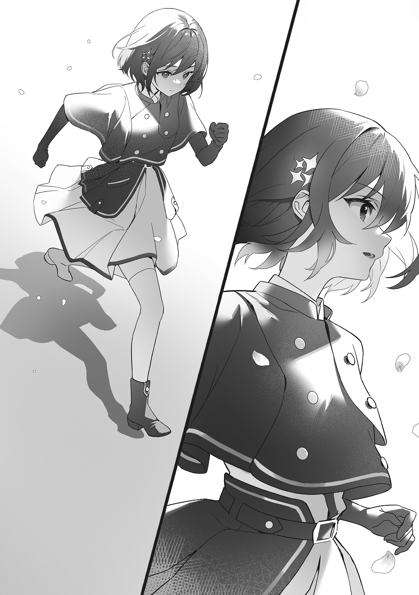
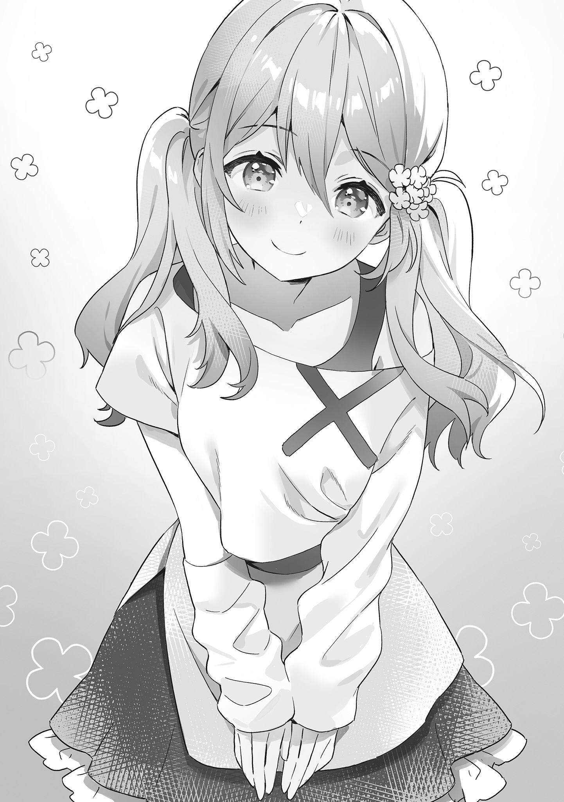
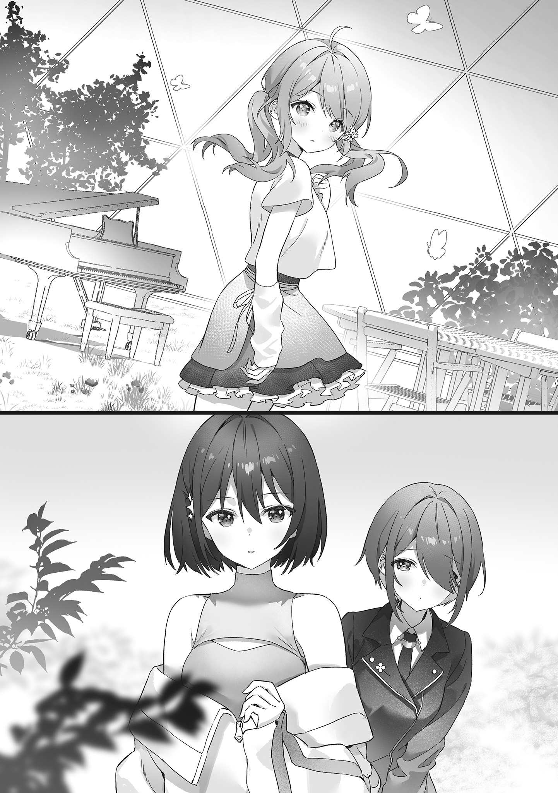
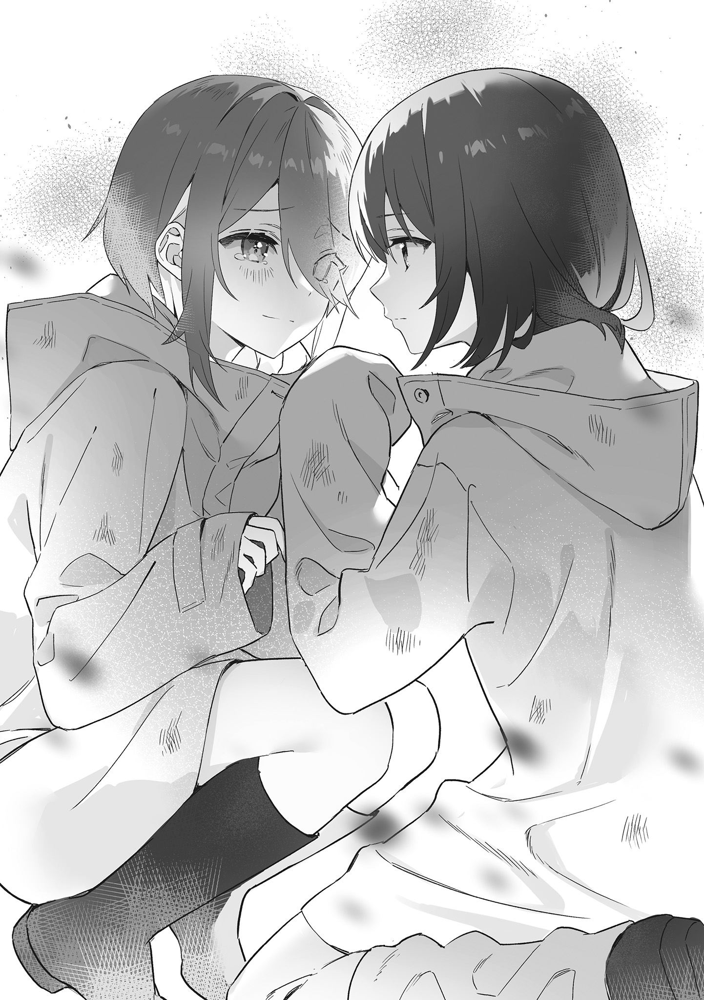
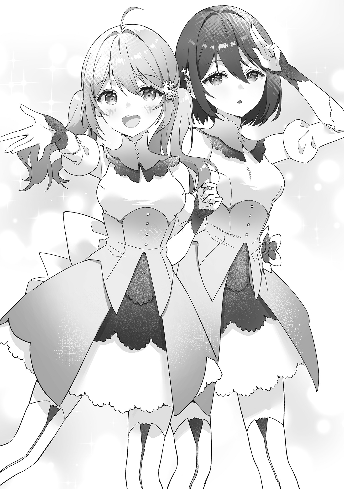
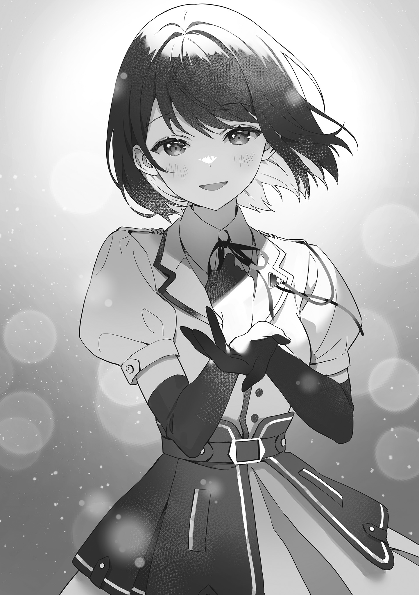

本電子書籍を示すサムネイルなどのイメージ画像は、再ダウンロード時に予告なく変更される場合があります。
本電子書籍は縦書きでレイアウトされています。
また、ご覧になるリーディングシステムにより、表示の差が認められることがあります。
口絵・本文イラスト●餡こたく
第一章 砂漠に降る雨
少女が一人、丘の上を走っていた。
「…………」
吹く風と、注ぐ日差しと、少女のほかには、何もない。
夜明けと共に走り出し、日がすっかり昇った今の時刻まで。休むことなく一定のテンポで刻み続けた軽やかな足音を、ひときわ強い風がかき消す。肩まで伸びた少女の髪──夜空にも水底にも似た深藍が風になびき、僅かな汗の滴が舞う。
丘の上は風が強い。誰からそう聞いたのだったか、少女は忘れてしまっていた。
「…………あと……」
何キロだっけ、と
そのタイミングを見計らいでもしたかのように、握り締めた手の中から低い振動音。身ひとつのほか唯一の所有物である携帯用通信端末を操作し、少女は呼び出しに応じた。
「もしもし」
『……おはよう。良い朝だな』
言葉とは裏腹に不機嫌そうな男性の声が機械越しに届く。
『ずいぶん風の音が大きいようだが、今どこにいる？』
「え……？ どこって、ええと。どこだろう」
その質問にはひとつしか回答がなかった。
「とりあえず、砂漠かな」
彼女が夜明けからずっと走ってきて今こうして立っている場所は、
『……ひとつ
「九割。そうなんだ。……ああ、もしかして、だから『砂の国』なの？」
『ああそのとおりだよくわかったなえらいぞ』
一切の抑揚なく棒読みで返された。
『また私に無断で走り込みか。何時頃からどこまで走ってる』
「何時……だいたい日の出た時間くらいから、だいたい太陽の方向に」
『……携帯に時計がついてるはずだな。今は何時だ？』
画面を見ると、八時四十八分と表示されていた。
「だいたい八時半」
『ついでに日付も表示されてるな。今日は何の日だったか覚えてるか』
「ライブ当日」
ライブ。
それまで曖昧な答えしか返していなかった少女が、その単語だけはハッキリと即答した。
『そうだ。その大事なライブ当日の朝に、オーバーワークで
「大丈夫」
遮るように、少女が告げる。
「私、壊れないよ」
淡々と、温度のない声で。
電話口の男性は、彼女の言葉にしばし沈黙した後、嘆息してから小言を続ける。
『……お前の限界は、お前ひとりが決めるものじゃない。スケジュール外での過度なトレーニングは控えてくれ。私が休めと言ったら休んでくれ。約束してほしい』
「休めなんて、言われたことない」
『今回のような
「それもプロデューサーの仕事？」
『うちは人手が無いから全部私の仕事だ。……そして私をそう呼ぶのなら、お前ももう少しアイドルの自覚を持ってほしい。『砂の国』のアイドルであるという自覚を』
アイドル。その単語に、少女の呼吸が
「……ごめんなさい。約束する」
約束を破ればアイドルではいられなくなる。その危惧に至り、少女はあっさり折れた。
『……普段と同じペースで東へ走っていたなら、今は風
「え。……うん、多分」
『ではそこから北東に進路を。三十分ほど歩けば前方に十二番鉱区街が見えてくる。事情を話して街に入れてもらい、水でも頂いて休憩していてくれ。我々もすぐに向かう』
北東ならこっちか、と向き直り腕を前に向ける。
「歩いて三十分なら、走ればだいたい……」
『歩け。何時間飲まず食わずで走ってたと思ってる』
本当なら歩かせるのも嫌なんだぞと、プロデューサーと呼ばれた男性は大きなため息をつく。その間にも既に、少女は北東に向けて歩き始めていた。
『それと、事務所にあったステージ衣装はどうした』
「え。持って走ると荷物になるから……もしかして、着てきたらダメだった？」
『砂で汚れるだろうが……！』
「あ、そっか。ごめんなさい」
『……街に着いたら鉱員用の
「よそ者なのに、そんな色々してもらえるかな」
少女の素朴な疑問に、プロデューサーは事もなげに答えた。
『領収書は
「そうなんだ。わかった」
最強、そう呼ばれた彼女……レインは、ただ淡々と言葉を返して端末を切る。
風と砂を浴びて日差しに
「……確かに、こう風が強いと砂だらけになっちゃうな……」
たった今その事実に気づいたかのように独り
「これ……花びら？」
どこかずっと遠くから、風に乗ってきたのだろうか。捨てるのも忍びない気がして払わずにおいたが、歩くうちにすぐ吹き飛ばされてしまうことには気づかなかった。
レインはいつも気づかない。ステージの外のことに頓着がない。砂漠を渡れば衣装が砂で汚れることも、会場まで人の足で走っても半日以上かかることも、ステージ衣装には携帯をしまうポケットすら無いことも。気づかないし、気にしない。
風が運んできた、砂漠に咲くはずのない花の香りにも、彼女が気づくことはなかった。

◇
むかしむかし。というほどの昔ではなく、ほんの七、八十年ほど前の話。
この場所にはかつて、目に見える限りの砂漠よりずっと広くて大きな、人と、家と、緑で
月の暗いある夜、たくさんの
空から見ればほんの小さな島国を襲った隕石災害は、人を、家を、緑を吹き飛ばし、砂粒ほどに細かく砕け散った隕石片と
生き残った人々は古い街の名前を捨て、砂漠と化した一帯を『砂の国』と名づけて生き抜く
数年後、とある国家で隕石片の中から未確認物質が発見される。
それは「人の感情に反応してエネルギーを発する」性質を持った石。
後に『
隕石として地表に降り注いだ共心石は今もなお各地に山と眠っており、砂の国の九割を占める砂漠の砂にも微小な隕石片が含まれている。すなわち国中が共心石の採掘場だ。
そうした採掘作業の拠点であり、また国民の生活の中心でもあるのが、
「……着いた」
ここ、鉱区街である。
隕石の爆風と日夜
「……どこから入れば……」
うろつく不審な珍客に、壁の上から声がかかる。
「おーい、キミそこで何してんだ」
見上げれば、
「って、え、まさか……？」
「あの、すみません。街に入れてもらえませんか。領収書は
「は、はいどうぞ！ 向こうが正門です！ ……領収書……？」
住人の指差した方を確認し、お辞儀を返してから歩き出す。
正門にたどり着くと既に門扉は開けられていて、大人に子供、十数人の住民が並んでざわついていた。
「これはこれは、ようこそ我が十二番鉱区街へおいでくださいました！ それでその……本日は、一体どういったご用向きでしょう……？」
「えっと、エアシャワー？とかいうのをお借りしに来ました。領収書は
「はっ……？ さ、砂漠を通ってこられたので……？ も、もちろん構いませんが」
「ありがとうございます。領収書は天地事務所で」
「いえいえそんな、
「……でも」
採掘用の機械設備や動力の
「我が街があるのも我々がこうして生活できるのも貴女様のお陰なのです。恩人からお金など受け取れません。ちょっとキミ、ご案内してさしあげて！」
笑顔で
「本物だ」「アイドルって実在するんだ……」「あのおようふくキレーだねー」「えー砂だらけでばっちくない？」「たしかにー」「何で駅じゃなくて砂漠の方から……？」「もしかして、この街の近くに住んでるのかしら」「だったらみんな知ってるって」
遠巻きに
そんな他人に自分がどう見られているかなど、レインには興味がない。
「こちらです、どうぞ」
連れられた採掘場出入口の詰所にある設備で砂を飛ばすと、まとっていた衣装はようやく本来の輝きを取り戻した。
「よかった、
案内してくれた女性に「どうも」と一礼し、レインは正門の方へ戻ろうとする。
「あ……違った」
目的を終えたのでまた砂漠に戻ろうと思っていたレインは、プロデューサーとの会話を思い出し、せっかく綺麗になった衣装がまた砂まみれになることにギリギリ気づいた。
「あの、お水をいただけますか。それと座って休める場所も。領収書は天地事務所で」
「それなら、街で一番大きな中央食堂へご案内しますね。……領収書……？」
首を
まだ昼前ということもあり、食堂内は閑散としていた。片足に包帯を巻いた男性と、ぼーっと虚空を見つめている男性が、壁に掛けられた『テレビ』と呼ばれる「別の場所の景色を映す機械」の前の席に向かい合って座り、会話しているだけ。
「今日、午後から『
「…………」
「俺も現場出れねえでヒマだから付き合ってやるよ。娘さんの出番、今日もあるのか？」
「…………」
「俺らの応援で結果が決まるわけでもねえけど、父親のお前は見守っててやれよ」
「…………」
聞こえてきたのは一方の男性客の声だけだった。これは多分、会話とは呼ばない。
「お待たせしました」
店員と
「ありがとうございます。領収書は
「はは、ただの水ですよ。お代は結構ですって」
コップ一杯の冷たい水をまたしても無料で受け取ってしまったレインは、表情ひとつ変えないまま小さく
「いいのかな。私、ただのアイドルなのに」
「お前がただのアイドルなら良い顔はされないだろうな」
ややダウナーな声に
「あ、おはようプロデューサー。早かったね」
「そうだな。
橋車とは、『橋の国』が各国に路線を張り巡らせ運行している、
「……ともかく、合流できて何よりだ」
息の上がった様子を見ると、橋車の発着駅からここまでは走ってきたのだろう。
「お疲れ様。水、いる？」
「私はいいからお前が飲め」
「ん。いただきます」
言いつけの通りによく冷えた水を喉に流し込む。普段より強く感じた潤いに、レインはようやく自分の喉が渇いていたことに気がついた。
「本当なら一杯どころでは足りないだろうし、もっと休ませたくもあるんだが……」
ちらり、とプロデューサーが目をやった店の外の広場では、予告もなく突然街に現れたレインを一目見ようと
「本当にいる……変な感じ」「近くで見るとお人形みたい」「ね。さっきから表情もずっとあのまま」「生きてるように見えないよね……」「さっき話し声が聞こえたけど、まるで機械音声だったぜ」「マジで人形だったりして」「はいはい、そんなわけないだろ」
また
「ここでは少々落ち着かない。表にクローバーを待たせているし、さっさと出るぞ」
「……クローバー……」
何の、名前だっけ。思い出そうとしつつも手を引かれるまま店を出る。
道を開けた人々の向こうに練習着姿の少女がひとり立っていた。
「レインちゃん。無事に会えたんですね、良かったです」
良かった、と言いつつ口の端すら笑わない少女を見て、レインは言葉に詰まった。
「待たせてすまない、クローバー」
ああ、そうだ。彼女がクローバー。自分と同じく、
「レインと一緒にいるの、誰だっけ？」
「さあ？ 知らね。新人アイドルかなんかじゃないの」
周囲の雑音で、クローバーの表情がだんだん暗くなっていく。
「ま、レイン以外のアイドルの名前なんて、いちいち覚えててもどうせ意味な……」
それを払うように、ぱんっ、と手を打つ音。
「ボヤッとするな、レイン、クローバー。会場に移動するぞ」
「は……はいっ」
速足で歩き出したプロデューサーにクローバーがついていく。レインも後に続いたが、背後から聞こえる雑音はいつまでも
◇
十二番鉱区街を出発した
「これでは結局また衣装が汚れるな……。客車の便を待つべきだったか……」
「いいよ、私は。どこでも」
「元はといえばお前が勝手な行動をしたから、予定していた直通便を
「……？ え、合ってるでしょ」
「……まさかレインお前、本当に走って会場まで行くつもりだったのか？」
「うん。そのために着てきたし」
プロデューサーは額に手を当て、巨大な
「……
依然として暗く硬い表情のまま、クローバーがそう
「具合。良くないの？」
「そう見えますか」
「見える。乗り物、苦手？」
「……いえ、得意な方です。そういうんじゃなくて……」
きょとんと首を
「レインちゃんは、怖くないんですか？」
「怖い？ ……何が？」
「
詰まりそうになる息で、クローバーはそう口にした。
今日行われるライブには……
各国に所属するアイドル同士が歌やダンスのパフォーマンスで互いに競い、勝った国が負けた国の領土や資源を奪う、文字通りの戦いの舞台……それが戦舞台。
勝った者が、勝ち続けてきた者がどういう扱いを受けるかは、つい先刻「最強のアイドル」レインが十二番鉱区街で体験したばかりだ。そして負けた者がどう扱われるかも、クローバーの恐怖と不安に引きつった表情が物語っている。
「クローバーは怖いの？」
「怖い、ですよ。私もう後がないんです。次負けたら、きっともう……」
縮こまって震えるクローバーの小さな肩に、『砂の国』の領土の一部が懸けられている。彼女が負ければ、領土は敵国に差し出されることになる。
「ステージ、立ちたくない？ アイドル、嫌なの？」
変わらず温度差のあるレインの問いに、彼女は憎悪とも絶望ともとれる表情を浮かべた。
「……嫌いですよ、アイドルなんて……でも、もうライブは決まってて……」
「そうなんだ。……なんていうか。大変だね」
レインの発言に、何ら悪意はない。これだけやりたくなさそうにしているのにステージに立たなければならないのは本当に大変だろうな、と思ったからそのまま口にしただけ。むしろ、一瞬だけ言い
「……クローバー。アイドルが嫌だというなら、いつでも辞めて構わない」
「あ……っ、す、すみませんっ！ 私、プロデューサーの前でこんな事……！」
「私は関係ない、お前の話をしてるんだ。そんな精神状態でステージに上がるなどもってのほかだ。戦えないなら、今すぐ舞台を降りてアイドルなど辞めてくれ」
「……すみません……切り替えます。今日こそ私、勝ちますから」
「……そう思えるならそれでいい。不安も恐怖も絶望も、舞台上へは決して持ち込むな」
それだけ言って、また黙り込む。車内に再び沈黙が降り、それから
◇
生き残った人々が先の見えない未来への絶望に
彼女たちこそが、当時の「アイドル」。
地域の壁を越え有志で集ったアイドルたちは、人々を勇気づけるべく各地で無償のライブを披露した。滅びかけた世界で歌われた愛と希望の歌が、彼女たちの
その強い影響力に『橋の国』が目をつけた。
アイドルの歌は、人々に強く大きな感情を与える。すなわち、より多くの感情エネルギーを手に入れることにつながる。そこで彼らは、エネルギープラントとなる
はじめのうちは「全国対抗アイドル大会」とでも言うべき一種の興行に過ぎなかったそれは、国家間の
滅びかけた世界では、誰もがみな足りなかった。足りないから奪い合った。
そのための手段が、闘争や略奪から「アイドル」に変わっただけ。
人々に愛と勇気と夢と笑顔を与えてきたアイドルは、絶望の暗闇の中で光り輝いていた希望の
彼女たちが演じるライブさえも、やがて意味を失い兵器同士の武力誇示に成り果てた。
勝てない者は
そんな戦場で愛の歌を歌おうとするアイドルも、いつしか誰一人いなくなり。
国の思惑通りに機械のように上手に歌って踊る、従順な人形だけが生き残った。
誰もアイドルを愛さなくなってどれだけ
誰も彼女たちの歌を聞き届けなくなってどれだけ経っただろうか。
誰もアイドルの勝敗以外に興味を持たなくなってどれだけ経っただろうか。
それでも、今日もまた、
「レイン」
舞台袖の暗がりで目を閉じていたレインは、自身の名を呼ぶ声に目を開ける。
暗くてもよくわかる、炎のように紅い瞳をした目つきの鋭いアイドルが立っていた。
「今日こそあんたに勝たせてもらうから。覚悟はいいわね」
「え……っと」
「…………」
「………………………………あ。フレア」
思い出すまで待ってくれた彼女は、一層鋭く目を細めてレインを
今日のレインの対戦相手、『鉄の国』のフレア。
自国では間違いなく最強と言われる彼女だが、『砂の国』……レイン相手の戦舞台にはこれまで十六回連続で敗れている。
もっともレイン以外の相手には一度も負けたことがなく、『砂の国』以外の国に対してはお釣りがくるほど勝利を収めてきていたが、ならばどうして彼女がレインとの対戦にこれほど強く執着し続けるのか。レインは知らなかったし興味もなかった。
「そんなに勝ちたいなら、今ここで私の指の一本や二本でも折っていけばいいのに」
「い、痛そうなこと言わないでくださいよ……」
レインのひとつ前の出番を目前にしたクローバーが青ざめる。
「何で国同士の戦争なのに、誰もそういうことしないのかなって」
「国同士は戦争だと思ってないからじゃないですか」
首を
「国の偉い人たちは、これを『戦』舞台なんて呼びません。アイドルたちが集まってライブをしているだけです。血も流れないし人も死なない。ただ勝ち負けがあるだけの平和なライブ、そういう建前。裏で何が起こっていても、どんな
この世界には、隕石が落ちるよりもずっと前から「戦争はよくない」「命は大切だ」といった不文律とも呼ぶべき価値観があった。限られた資源を奪い合うために兵器を造って撃ち合えば人が死ぬ。人が死ねば、いずれは国も痩せていく。
その点、戦舞台では血が流れない。ただアイドルが舞台の上で歌って踊るだけで、誰も死なない。どの国にとっても都合が良かったから、今までずっと続いてきた。
「敵国のアイドルの指を折る子が出れば、その子は次の舞台の日に足を折られるでしょうね。それを取り締まるルールはありません。ここは戦場ではないので、そんな物騒なことは起こらないからです。みんな報復から自分の身を守るために何もしないだけで……案外、無法地帯が一番平和なのかも」
「私、別にフレアの足折らないよ」
「……そうですね。そんな必要もないでしょうし。そもそも、レインちゃんなら指の一本や二本折られたところで問題なくパフォーマンスできそうです」
「うん。……いや、折られたことないからどれくらい痛いかわかんないけど」
温度のない瞳で、握っては開く手を見つめ。
「でも死ぬほど痛くても私は歌えるし、絶対に壊れない」
「……本当に、
「凄いのかな。わからない」
「一体どうしたら、そんなに……」
突如、青い光が舞台側から差し込んだ。続いて、無機質なアナウンスが鳴り響く。
『第十一演目、『砂の国』ブルーローズ対『霧の国』ヴェール。勝者、ブルーローズ』
自国の勝利を告げるアナウンスに背中を押されてか、クローバーの表情が少し和らぐ。
「……私も、勝ってきます」
「うん。行ってらっしゃい」
降りてきた二人のアイドルと入れ違いに、クローバーとその対戦相手は
この光はすべて、
光が強いほど多くの感情エネルギーを生み出している
大昔のアイドルは一人ずつ色を持っていて、人間の観客がそれぞれの色に光る棒を持ち寄って互いに愛を伝え合っていたという。もっとも、色の多さで勝ち負けが決まるようなルールは無かったらしいが。
「……これも、誰に聞いたんだっけ」
興味がないことは、すぐに忘れてしまう。
だって全部、舞台の上では必要ない。
不安も恐怖も絶望も舞台上へは持ち込むな、そうプロデューサーは言っていたけれど。
それ以外の感情も、余計な知識も記憶も。
ふわふわした愛も夢も、何もかも全部必要ない。
アイドルは、歌とダンスの実力が全て。それだけが石を光らせると歴史が証明してきた。実力で戦わずに愛の歌を歌おうとしたアイドルは、一人残らず負けて
実力以外のものは全て重りだ。ステージで自在に舞い踊るためには、重りは必要ない。
必要ないから全部捨てて、全部忘れ去って……そうしてレインは『最強』になった。
「……今日も私が勝つから、フレア」
そんな闘争心未満の当たり前な宣誓も、舞台袖に置いていく。
実力以外の何を持ち込んだところで、実力以上のパフォーマンスはできない。
たとえどんなに負けたくない相手が隣で歌っていたとしても。
ステージの上では、アイドルはいつだって一人きりだ。
◇
『第十二演目、『鉄の国』ウィスタリア対『砂の国』クローバー。勝者、ウィスタリア』
画面から発せられた敗北を告げる無機質なアナウンスに、『砂の国』十二番鉱区街中央食堂の客がいっせいにどよめき出す。
「えっ、おいマジか負けやがった！ どこの誰だよアイツ……！」
「なんか見覚えある気がするけど……誰だったかねぇ」
「ああっ、思い出した！ ほら、今朝レインと一緒にいた地味なヤツだよ！」
「何ぃ!? じゃあレインの事務所のアイドルってことかよ！ ったくよぉ、ホントあそこはレイン以外パッとしねえな……！」
好き放題の野次を飛ばす客に冷ややかな視線を送りながら、防砂コートを羽織った女性がカウンターの店員に告げる。
「……鉱員弁当、二人前」
「すみませんねお客さん、騒がしくて……今日はたまたま
「いや、いい。元々持ち帰るつもりで来た。家で娘が待っているんだ」
明らかに不機嫌そうな声だったので、店員はそれ以上刺激しないよう
「なあ、最近『砂』の負けが続いてないか……？」
「新人がどいつも
「二番鉱区が全部『鉄の国』に取られてからまだ二ヶ月も
漠然とした不安と共に、次第に大きくなっていった彼らの
『最終演目。『砂の国』レイン対『鉄の国』フレア』
その名前を聞いただけで、
「……まあ、最後はどうせレインが勝つからいいか」
「数字の若い昔の鉱区なんて
「ほんとほんと。フレアのヤツもしぶといよな、よくやるよ」
「でもま、あとはもう結果のわかりきったお人形劇ね。それじゃ省エネっと」
店員の女性が慣れた手つきで中継映像の画面を消そうとする。それを止める客もおらず、そればかりか一人、また一人と席を立ち食堂を後にしていく。
当然だ。
そして『砂の国』最強のアイドルであるレインは、今日も当然いつも通りに勝つに決まっている。結果がわかっているのなら、わざわざ見届ける必要もない。
彼等が信頼しているのはレインのパフォーマンスの技量ではなく、ただ彼女が「勝てるアイドル」「最強のアイドル」であるという事実だけ。
この場にも誰一人、最終演目を……レインのステージを観たいと願う者はなかった。
「ま、待ってください……っ！」
今日この日だけは、たったひとりを除いて。
「あのっ、もうちょっとだけ観ててもいいですかっ」
声を上げたのは、レインと同じか少し下くらいの年頃の少女だった。ハキハキと元気なよく通る声に、何人かの客の顔が少女へと向く。
「べ、別にいいけど……どうせいつも通りレインが勝つだけよ？」
「どうもありがとうございますっ！」
ぱっと満面の笑みを浮かべ、元気に丁寧な感謝を述べた少女に、画面を消そうとしていた店員の女性も思わずほんの少し顔を綻ばせた。
「おとなり、失礼してもいいですか？」
テレビ前の席に座っていた男性が、無言でこくりと
「わぁ……っ！」
画面に映ったアイドルの姿に、少女はらんらんと瞳を輝かせる。
誰の目にも
誰もが
少女ただ一人だけが、レインのことを見ていた。
「鉱員弁当二人前、お待たせしました」
分厚い風呂敷包みの弁当を受け取った防砂コートの女性が、はたと何かに気づく。
「……っ」
あたりを見回し、画面の前に
「おい、何してる。帰るぞ」
「あっ、お母さん。ちょっと待って、もう少しだけ……っ」
母と呼ばれた女性は、少女が夢中になっている画面に目をやり、深く
「……何が楽しいんだ、こんなもの。アイドルなんて、くだらない……」
そして、そのくだらないアイドルのライブとやらが終わるまでは動いてくれそうにない少女を待つべく、手近な空席にどかっと腰を下ろすのだった。
◇
まずは、互いが一曲ずつ持ち寄った自らの持ち曲を交互に歌う「自由曲」パート。
そして、『橋の国』で定められた共通の曲を二人で同時に歌う「課題曲」パート。
公平を期すため、課題曲はおよそ四十曲ある候補の中からランダムに選ばれ、ステージの直前にアナウンスされるまでアイドル本人に知らされることはない。
事前にいくらでもレッスンできる自由曲は、お互い
自分の得意分野を発揮できるか、相手の苦手な曲を引き当てられるか。パフォーマンスの実力だけではなく、そういった勝負運も結果に大きく影響してくる。
『続いて、課題曲。二十七番。両アイドルは所定の立ち位置へ』
ただし、それはあくまで普通のアイドルが相手だった場合の話。
最強のアイドルには、苦手とする課題曲など存在しない。
「……ふー……っ」
レインの真横、数メートル先の立ち位置から、フレアの
自由曲は演目前に名前を呼ばれた順に披露する。今回はレイン、フレアの順。そのまま息つく暇もなく課題曲パートに移行するので、後攻側がやや不利となる。
しかし、フレアは自身の持ち曲で最も激しいダンスを伴う楽曲を完璧に踊り切った直後、ものの数秒で既に呼吸を整え終えていた。
フレアは強い。レインがこれまで相手してきたどのアイドルよりも。
加えて『二十七番』は激しく大胆な振り付けが特徴の、フレアが最も得意とする楽曲。
「………………」
それでも、レインの目には既にフレアは映っていなかった。
ステージの上では、アイドルはいつだって、一人きり。
「♪────」
音楽が流れ、二人が同時に動き出す。
レインの頭には、何も無い。
こう動こう、こう歌おうという意識も。
こう見せたい、こう踊りたいという欲望も。
ただ一心に歌い踊る、その一心さえも存在しない。
全ての重りを捨てたからこそ、誰より軽やかに踊り、誰より伸びやかに歌える。
一方、フレアの動きには欲が出る。せっかく引き当てた得意曲。自分の実力を最大限発揮するチャンス。十六連敗の汚名をすすぐ千載一遇の好機。
もちろんフレアも歴戦の強者、雑念や私情ならば容易に押し殺せる。しかしどれほど完璧なパフォーマンスに徹するつもりでいても、その吐息には、指先には、どうしても欲や気負いが、余計な熱が乗る。
レインにはその熱が全く無い。
機械のように正確に、精密に、繊細に。これまで何百何千何万回と繰り返してきたレッスンの延長のように、完璧なステージを『再演』していくだけ。
一切の熱なく演じ切る彼女の姿を、誰かが『
何度繰り返しても毎回同じように完璧な彼女のステージを、誰かが人形劇と呼んだ。
レインこそ
（……まだ、届かないっていうの……！）
曲が終わりに差し掛かる。
レインにはほんの一瞬、フレアには永遠のような時間が終わる。
遠すぎる『最強』。思わず
そして、いつも通りに完璧なレインの姿もまた、誰の目にも映らない。
舞台上には二人のアイドル。しかし誰より孤独な四分間を終えた二人を照らしたのは。
『最終演目、『砂の国』レイン対『鉄の国』フレア。勝者、レイン』
目も
◇
「……今ので終わりか。気が済んだならさっさと帰るぞ」
「うんっ。お待たせ、お母さんっ」
少女は満足げな笑みを浮かべて
「お店の人も、ありがとうございましたっ！」
ニコニコ笑顔でオーバーなお辞儀をし、足早に店を出ようとする母親に続いた少女に、店員は
「あのねお母さん、すごく……すっっっごく、キラキラだった！」
「聞いてもない感想を勝手に言うな」
「はぁいっ。えへへっ……ふ～♪……ふーふん～♪」
「歌うな。やかましい」
心の底から楽しそうな少女とは対照的に、
「あんな親子、この街に住んでたっけか？」
「いや、見ない顔だよ。よその集落や
「しっかし似てない親子だったな……あれ？ そういえば母親の方、弁当注文してたときに娘は家で待ってるって……聞き違いかな」
雑談をしながら店じまいに取り掛かる店員を横目に、朝からずっとテレビ前の席に座っていた二人の男性のうち、足を
「そういやお前の娘さん。結局出てこなかったな」
「……………………、ああ。そうだな……」
返事は来ないとばかり思っていた男が驚いて向かいの席に向き直ると、じっと虚空を眺めていたはずの彼の同僚は、モニターを見つめながら静かに涙を流していた。
「……久しぶりに聞いた気がするわ。お前の声」
さっきの不思議な少女の登場といい、今日はおかしなことが続くものだと男は苦笑した。
◇
「フレア。どうしたの、座り込んで」
当のフレアは、ステージ上にくずおれるように座り込んだ姿勢のまま、
「そこにいると邪魔になるよ。もう終わったから」
レインの言葉にフレアはハッとレインを見上げ、ほとんど反射で怒鳴り返す。
「まだ終わってない……っ！」
「え」
思わず口をついて出た自分自身の言葉に動揺し、フレアはぎゅっと唇を結んだ。
「あれ。もう終わったよね、ライブ。私たちの後、まだいたっけ……？」
一方のレインは、何やらズレたことをぶつぶつ
「……いいえ。私たちで最後よ」
「だよね」
そしてレインは表情ひとつ変えないまま、座り込んだままのフレアへと手を差し出す。
「……何よ、その手は」
「疲れて立てないなら手、貸すよ。の手」
「っ……バカにしないで。一人で立てるわ」
乱暴に振り払うことはせず、宣言通りフレアは一人で立ち上がった。
そうだ、まだ立てる。まだ歩ける。まだ戦える。まだ終わってない。
「……レイン」
「なに」
「次こそは必ず、私が勝つわ」
「こちらこそ」
熱のないレインの返答を背に、フレアは早足でステージを後にした。
ステージを降りた後、各国ごとのアイドルたちが利用する「楽屋」に向かったレインは早々に着替えて帰り支度を済ませ、ただ一人部屋に残っていたアイドルに目を向けた。
「……クローバー？ 着替えないの？」
レインが楽屋に戻ってきた時からずっとステージ衣装のまま、部屋の隅に立ち尽くして
フレアもそうだったが、
とはいえ、プロデューサーからは帰りも一緒に
「クローバー」
「……っ!?」
縮こまった肩に手を乗せると、そこから電気でも流れたかのようにクローバーの
「……っ、あ……っ。レイン、ちゃん……」
「着替えて帰ろう。一人じゃ無理なら手伝う」
「てつだ……っ、い、いえっ、平気、です……」
途切れ途切れに
「やっぱり具合、良くなかった？」
「……っ、そ、れは……」
震える唇の隙間から、不規則に漏れる呼吸。青ざめた顔に止まらない汗。これだけの条件が
楽屋を見渡し、二人分残っていた水のボトルを見つけたレインは、一本手に取って蓋を取り、クローバーに差し出した。
「はい。水飲んで」
「……っ、はい……。ありが、……っ！」
「あ」
クローバーの震える指先が取り落としたボトルの中身が、レインの服にかかった。
「ごっ、ごめんなさいっ……！」
真っ青になりながらタオルを取り出し拭き取ろうとするクローバーに、レインは全く動じていない様子で静かに答えた。
「いいよ。もう一本あるし」
「そ、そういうことじゃ……っ」
顔を上げたクローバーの目に、レインの無表情が映り込む。
彼女はきっと、何も気にしていない。クローバーの支度を待たされたことも、着替えたばかりの服が
クローバーが切望してなお取りこぼした勝利にすら、何の達成感もないのだろう。
普通の人間がどれだけ手を伸ばしても届かないような圧倒的な高み。
心なんてとうに捨て去った、最強の……。
「……あぁ。本当にすごいなぁ、レインちゃんは……」
そよ風のように弱々しく消えた声は、目の前のレインの耳にすら
◇
「ああ、こちらにいたか、
楽屋前の廊下でレインとクローバーを待っていたプロデューサーのもとに、眼光鋭い初老の男性が現れる。
「……知事。いらしていたのですか」
砂の国の内政と外交の一部を担う知事は、プロデューサーの肩をバンバンと
「ははは、他でもないキミを一言
「彼女の努力がもたらした成果です。私は何も」
「何を謙遜することがある。レインという最強のアイドルを
「
言葉は物腰低く
「……しかしだね」
知事の持ってきた「本題」を思えば、ヘラヘラ笑って語らう気にはなれなかったからだ。
「レインに続く才能がキミの元に一向に生まれないことは、我が国としても非常に嘆かわしい限りだ。キミの所の、もう一方のあの体たらくは一体どういうことだね？」
「……お言葉ですが、彼女も力を尽くしました」
「ではやはりその程度が限界の弱者というわけだ。よいかね天地くん、『鉄の国』はレインの対策のため、一人の最強ではなく百人の強者を用意した。フレア以外のアイドルも決して弱くはない。こちらが弱者ばかりをぶつけていてよいわけがないのだ」
「………………はい」
「我々にも負けて失うものがある以上、いつまでも勝てないアイドルをステージに立たせておくわけにもいかん。もう一方の……何と言ったかな。ともかくアレには今後一切のライブ参加を禁止する。これは『砂の国』全域をもっての対応だ」
つまり、名前や所属を変えても無駄だと言いたいのだろう。
「弱者を根気強く育てようという気概は買おう。しかし育てても仕方のない無能には早々に見切りをつけるべきだ。でなければいずれ、キミがレインという才能を見出せたのは単なる幸運な偶然に過ぎなかったと誰もが認めることになる」
「……ご忠告、痛み入ります」
「うむ。次のには期待しているよ。励みたまえ」
肩に乗せた手に力を入れ、低い声でそう告げてから、知事は去っていく。
その背中が廊下の向こうの曲がり角に消えるまで、プロデューサーは頭を下げていた。
「お待たせ、プロデューサー。誰かいたの？」
楽屋の扉を開けて出てきたレインとクローバーに、言葉を濁して答える。
「ああ、なに、ちょっとした知り合いとの世間話だ」
「そう……なん、ですか」
クローバーにも、知事とのやり取りが聞こえていた様子はない。もっとも彼女は、ステージを降りてからずっとこの世の終わりのような暗く沈んだ表情をしていたが。
「……二人とも、今日はご苦労だった。忘れ物は無いな。帰るぞ」
会場の出口へと歩を進めつつ、後ろに続く二人にそれぞれ続けて業務連絡を言い渡す。
「レインはこのまま寮に直帰してくれ。今日は帰ったらゆっくり休んでいい」
「うん、わかった」
「クローバーは……少し、話がある。一緒に事務所に寄ってくれるか」
「……っ。は、い」
「私よりもクローバーの方が、ゆっくり休んだ方がいいと思うよ」
「……もう、休んでも意味なんてないですよ……」
自嘲じみて
「ねえ、レインちゃん。ひとつ聞いていいですか」
「なに？」
「今朝、十二番鉱区街で私を見た時。プロデューサーがクローバーって呼んでくださるまで……忘れてましたよね、私が誰なのか」
それまで黙って二人のやり取りを聞いていたプロデューサーが、ハッとして
クローバーは、見ている方まで苦しくなるような悲痛な笑みを浮かべていた。
「そんな
しばらく沈黙した後、レインはやはり表情を変えないままで答えた。
「うん。ごめんね、誰だか思い出せなかった」
「レインッ……！」
思わず声を上げたプロデューサーを、クローバーがそっと制した。
「いいんです。むしろ、少しだけ気持ちが楽になりました」
弱々しく
会場の出口や帰りの
◇
『……八戦、三敗か』
低く、冷たく、重く。
通信機越しとはいえ、短く告げられたその一言は、沈みかけた
「ひぃ……っ……！」
フレアの隣で大粒の涙を流し、歯をガチガチと鳴らしながら震えているアイドルは、その「三敗」のうちの一人。普通ではない
『……何を、そんなに怯えている？』
「ひっ……！ す、すみませ……っ！」
声の主は、『鉄の国』の最高権力者……「総帥」と呼ばれる男。
『舞台の上でもそうなのか？』
「そ、っ、そのような、ことは、け、けっして……っ」
『実に説得力に欠ける』
「っ、ひ、……っ」
呼吸さえおぼつかない彼女の手を、決して悟られないようにフレアはそっと握った。
「ぁ……」
大丈夫。そう心の中だけで伝える。
この場では、フレア自身も同じく敗者だ。どんな罰があるとしても、同じものを自分も一緒に受ける。だから少しだけでも安心して、落ち着いて息を整えて、と。
『一敗。名前は？』
「は、ひっ……？」
一敗、とだけ呼ばれたアイドルは、それが自分のことだとすぐには気づけずに。
『煩わせるな。名前を聞いている、答えろ』
さらに低くなった総帥の声で、全身に電気が走ったかのように
「ひっ、ご、ごめんなさいっ……ふ、
「…………！」
フレアだけでなく、その場にいた他のアイドル全員が彼女の失態に息を
『……気のせいか？ 今のはまるで人間の名前のようだったが。つまり、自分たちアイドルは人間ですとでも言っているように聞こえたのだが……？』
「……！ ぁっ、あ、ああっ」
尋常でない震えが、握った手からフレアに伝わる。
「ち、違、ちがい、ますっ。ガ、っ、ガーネ、ット……わ、わた、わたしは、ガーネットですっ！ も、もうしわけ、ありま、せんでしたっ……！」
『よろしい、ガーネット。あとは？』
再びの簡潔な問いに、ガーネットが答えに詰まってパニックに陥りそうになる。
「フレアです」
「あっ……シ、シルエット、ですッ……！」
総帥が尋ねたのは、残る「二敗」の名前。いち早く察して答えたフレアに、慌ててもう一人が続いた。
『では、フレア、ガーネット、シルエットに、一週間の『特別訓練場』行きを命じる』
「ひ……っ!? そ、そん、なっ……！」
『通達は以上だ』
引き
「い、いや、嫌ぁっ！ 嫌だよぉ……！ しっ、死にたくない……！」
「ガッ……ガーネット！ あんたが総帥の機嫌損ねたせいで、あたしまでッ……！」
周囲の目も
鉄の国……
鉄の国のアイドル……歌って踊るだけの無知で無力な少女たちにとって、特別訓練場行きを言い渡されることは死刑宣告を受けるに等しい。
「総帥の寛大なお心遣いに感謝なさい」
通信機を手に総帥の言葉を伝えていた女性が、ガーネットの頭上から言い放つ。
「
もちろん、そんな
「死にたく、ない……！ わたしっ、し、死にたくっ、ないよぉっ……！」
「くそ、くそっ、ふざけんなよっ……！」
これが、彼女たちの生きている世界。
アイドルが閉じ込められた地獄。
「……まだ、終わってない」
これまで幾度もレインに敗れ、その度に特別訓練場に送られてきたフレアが、他のアイドルのように「卒業」していないのは、その闘志で訓練を乗り越え続けてきたからだ。
どんなに強い雨に打たれても、
それでもなお、最強には程遠い。
レインは……あの「雨」は、災害だ。
砂の国にとっては恵みの雨なのかもしれない。しかし強過ぎる雨がいつまでも
止められる誰かがいるとすれば、彼女に最も近い領域にいるはずの自分しかいない。
次こそ届く。届いてみせる。
西の地平に沈みゆく赤い赤い
◇
夜半。月明かりだけが
事務所にはレッスンルームの他にも、アイドルが寝泊まりするための寮、様々な運動器具を備えたトレーニングルーム、楽曲の録音なども行えるサウンドブースといった数々の施設が備わっており、所属アイドルが何不自由なく活動できるような環境が『橋の国』の多大な援助により整えられている。
スイッチ一つで部屋の明かりを
「…………次……」
床に置いた携帯端末から、ランダムに選曲された課題曲が次々に流れる。音に合わせ、何百何千何万回と
鏡の向こう、闇の中で踊る人形の姿は、もはやレイン自身の目にすら映っていない。
「……レイン!? お前、こんな時間まで……！」
途中でレッスンルームに入ってきた誰かの声が聞こえても、視界が突如昼間のように明るくなっても、レインはダンスを止めなかった。
「レインッ！」
少し痩せた大きな手が、レインの腕を強く
それでようやく、レインは動きを止めて声の主に目を向ける。
「………………、あれ？ プロデューサー」
明かりを
「こんな時間まで何をしている。今日はゆっくり休んでいいと言わなかったか？」
その言葉に、レインは表情ひとつ変えずに淡々と答える。
「うん。だから、適当に
「もう今日ではない」
楽曲の再生を停止し、拾い上げた携帯の画面を突き付ける。表示時刻はとうに深夜０時を回っていた。
「そうなんだ。気づかなかった」
「……せめて明かりくらい点けたらどうだ」
点灯している部屋……つまり誰かが使用中の部屋は、事務所のシステムを通じて確認することができる。少なくともこんな時間になる前に気づけたかもしれない。
「えっと……忘れてた」
まるで気にも
レインの身体には、これまで何百何千何万回と繰り返してきたレッスンの全てが刻み込まれている。それを再現するのに、鏡が見える必要すら無かっただけ。声が出て身体が動いて曲が聞こえればそれだけでよくて、部屋を明るくしておく意味が無かっただけ。
必要ないから切り捨てただけ。いつものように、当たり前に。
「どうして……」
すぐに忘れるかもしれない言葉を、ほんの数秒だけでも心に留め置くために。
「どうして、ここまで自分を追い詰めようとする？」
別段、追い詰めているつもりはない。
歌とダンスはアイドルに必要なものだから、磨いているだけ。
だけど、強いて言うのであれば……。
「今日、相手したアイドルの子に」
「……フレアか？」
「そう、フレア。フレアに言われたの、次こそは勝つって。だから私も、負けないように練習しなきゃって思って。負けたら、何もかも意味がなくなるから」
「そんなことは……」
「あるよ。だってアイドルは、戦って勝つことが全てでしょう？」
違う。そう否定しようとしたプロデューサーの喉は、しかしその言葉を紡げなかった。
他でもない彼自身がつい先刻、敗北したアイドル一人をその末路へと導いてきたばかりだ。同じ口で
「……全て、とまでは言わない。負けないこと以上に大切にしてほしいこともある」
「そうなんだ」
それが一体何なのかを問うこともなく会話を切り上げ、プロデューサーの手から携帯を取り返そうとするレインに、彼は険しい表情を向けた。
「……何のつもりだ？」
「何って、曲。途中だったから。練習の続き」
プロデューサーは深い
「ダメだ。今夜はこれ以上のトレーニングは認めない。すぐに切り上げてもう休め」
「……でも」
「朝の走り込みに始まって、こんな真夜中までろくに食事も採らずに一日中
「……私、壊れないよ」
朝と同じ言葉。あくまで自分は壊れないお人形なのだと言い張るだけの決まり文句は、今はあまりに説得力に欠けていた。
「……壊れないからといって、壊れるまで踊っていいわけではない。約束したはずだ。スケジュール外の過度なトレーニングは控える。私が休めと言ったら休む」
「約束……」
アイドルとプロデューサーとの約束。破ればきっと、アイドルを続けさせてもらえない。負けてアイドルの意義を失う以前に、アイドルでいられなくなる。
「……わかった」
だからレインはこの命令を受け入れるしかないと、プロデューサーにもわかっていた。どんなに
「それと、これを」
「……？ 水と、ゼリー……？」
手渡されたのは水の入った一本のボトルに、無機質な容器に入った『橋の国』製の栄養補助保存食であるゼリー飲料。
「夕食分には
「それも、命令？」
「っ……そうだ。プロデューサーとして命令する。飲め」
命令と聞いた瞬間、迅速かつ恭順に、レインは容器を口に運んだ。
「……んっ…………」
全身が急速に潤っていく感覚があっても、肉体が水分を欲していたのだとレインが気づくことはなかった。
「ごちそうさま」
空になった二つの容器を返す手の冷たさと、変わらず温度のないレインの瞳に、プロデューサーは言葉もなく顔をしかめるのみだった。
「じゃ、おやすみ。プロデューサー」
「ああ……」
事務的に告げて部屋を出て行ったレインを、視線も合わせられないまま見送る。
「……アイドルに見せていい顔じゃないな……」
一人で使うには広すぎるレッスンルームの鏡に映った情けない顔を見て、プロデューサーはまた深い
◇
プロデューサーの言いつけ通り自主練を切り上げて眠りについたレインは、朝日が昇るとほぼ同時に起き上がり、練習着に着替えて寮を出た。
とはいえ、現在所属アイドルはレイン一人のみであったが。
「……あれ。他にも誰か、いなかったかな……」
事務所周辺の砂漠を走りながら、レインはふと考えを巡らせる。
朝起きて、走って、戻ってきて、歌って、踊って、また走って、夜少しだけ眠る。
昨日までのそんな生活の中に、自分以外のアイドルなんていなかった気がする。
「……っと」
ポケットの中で振動した携帯を取り出し通話に応じる。
「おはよう、プロデューサー。どうしたの？」
『おはよう。急で悪いが、今から事務所に来られるか』
「いいけど、なに？」
『顔合わせしてほしい人物がいる』
レインが言われた通り走って事務所まで戻ると、そこにはプロデューサーともう一人、新品のスーツに身を包んだ女性が……その服装の割には少し幼く見える、どちらかと言えば少女が立っていた。
「あ……おはようございます、レインちゃん」
自信のなさそうな笑顔で会釈した少女に続き、プロデューサーが口を開く。
「今日からは事務員としてここに務め、私のサポートをしてもらうことになった。レイン、お前のマネジメントも私と彼女との分任になる」
「改めまして、
どうやら、事務所に新しく迎え入れたスタッフの紹介らしい。プロデューサーは今までレインの世話をずっと一人でしてくれていたから、負担が減るのは有難いことだろう。
「はじめまして、早幸さん。こちらこそよろしく」
ぺこりとお辞儀をして顔を上げると、
「……レイン。お前、それは悪ふざけのつもりか？」
「え……何が？」
「何がって……！」
レインの態度に声を荒らげかけたプロデューサーの横で、早幸は逆に笑みを浮かべた。
「あー……、あはは……やっぱり」
自身のちっぽけさを
「そんな
「ク……っ」
「日吉」でも「早幸」でもなさそうな名前で呼び止めようとしたプロデューサーの声を振り切って、彼女は走り去ってしまった。
「ごめんなさい。私、どこかで彼女に会ってたっけ」
向こうは覚えていたのに自分は覚えていなくて、それで機嫌を損ねてしまった……そう解釈したレインは、ひとまず残ったプロデューサーに失態を
「……本当に覚えていないのか？」
「ん……………………、うん。ごめんなさい」
早幸の顔、言葉、仕草や表情。色々なヒントから記憶を手繰ろうとしてはみたものの、やはりレインは「日吉早幸」との出会いを思い出すことはできなかった。
「……では、レイン。昨日、私と話した内容は覚えているか」
「話？」
「約束してほしいと言ったことだ」
落ち着き払った真剣な口調。その「約束」のことなら、レインも覚えている。
「スケジュール外での過度なトレーニングは控える、休めと言われたら休む」
記憶の通りに反復すると、プロデューサーは険しい表情でレインを見つめ言い放った。
「そういうことだ。……今すぐに休め、レイン。今日から活動休止を命じる」
「…………え？」
聞き間違いかとレインが返すも、プロデューサーの表情は変わらない。
「当分の間、ライブは
「私は疲れてない。休養なんて必要ないよ」
「それは、お前が判断することじゃない」
「もし嫌だって言ったらどうなるの」
「私との約束を破ることになるだけだ」
「それ、従っても、断っても、どっちにしてもアイドル辞めさせられるってことだよね」
「……理不尽だと思うなら、もっと怒ったらどうだ……！」
「怒る……？ 怒るって……」
怒るって、どうやるんだっけ。
プロデューサーと問答を交わす間ずっと、レインの口調は言葉とは裏腹にとても落ち着いた抑揚のないものだった。
「……何もアイドルを辞めろとまで言ってるわけじゃない。しばらくの間、アイドルというものから離れてもらうだけだ」
「しばらくって、いつまで？」
「十分な休養が取れたと私が判断するまでだ」
「次のライブはどうするの？」
「お前が心配する必要はない」
取り付く島もないプロデューサーの態度に、レインは抗議を諦めて短く答えた。
「そう。わかった」
怒ることも、悲しむこともないまま。
温度のない無表情のままで、レインは事務所を後にした。
◇
真っ暗な寮の自室。
ベッドと鏡。あとは暗闇。他には何も無い部屋で、レインはぼんやり考える。
何がいけなかったんだろう。
ううん、多分、それはきっかけに過ぎなかった。約束はそれより前にしていた。
休養が必要に見えるくらい、今の自分には何かが足りないんだ。
それが何かはわからない。とっくに捨ててしまったものかもしれない。
身軽に空を
今さら拾いに戻るには、遠すぎる。
「休む……って、何すればいいんだっけ」
昨日までのレインの生活は、アイドルが全てだった。
最強のアイドルであるための努力が全てだった。
「私から、アイドル取ったら……何が残るのかな」
とりとめもない考えを巡らせながらぐるぐると部屋を歩き回っていると、ノックの音がした。ドアを開けると、廊下の
真っ暗な部屋の中に
「レインちゃん、ごめんなさいっ……！」
「え」
「プロデューサーから聞きました、活動休止のこと……。さっき私が変なこと言ったせいで、あの後プロデューサーと口論になってしまったんですよね……？」
「口論……は、してないと思う。それより」
先ほどの早幸と同じように、今度はレインが頭を下げる。
「私の方こそ、ごめんなさい。ずっと考えていたんだけど、やっぱり早幸さんが誰なのかも、いつどこで会ってたのかも思い出せなくて」
「っ……い、いいんです、無理に思い出してもらわなくても。むしろちょうどいい機会なのかもしれません。……私が、昨日までの私をちゃんと忘れるための」
「忘れたいの？」
その言葉にどきりと
「……はい。忘れようと思っています。だからレインちゃんも気にせず忘れてください」
「わかった。そうする」
互いにしばらく沈黙してから、何か用があったのだろうと次の言葉を待つレインに、早幸は遠慮がちに口を開く。
「……あの、レインちゃん。さっき、部屋の外から聞こえてしまいました。私からアイドル取ったら、何が残るのかって……」
「ああ。うん。それも、考えてもわからなくて」
相変わらず一切変わることのない表情だったが、それでも何かを感じ取ったのか、早幸は意を決して尋ねた。
「レインちゃん……ステージ、立ちたいですか？」
「立ちたい……っていうか、立つよ。アイドルだから、それが」
ずっとそうだった。歌いたいとか、踊りたいとか、勝ちたいとか、そんな望みはどうでもよくて。ただアイドルだから、望まれたように歌って、踊って、戦いに勝つ。ずっとそうしてきた。それがレインにとっての全てだった。
そんなレインからステージを奪うのはあまりに酷だと、
「……ついさっき、事務所にリハーサルの依頼がありました」
「リハーサル……って、何？」
「
「知らなかった。私、今までそんなのやったことない」
「レインちゃん相手にやっても、圧倒されるだけで何の参考にもできないから……」
至極当然な理由。『最強』の物差しは大きすぎて、とても新人の実力など測れない。
「本来なら、昨日までうちにいたアイドルが担当するような案件でした。ですが、そんな人はもういないので、この仕事を受けるなら必然的にレインちゃんが相手することになります。……使うのは小さなステージで、レインちゃんへの負担も少ないはずです。一度……一度だけなら、プロデューサーに内緒で出てもセーフじゃないかなって」
「早幸さんって、いい人だね」
「そんなこと……ありません。元々私のせいだから清算したいだけの、わがままです」
どうやら早幸はレインの活動休止の原因が自分だとまだ思っているようだ。
「わかった。リハーサル、私が出る」
即断即決即答に面食らいつつ、やっぱり「出たい」とは言ってくれなかったなと、早幸は少しだけ残念そうに
◇
それから二日後の朝。
レインは早幸から教えてもらったリハーサルの会場に一人で来ていた。
大した距離でもなかったので事務所から走ってきたが、これはただの移動なのでトレーニングには含まれない。レインの中ではそういう認識だ。
「本当にちっちゃなステージがある……こんな所あったんだ」
戦舞台の会場とは比較にならないほど狭い、屋根すらない吹きさらしの
「
二日もトレーニングを休んだのは、レインにとって初めてのことだった。
練習着姿でステージに上がり、軽く体を動かしていると。
「…………あ」
ふわり、と。
乾いた風に乗って、甘く優しい香りがした。
「おはようございますっ」
朝日に負けないくらいに明るい声に振り向く。
最初に目についたのは、まるで七色の宝石のようにらんらんと
その瞳を彩るように咲き誇る笑顔に、ふわり柔らかく広がるピンクブラウンの髪。
花の香りを
「はじめまして、レインさん。わたし、
元気よく名乗ってお辞儀をした少女……鈴木花子の瞳が煌めきを増す。視線が合った瞬間からずっと笑顔が絶えない。
レインがこれまで出会ったことのない種類のアイドルだった。
いや、厳密にはデビュー前なのでまだアイドルではないのだろうか。
「こちらこそよろしく。……鈴木花子って、アイドルネーム？」

「アイドルネーム……？ えっと、
「本名なの？ なら『レイン』みたいなアイドルネームを考えておくのがいいと思う」
アイドルは、ステージ上では本名とは別の名前を名乗るのが通例だ。どうしてそんな通例があるのかレインは疑問に思ったことがなかったが、レイン本人も含めみんなそうしているので、きっと何か大事な理由があるのだろう。
「でも、鈴木花子も大切な名前なんですっ。家族とお
「そっか。……じゃあ、いいのかな……」
結局本人が名乗りたい名前を名乗るのが一番だろう。そう思ってレインは「鈴木花子」を受け入れ……ようとして、やっぱりまだちょっと呼びづらいことが気になった。
「長いから、とりあえず私は『ハナ』って呼ぶね」
深い意味はなかった。花のような香りがしていたのと、最初に笑顔を見た時に「花みたいだな」と思って、「花子」からそのまま取っただけ。二秒で考えた名前である。
しかしそれを受けた彼女は、より一層瞳を輝かせて、両手を挙げて飛び上がった。
「うれしいっ！ ありがとうございますレインさん！ 今日からわたしのアイドルネームはハナですっ！」
「あ、うん。……ん、それじゃハナ。始めよっか」
自主トレの時にもよく使う楽曲再生装置を操作しながらレインが尋ねる。
「ハナが先攻でいいかな。自由曲、何番がいい？」
リハーサルは基本的に本番と同じ形式で行うが、デビュー前の新人だとまだ持ち曲もないことが多いので、自由曲の代わりに好きな課題曲を選んでもらうのが通例らしい。
「大丈夫です！ わたし、持ち曲ありますのでっ！」
小走りに駆け寄ってきて、ぎこちない手つきで装置を操作するハナ。その髪や衣服、彼女の
……どうして、これが花の香りだって知ってるんだっけ。
レインのそんな疑問は、ハナが再生した曲のイントロに溶けて消えた。
とても優しく、穏やかな曲。
四十曲近くある課題曲の中には存在しないようなスローテンポの曲だった。
こんな曲を選択するアイドルはいない。これほど緩やかな曲調では、歌唱はともかくダンスの技量をまったくといっていいほど
ゆったりとしたイントロに合わせるように、
「──聞いてください、わたしの歌。『
優しい声音で、そう口にした。
（……今の、私に言ったの？）
レインには、そうは聞こえなかった。
しかし、今この場にいるのはハナとレインの二人きり。
（私じゃないとしたら、一体誰に向けて
ハナの視線の先を追っても、ただ灰色の空が広がっているだけだ。
疑問をよそにイントロが終わり、いよいよハナが歌い始める。
（これ……
レインには、それが歌には聞こえなかった。
ひとつひとつの言葉を、慈しむように紡いでいく、そんなものが。
レインにとって歌詞というものは、特定の音程と長さと子音と母音を伴った音声の連なりでしかない。意味を伝える必要などないから、言葉とは本質が違う。
それなのにハナは、まるで歌詞が言葉であるかのように。
優しく、柔らかく、語り掛けるように歌っている。
レインではなく、もっと遠くの誰かに、包み込んで送り届けるみたいに。
「聴いてくれて、ありがとうございましたっ！」
結局、五分強の楽曲が流れ終わるまで、レインには目の前で起こっていることが何なのか理解できなかった。
続く後攻、レインの自由曲。
二日間のブランクを挟んだとはいえ、喉も
なのにレインは、
何かを考えながらステージを終えたのは、初めてのことだった。
「わぁぁっ……！ すごい！ やっぱりレインさんは、一番キラキラですごいですっ！」
レインのダンスを真正面でずっと楽しそうに見つめていたハナは、両手をパチパチと合わせて音を立てながら全力でレインを
「……まだ、課題曲が残ってるよ」
「わっ、そ、そうでした……！ あの、わたし、まだまだ知らない曲ばかりなので、今回は『三番』にさせてもらってもいいですか……!?」
「え、うん。私は別に何番でも」
言われるまま承諾はしたものの、仮に四番以降を知らなくて三番を選んだというのであれば、とても
「でも、三番って、なんだかもったいないですよね」
「……？ 何が……？」
「もっとかわいい名前の曲にできると思うんですっ！」
「…………？？ …………？？？」
この子は何を言っているのだろう。
砂の国と鉄の国でも言葉は通じるのに、同じ砂の国に住むはずのハナの言葉の意味がひとつも理解できない。もしかして宇宙からでもやってきたのだろうか。
「えっと……とりあえず、始めるね」
頭の中はずっとぐるぐるしていたが、曲が流れれば気にならなくなるだろう。
ハナと並んで立ち位置につき、最初の一音を待つ。
何千回と繰り返してきた、聴き慣れた「三番」の第一音が──
「……みんなぁっ、楽しんでくれてますかぁーっ！」
流れ出すと同時に、ハナが唐突に大声を上げた。
「……っ……？」
予想外の事に面食らいはしたが、それでも動きを乱されるようなことはなく、レインの
「ラストの曲ですっ！ 最後までどうか、心から楽しんでいってくださいね！ えっと、三、さん……『サンフラワー』っ！」
これは、一体何？
ハナは私を妨害して、惑わそうとしてる？
……多分違う。そんな意地悪をするような子じゃないはず。
じゃあ、さっきから一体何の
誰も見ていないステージで、誰かに向かって叫ぶように。
楽しいとか、
全部まとめてステージ上に持ち込んで、手当たり次第に
実際、振り付けと全く関係ない方に顔を向けようとするせいで、ダンスは
レインがこれまで見てきたアイドルたちの実力と比べたら、拙いなんてものじゃない。
（……なのに、なんで）
あまりにも違い過ぎて、意識を外せない。
どこにいても、ハナの声が、ダンスが、笑顔が、レインの中に入り込んでくる。
（ああ……そっか。いつもは、人形だから）
練習の時と何も変わらないから、集中すればすぐに視界から消えたけれど。
（この子は、ハナは……人間なんだ）
感情に
いつまでもステージの上で
「っ、はぁ……っ、ありがとうございましたっ！ ……みんな、だいすき……っ！」
息も乱れてへろへろになりながら、満開の笑顔だけは崩さないままで。
愛の言葉を高らかに告げて、「ハナのステージ」をやり遂げるまで。
ステージの上にいたのに、最後までレインは「一人」になれなかった。
「はぁ、はぁっ……れ、レイン、さんっ」
ぎゅっと握ってきた、あたたかい手。
「ありがとうございましたっ。すっごく、すっっっっごく、楽しかったです！」
先程よりも強く輝いて見えた瞳が、言葉以上にハナの
「楽し、かった……？」
「はいっ！ 隣に立ってたらまるでわたしまで一緒に、レインさんみたいなキラキラのアイドルになれたみたいで……っ。えへへ、まだまだ、全然なんですけどっ！」
「うん……基礎体力は、もっとつけて……」
「がんばりますっ！」
そんなに疲れてるのは全部、重りを抱えてステージに立ったせいだよ……と、レインは口にすることができなかった。
ステージの下で
「あ……っ、そうだ、判定っ。…………え？ ……え、ええ～っ!?」
それらが全て、
ライブが、戦争になって。
ステージが、戦場になって。
アイドルが、兵器になって。
誰もアイドルを愛することのなくなったこの世界で。
とうの昔に姿を消したはずの、笑顔で愛と夢と希望を歌うアイドルが。
──この日、人知れず『最強』の無敗記録に終止符を打った。
第二章 砂漠に咲く花
少女の朝は、元気な挨拶から始まる。
「お母さんっ、おはよう！ 朝だよ！」
石のように硬いソファの上で眠っていた母に、目覚ましの声をお届け。
「お母さんったらまたこんな所で寝ちゃって。
「ん…………」
少女の母は、眠そうに
「……っ!?」
瞬間、両目を見開いて跳ね起き、少女の腕を力強く
「いち、……っ」
思わず声に出しかけたその名前が、目の前の少女のものではないことに気づく。
「えへへ、寝ぼけちゃってるの、お母さん？ わたし
こほんと
「わたし、『ハナ』だよっ」
差し込む朝日より
「……何だ。そのハナとかいうのは」
「わたしのアイドルネームっ！」
アイドル、という単語に、母の表情はより苦いものになる。
「昨日見当たらなかったと思ったら、本当にリハーサル行ってきたのか……」
その小さな独り言を、対話の意思と捉えたハナが
「あのねあのねっ、ハナって名前、レインさんがつけてくれたの！
嵐のように浴びせかけられる言葉を受け流しながら、朝食代わりのゼリー飲料に手を伸ばす。そんなつれない態度にも構わず、ハナはおしゃべりを続けた。
「あのね。レインさん、すっごく、すっっっごく、キラキラだった。お店のテレビで
乏しい語彙で必死にレインの素晴らしさを力説しようとするハナ。
「それでね、わたしやっぱり思ったんだ。わたしのなりたい最高のアイドルに、一番近いのがレインさんなんだって。わたし、レインさんみたいなキラキラのアイドルに……世界中のみんなに愛されて、みんなにキラキラを届けられるアイドルになりたい！」
そう語るハナの瞳は、食堂のモニターに映し出されていたアイドルのライブをたった一人で
「……勝手にすればいい。私の目の届く範囲でならな」
ライブを観た後の帰り道、彼女が「レインさんに会ってみたい！」と唐突に言い出して翌日行動に移した時点で、こうなることは目に見えていた。
止めはしない。協力もしない。ただ見ているから、勝手にすればいい。
「ありがとう、お母さんっ！」
それを聞いたハナは、満面の笑みを浮かべて飛び上がるように喜び。
「早速、お姉ちゃんにも伝えてくるね！ わたしの所信表明！」
そのままステップを踏むように、陽光の下へと駆け出していった。
「……世界中のみんなに愛される、キラキラのアイドル……」
そんな風に映るのか、あの瞳には。
あの少女が……いや、この世界が。
「『レインさん』につけてもらった名前、ね……馬鹿馬鹿しい」
アイドルネームなんてものは、呪いでしかない。
モノや現象の名前を与え、人間の名前を捨てさせることで「人間扱いしなくてもよい」という暗黙の了解を得るための呪いの儀式。
「
レイン。その名前について、ほんの少しは調べておいてもいいかもしれない。
とっくに空になったゼリーをもう一息吸ってから、彼女は重い腰を上げた。
◇
「勝手な
レインと『
当初はプロデューサーには内緒にしておく予定だったが、レインがうっかり彼の目の前でリハーサルとハナの事に関して口を滑らせかけ、不審な挙動であっさりバレた。
「過ぎた事をとやかく言っても仕方ない。この件は私の監督不行届でもある……それにお前は、レインのためを思って行動してくれたんだろう。それを
「ですが……その、レインちゃんは……」
「……いや、そうだな。勝手な真似、という点に関しては確かに良くなかった。お前にもお前の考えがあっての事とは思うが、次からは一言伝えてからにしてほしい」
「っ、はい……」
なおも沈んだ表情の
「そんな顔をしないでくれ。これでも私は、お前に感謝しているんだ」
「かっ……感謝だなんて、そんなの私の方こそっ……！」
思わず身を乗り出した早幸だったが、言葉に詰まって半歩退く。その様子に苦笑してから、プロデューサーは静かに語り出した。
「私がレインに活動休止を命じたのは、アイドル以外の時間を見つけてほしかったからだ。歌とダンスの他に、忘れたくないと思えるような大切な何かを。そうすれば、少なくとも現状は改善するはずだと思っていた」
レインは、アイドル以外に何の執着も持っていなかった。歌とダンスの実力を磨き、最強のアイドルとしてステージに立ち続けること、それが全てだった。そのためなら他の何もかも
「だが、一体何があの子の心に残ってくれるのか、私にはわからなかった。……レインの友人になってほしいと、お前に頭を下げることさえ考えていたんだ」
「それは……その、頼まれて、なるようなものじゃ……」
早幸の答えに、プロデューサーは「その通りだな」と苦笑してから話を続ける。
「結局私は答えも出さないまま、あの子から奪うだけ奪って。何を与えればいいのかもわからないから、何も与えなかった。……そんなもの、絞め殺すのと何が違うのか」
自身を呪うような低い
「だから早幸、お前が行動してくれた事に私は感謝しているんだ。……少なくとも今、レインは
レインが口を滑らせた時、彼女は何を問われるでもなく自分からハナのことについて話そうとした。これまで出会ってきたアイドルの名前さえ忘れ尽くしてきた彼女が。
それは、レインにとってハナが「執着すべき特別な相手」であることに他ならない。
「レインから聞いているんだろう？ リハーサルの結果について」
「……はい。これも本当は、内緒なのですが……」
この「内緒」は、プロデューサー一人に対してのではない。
世間を混乱させないために、砂の国の誰にも知られてはいけないという意味だ。
「レインちゃんが、負けたそうです」
最強アイドルの無敗記録が、誰も知らない新人アイドルに破られたなどという事実は。
◇
「……どうして、負けたんだろう」
薄暗い自室で一人、レインは
あのリハーサルで、確かにレインはハナに負けた。
ハナは「きっと何か故障しちゃってたんですよね！」とニコニコ笑っていたが、リハーサル会場の
決して技量が劣っていたわけではなかったはずだと、レインは思い返す。
ハナの見せたパフォーマンスは、確かに今まで見たことのない珍しいやり方ではあったが、だからといってレインのパフォーマンスにまで影響が出たわけではない。いつもと同じ歌声が出せたし、いつもと同じ動きができた。そもそも、その程度のノイズで調子が崩れるような半端な実力では「最強」などと呼ばれもしないだろう。
ハナのステージは、お世辞にも
実力の差は明らかなはずだった。
「でも負けた」
なら、きっと何かが足りなかった。実力以外の何かが。
ハナにあってレインに無かったものが、勝敗を分けた。
「……例えば、笑顔？」
壁に立て掛けた姿見の前に立ち、自分の顔を見つめる。いくら見つめていても表情が変わることもないので、指先を口角に当て、ぐにっと押し上げてみた。
「……ふぉれは、笑顔じゃないふぁ……」
ハナの笑顔は、言うなれば「心からの笑顔」。
彼女は
レインの心は、笑ってなどいない。だからこれは笑顔でも何でもない。
指を離せば、すぐにいつもの「
「どうしたら、あんな風に笑えるのかな」
ふと口にして、すぐに疑問が湧く。
私は、笑いたいの？
そんなもの無くったって、一度も困らなかったし、誰にも負けなかったのに？
ハナの
そもそもハナが言っていた通り、本当に機材の故障だったとしたら？ リハーサル用の設備が簡素過ぎるせいで、正確な判定ができなかったとしたら？
笑顔なんて覚えても、全部無駄な重りになるだけかもしれない。
必要なかったとわかったら、またすぐに捨ててしまうことになるだけ。
「じゃあ……確かめれば、いいのかな」
もう一度ハナと会って、リハーサルの結果が真実だったのか確かめられれば。
心からの笑顔に、実力以上の価値があるのかどうかを確かめられれば。
もっと言えば、それこそが「今のレインに足りないもの」だったとしたら。
プロデューサーに、再びステージに立つ許しをもらえるかもしれない。
◇
「……驚いた。お前の方から出向いてくるとは」
レインが事務所を訪ねると、プロデューサーが一枚の封筒を手に通信端末を操作していたところだった。
「ちょうど呼び出そうとしていたところだ」
「そうなんだ。何？」
「いや、お前の用件が先でいい」
レインに向き直ったプロデューサーに、用意していた言葉をそのまま口に出す。
「リハーサルに負けた理由をハッキリさせるためにもう一度ハナと会わなきゃいけないんだけど何か方法はない？」
一息に言葉を浴びせかけられプロデューサーは一瞬固まったが、すぐに「そうか」と短く答え、手にしていた封筒をそのままレインに手渡した。
「ならそれもちょうどよかった。その
「手紙……」
ほんのりと甘い香りのついた薄桃色の封筒。中身を取り出すと、「ご招待状」と書かれた手書きの手紙が入っていた。
「拝啓、レイン様。先日はリハーサルにお付き合いいただき、どうもありがとうございました。憧れのレインさんとお会いできてとっても
「読み上げるのか……」
わざわざ本人が読むまで開けずに持っておいた意味が無かった。
「まだまだ話したいことがたくさんあります。レインさんさえ良かったら、わたしの家にご招待したいです。一緒にお茶会しながら、アイドルや音楽やレインさんのことについて、いっぱいお話をしませんか。……お茶会って何？」
「……茶を飲みながら語らうことだ」
「何のために？」
「た、互いを理解し……交流を深めるために？」
「アイドル同士がするようなこと？」
「いや……今までそんなことをしていたアイドルは見たことがない」
それもそのはずだ。アイドル同士に交流など必要ないし、仲を深める意味も利点もない。
ステージの上に立てば結局、アイドルは一人きりだからだ。
「……もう一枚、何か入ってる」
封筒の中に残っていたもう一枚の紙を、レインが取り出す。
「地図？」
それは、ハナの家であろう星マーク（「ここです！」と矢印が添えてある）と、この事務所や周辺の鉱区街などが記された簡素な地図だった。地図の読み方をよく知らないレインがプロデューサーに手渡すと、しばらく目を通してから驚いたような声を上げた。
「なっ……ここ、番外区のど真ん中じゃないか……!?」
「ばんがいく？」
首を
「砂の国のどの鉱区にも属さない地域のことだ。
地図を
そんな所に家などあるはずがない、
「……たちの悪い冗談だ。お前はからかわれているんだ、レイン」
そう言って招待状を取り上げようとするプロデューサーに、レインははっきりと告げた。
「違う。ハナはそんなことするような子じゃない」
表情は無くともまっすぐな視線に、プロデューサーは一瞬
「……根拠は何だ？」
「会って、話して、知ってる」
「それも嘘かもしれないだろう。……あまり言いたくはないが、この国にもお前に良くない感情を持つ者はいる。お前を陥れるために、表面上は善人を演じたという事も……」
「そんなことない」
いつものレインからは考えられないくらいに、強い声。
「プロデューサーは、確かに私の知らない事、たくさん知ってると思うけど。ハナの事だけは、私の方が知ってる」
「……別に私だって、会ったこともない相手を
「あったら、何？ 『レイン』がいなくなると、砂の国が困る？」
意識しての事ではなかったが、レインの言葉はプロデューサーの一番痛い所を的確に突いた。あるいは、彼自身の「お前のためを思って」などという
返す言葉もなく黙り込んだプロデューサーに、レインは言葉を続けた。
「番外区でも何でもいい。とにかく、私はハナの家に行ってお茶会をする。『互いを理解し』、えっと……『交流を深めるために』」
プロデューサーは観念したように地図をレインに返してから、深い深い
「……しかしな、レイン。仮に地図の通りの場所に
「え、そうなの」
「普通の砂漠を走って横断するのとはわけが違う。……いやそれができるのも大概おかしいんだが、それでも番外区の険しさは通常鉱区の比ではないんだ。何せ人が住むことを諦めたような極限環境だ、何が起こるかわからない。せめて専用の装備でも無いと……」
ぶつぶつと
「あのぅ……」
トコトコと歩み寄ってきた
「この場所なら……私、レインちゃんをお連れできると思いますよ」
◇
こっちです、と早幸が二人を連れてきたのは、寮の裏手に併設されている、彼女しか踏み入ることのないガレージだった。
あまり
「兄のお下がりの
小まめに整備しているのだろう、汚れ一つなく磨かれた黒い車体。
「防砂コートもヘルメットも二人分ありますので、レインちゃんと
手渡された装備はズシリと重く、アイドル衣装とは比較にならなかった。
「さすがに、着たまま走るには重いでしょう？」
「……うん」
二人のやり取りを見守っていたプロデューサーが、ためらいがちに早幸に声をかける。
「……
「えっ、はい。もちろんです。むしろこんな事でしかお役に立てなくて……」
「違う。……いやそれはありがとう、感謝する。そうではなくて、そのバイクはお兄さんの大事な……思い出の品じゃないのか。番外区など乗り回して、もしも……」
壊れたりしたら、という言葉を
「そんな簡単に壊れるような
「そう、か……わかった。レインをよろしく頼む」
あっさりと告げて、プロデューサーは頭を下げた。
「行っていいの？」
「もう止めても聞かないだろう。……それに、お前と
「わかった。ありがとう、プロデューサー」
相変わらずの無表情で簡潔に礼を述べると、レインは手早く防砂コートを羽織った。
「……い、今すぐ出る気か？」
「……？ うん。招待状には日時の指定が無かったし。いつでもいいなら、今すぐ行く」
レッスンも禁止されているし、ここに残っていてもやれる事はない。
「私は今すぐでも構いませんけど……」
「じゃ、お願い。早幸さん」
「…………そうか」
もはや何も言うまい、とばかりに
それはまるで、道のようだった。
真っ暗だったレインの世界を照らし、こちらに進めと指し示すような、道。
この光の先で、きっとハナが待っている。
「着たよ、早幸さん」
ヘルメットの中でくぐもった、いつもと違う聞こえ方の自分の声。早幸が確認し、
「はい、これで大丈夫です」
ヘルメットの向こうの表情はよく見えなかったが、声はどこか弾んでいた。
「このバイク、お兄さんのって言ってたけど。早幸さんも乗れるんだね」
「もう随分前にもらったものですから。最近はあまり乗れてなかったけど、前はこれで色んな場所まで走ってたので……運転技術に関しては、心配しないでください」
「そっか。乗り物得意って言ってたもんね」
「……えっ？」
「え。……あれ？」
あまりに自然に口から出た言葉に、疑問を抱くのに時間がかかった。
いつ、そんな話を聞いたんだっけ。
そもそも、
「あの、レインちゃん……？」
「……ごめんなさい、何でもない。行こう」
小さな疑問を振り払うように顔を上げ、バイクの後部座席に
「早幸さんの頭で前がほとんど見えない。このまま走るの、これ」
「膝で私の腰を挟んだり、私のお
「わかった。失礼します」
「……なんだか不思議。こうしてレインちゃんを後ろに乗せて走ることになるなんて」
ヘルメットを隔てたよりもずっと向こうから、その言葉は聞こえた気がした。
「それじゃ、出発です。ちゃんと
「うん」
答えたのとほぼ同時に、
「わ……」
次の瞬間には、二人を乗せた車体は太陽の真下にいた。
防砂コート越しに全身を
タイヤが砂を蹴り上げながら進む音。
ランニングの時よりもずっと早く流れる景色と近づく地平。
「さ……ち、さん」
呼び掛けてはみたが、声は風に流されて届いていないだろう。
「……はやいね」
だから、ヘルメットの中だけで
「はやいね。すごく」
アイドル活動休止を命じられていなかったら、今日もレッスンルームにいただろうか。リハーサルもせず、ハナにも出会うことなく、ずっと鏡の前で踊っていただろうか。
こんな風に誰かと、風より速く走るなんて時間も、なかっただろうか。
考えを巡らせながら、抱きかかえる両腕に力を込めた。
◇
そうして小一時間ほど、景色の変化しない砂漠を飛ばし続けた頃。
「……ん」
「どうしたの、早幸さん」
徐々に速度を落として停止し、ヘルメットのフェイスカバーを上げて早幸が
「……あれ、見てください」
彼女が指差す前方には、空と地面の間に渦巻いて
プロデューサーも言っていた、番外区の異常気象。
「砂嵐……」
距離感がわからなくなるほどに巨大で、まるで壁のようだった。
「地図の場所は……多分あの中です」
早幸の声は、少しだけ震えていた。
「そうなんだ。行けそう？」
「やっぱり行くんですね……」
「うん。じゃなきゃ、ここまで来た意味ない」
「それはそうなんですけど……ああもう！」
腹を決めた早幸は砂嵐の方へと向き直り、叫ぶように声を上げた。
「手、絶っ対放しちゃダメですよ！ レインちゃんを無事に送り届けるって、プロデューサーと約束したんですから！」
「わかった、放さない」
「それと、あんな砂嵐の中で家を見つけるなんて無理ですから！ 何も見つからなくて向こう側まで通り抜けちゃったら、諦めて帰りますからね！」
「うん。ちゃんと探す」
諦めて帰る、そんな選択肢は最初からレインの中にはない。
「っ！」
まだまだありそうな言いたいことを、全て吹き払うかのようなスピードで早幸はバイクを飛ばした。砂の壁がみるみる近づいてくる。
「もっとしっかり
そんな言葉だけが辛うじて聞こえ、レインは早幸の背中に強くしがみついた。
あっという間に、視界が夜のように暗くなる。
細かく硬い無数の砂粒が、前後左右から全身に降りかかる。
砂がヘルメットを打つ音が、ザーザーと絶え間なく耳の奥に鳴り響く。
路面が荒れているのか、何度も
どうにかして右を見ても左を見ても、視界を覆うのは砂だけで。
……やっぱり、プロデューサーの言ってた通りだったのかな。
こんな目の前も見えないような砂嵐の中に、人が住んでるなんてことはなくて。
ハナはあの笑顔の下で、私にずっと
ううん、もしかしたら、ただ地図の目印を書き間違えちゃったのかもしれなくて。
この暗闇の向こうには、やっぱり何もなくて。
いくら走っても、何も見つかることはないのかな。
「……そんなはずない」
ハナがお話をしたいと手紙をくれた。
プロデューサーが行っていいと言ってくれた。
その全部を、無駄にはさせない。
突如、開けた視界。
色でいっぱいの、光。
「えっ……!? わわっ……！」
早幸が慌ててブレーキをかける。砂の地面は、そこで途切れていた。
「な、に……？ これ……」
ヘルメットを外すと、鮮やかな彩りが視界を染め上げる。
晴れ渡った青空の下に、赤、
穏やかな風に乗って鼻をくすぐる、甘く柔らかい香り。
七色の花が咲き誇る、一面の花園が広がっていた。
「…………っ」
レインも、早幸も、言葉を失う。
砂の国、番外区。そんな過酷な砂漠の真ん中とは思えないほどの、見事な花園。
「えっ、あれ……？」
「あは、は……これ、夢ですかね？ もしかして私、砂嵐の中で事故って死んじゃったのかなぁ……？ ここ、どう見ても天国とか楽園とか、そんな感じの場所ですよね……？」
この世のものとは思えない光景に混乱する
「あたた……!? も、もう放して大丈夫です、レインちゃん！」
「夢じゃないよ。多分」
「それにしても……本当に
早幸が指差した先。花園の中心に、青々とした
「ハナの家だ、あれが」
確信を持ってバイクを降り、まっすぐに向かおうとしたレインを早幸が慌てて止める。
「ま、待ってレインちゃん！ あっちに道があります……！」
「あ。そっか、踏んだらダメだよね。ありがとう」
「いえ……あと、コートとヘルメットも置いて行きましょう」
言われなければ重装備のまま花を踏み荒らして突き進んでいただろうレインに
半球状の建物は、近づいてみるとそこそこに大きかった。
風に
「……プラネ、タ……、多分、プラネタリウムって書いてますね」
「プラネタリウム？ なに、それ」
「昔の人が使っていた、星空を天井に映して観賞するための施設だったはずです」
「星空を……？ ……何でわざわざそんなことするんだろう」
星なんて、夜になったら見上げれば見えるのに。昼間や曇りの日でも見たいほど、星が好きだったんだろうか、昔の人たちは。
その大好きな星がある日空から降り注いで、世界を
そこまで考えを巡らせてから、そもそもどうしてこんな普段なら気にも
思えばリハーサルの日にも、ハナのアイドルネームという
ぼんやりと空を見上げたままの姿勢で思案に
「看板がここってことは、建物の正面はこっちでしょうか」
「あ……うん。入り口とか、見えないけど」
建物の壁にもみっしりと蔦が這っており、およそ扉の類は見当たらない。隙間だらけではあるので、入ろうと思えば入れてしまうのだが。
「勝手に入ったら、
とはいえ、来客を知らせるベルが設置されているわけでもない。
中に人がいるなら、大きな声で呼び掛ければ聞こえるかもしれない。
そう思い息を吸い込んだレインの耳に、自分でも
「…………これ」
それは歌声だった。さほどでもない声量で、たどたどしく、声の伸びもよくはない。
けれど誰かに優しく語り掛けるような、そんな歌声。
『……十一番』
レインと早幸が同時に口にした。
「じゃあ、歌ってるのは……」
間違いない、この歌は。この声は。
声の元を
目の前に広がったのは、緑と花々に囲まれた庭園。
白いテーブルと、白いベンチと、白いピアノ。
花の妖精でも舞い踊っていそうな幻想的な光景の中。
彼女はあの日と同じように、楽しそうに歌っていた。

「……ハナ」
名前を呼ばれて歌を止め、振り向いたその顔に。
満開の笑みが咲き誇るまで、一秒とかからなかった。
「……っ！ レインさんっ！」
軽やかに駆け寄ってきたハナのピンクブラウンの髪から、花園の風と同じ香りがする。宝石のように
「びっくりしました！ もう来てくださるなんて……！」
「うん。……招待状、ありがとう」
レインが取り出した少し曲がってしまった封筒を見て、ハナは無事に手紙が届いたことに喜びをあらわにした。
「よかったっ。それ、ふくろうさんに届けてもらったんですよっ」
「ふくろう……？」
「ほら、あそこ！」
ハナが指差した先には、
「そうなんだ。かしこいね」
「えへへっ、かしこいんです。おーい、ありがとうねー！」
笑顔で手を振るハナに返事するように、白いふくろうは喉元をモフッと膨らませた。
言われてみれば、過酷な番外区から郵便屋が手紙を届けられるとは思えない。けれど、砂嵐より高く飛べる鳥なら、問題なく届けられるのかもしれない。
「それで、あのっ。そちらの方は……？」
「あ、そうだった」
庭園を目にしてからずっと絶句して立ち尽くしていた
「や、やっぱり、夢なんじゃ……こんな
「ハナ、こちら付き添いの早幸さん」
「はじめまして、サチさんっ。わたし、ハナといいます！」
「あっ、は、はい！
まだ現実のものと信じ切れない光景に、おどおどしながら早幸が答える。
「お二人とも、今日はようこそお越しくださいました！ わたしたちの花園へ！」
両手を広げて二人の来訪を祝福するハナの背に、花香る風が優しく吹き抜けた。
ハナに促されるまま二人が席につくと、ハナは「お茶の用意をしてきます！」とどこかへ駆けて行った。その背中を見届けてから、早幸がぽつりと口にする。
「……レインちゃんを負かすようなアイドルって聞いて、どんなとんでもない人なんだろうって正直怖かったんですけど……想像よりずっと、明るくて元気で
「うん。……ステージの上でもあのままだったよ」
リハーサルの日の、ハナの笑顔のパフォーマンスを思い起こしながらそう答えると、
「……レインちゃん、今……」
「え？ 私が、何？」
「い、いえ、気のせいかもです……」
言葉を濁した早幸に首を
「そういえば、早幸さん。さっきの歌が『十一番』だって、よく知ってたね」
「えっ……？」
アイドルなら覚えていて当然だが、一般の人はアイドルの歌に区別などつけない。課題曲の番号は一応演目の直前にアナウンスはされるが、四十曲近くある上によく似た曲も少なくない課題曲を、ハミングだけ聞いて「どの曲が何番」まで言える人は
「それは、だって……それが仕事でしたから」
「……そっか。そうかも」
アイドル事務所の事務員なら、当然の事なのかもしれない。
「……あ」
ふとレインが視線をやった白いピアノの譜面台に、見覚えのある本が置かれていた。
「スコアブック……」
それは『橋の国』が出版する、課題曲の楽譜が全て収録されたアイドル必携の一冊。レインはもう随分前から開いていなかったが、アイドルを始めたばかりの頃にボロボロになるまで読み込んだ本だ。もはや体に染みついた癖なのだろうか、レインはそうすることが当たり前のように、席を立ちスコアブックを手に取ってパラパラとめくった。
曲名の隣に、地図と同じ字の……おそらくハナのものであろう書き込みがある。
「これ……半分くらいの曲に、名前がつけてある……」
「……名前、ですか？」
そういえば、とレインは思い出す。
ハナはリハーサルの時に歌った『三番』にも、『サンフラワー』と名前をつけていた。
「お待たせしましたっ。……あ、それ！」
ひょこりと戻ってきたハナが、スコアブックを見て
「あ……ごめん。スコアブック、勝手に見ちゃって」
「いえ、そのお話もしたいと思ってたんですっ。まずは摘みたてのお茶をどうぞ！」
「どうも」
踊るような足取りでテーブルに食器を並べ、用意したハーブティーを注いでから、ハナはスコアブックをレインの手から受け取り、
「……♪」
急に歌い出した。
「…………!?」
いきなりのことに
「この曲は、『一番』の代わりに『リバーサイド／スターライト』って名前をつけてみましたっ。川辺に浮かぶ星の光って意味です」
「……リバー……、……どういうこと？」
「ホタルさんのことなんですっ。昔の図鑑で見たんですけど、川のほとりに本当に星たちが踊ってるみたいで……この曲を初めて歌った時、その景色を思い出したんです」
そんなこと、あるのだろうか。
レインは歌う時、何かを思い浮かべたことなんて一度もなかった。
歌というのはただの音の連続で、どれだけ正しい音を出せるか以上の意味はない。
ダンスも同じ。決められた動きを、決められた通りに正しく再現するだけ。
アイドルは、それらをより正しく出力するためだけの、ただの人形のはずだ。
何かを
だってそんなもの、ステージの上では全部重りになる。
「わたし、レインさんにハナって名前をもらった時、すっごくすっごく
我が子を
……これなのかな。
ハナにあって、自分に足りないもの。
「ねえ。ハナは、どうして笑いながら歌うの？」
自室の暗闇から生まれて、ここまで連れてきた疑問を、まっすぐにハナに投げかける。
「どうして、そこにいない誰かに話すみたいに、歌うの？」
ハナは「んー……」と言葉を探すように
「わたし、最高のアイドルになりたいんです」
やはり笑って、そう答えた。
「最高のアイドル……」
「はいっ。みんなに愛されて、みんなにキラキラを届けられる、そんなアイドルです」
アイドルが、愛される？
「愛されるって……どういうこと？ アイドルが？ いつ、どこの世界の話？」
ハナが砂の国の……いや、この世界の話をしているようには聞こえなかった。それを察したのか、ハナはスコアブックの最後のページに挟んであった紙の切れ端を手に取った。
図鑑、あるいは古い本の切り抜きだろうか。
「……星空……？ ……ううん、違う」
夜のように暗い背景に無数の光が浮かび上がり、それらに照らされたかのように一際明るい一帯に、
「……これ、
照らされた場所は、舞台に見える。
なら、取り巻く光は
一点、違うとすれば……彼女たちが皆、笑顔でそこにいるということだけ。
「いいえ、もっとずっと前……
「昔の、アイドルってこと……？」
隕石が落ちる前にもアイドルはいた。それはレインも知識としては知っている。しかしこうして実際に写真などを目にするのは初めてだった。
「この頃のアイドルは、たくさんの人に愛されていたそうです。アイドル同士が争うこともなくて、みんなで一緒に歌って踊って。彼女たちに会いに集まった
観客、という言葉を聞いて写真をよく見てみると、共心石の光に見えたのはどうやらそれとは違う光る棒のようなもので、無数の人の手に握られていることがわかった。
そうだ。確か、昔のアイドルには一人ひとり違う色があって、共心石が無い代わりに人間の観客が大勢いて。彼らはそれぞれのアイドルの色に光る棒を持ち寄って、互いに愛を伝え合っていた。そう誰かに聞いたことがある。
「アイドルが、一人の女の子として愛されていた世界。それってすっごく、素敵です」
色褪せた写真に写るのは、アイドルが夢と希望と愛と笑顔の象徴だったはずの時代。見つめるハナの瞳は、まるでその時代の色とりどりの光を鮮やかに映し出したかのように、淡く優しく
「こんなキラキラしたアイドルに、わたしもなりたいって思いました」
この瞳には、映っていたのだろうか、あの日。
誰も見ていないリハーサルステージの、共心石の向こうに。
彼女を照らす光を携える、一人ひとりの「みんな」の笑顔が。
「だから笑顔で歌うんです。わたしの歌を聴いてくれる人に、届いて、って祈りながら」
「……でも、誰もいないよ。戦舞台には観客席なんてない。誰も……見てない」
昔と今は違う。舞台を照らすのは共心石の光だけだし、笑顔のアイドルもいない。
しかし、ハナはゆっくりと首を振った。
「いいえ。わたしが、見てました」
「え……？」
「この間のレインさんのステージ、鉱区街のテレビで
「………………ああ。この前の」
先日、レインが最後に立った、フレアとの
「画面越しだったけど、レインさんはずっとキラキラ輝いてて。歌も、ダンスも、全部全部ほんっとうに
「キラキラ……」
「あの日、レインさんのライブを観て、ああ、これが『アイドル』なんだって思って。すぐに思い浮かんだのがこの写真でした。レインさんがこのアイドルたちと同じようにキラキラ輝いて見えたんです。だからそれからずっと、お守りにして持ってるんですっ」
やっぱり、ハナの言うことはよくわからない。けれど何だか彼女の言葉は、
「笑顔も、キラキラも、きっと届きます。だからわたしも、レインさんみたいに、誰かに……ううん、みんなにキラキラを届けられるアイドルになりたい。そんな最高のアイドルになって、みんなと笑顔を分かち合うような、最高のライブをしたいんです！」
夢物語だと、レインは思った。
ハナの言う『アイドル』は、きっとレインや
アイドルは互いの国の資産をかけて争うための兵器だ。笑顔を分かち合うような相手なんていない。ハナはそんなアイドル同士の戦場の真ん中に丸腰で立って「一緒に歌いましょう！」と手を伸ばすのと同じようなことを言っている。
砂漠の真ん中に、
太陽の熱に
あっという間に枯れてしまうような、弱くて
「……いいなぁ」
ぽそりと
「誰もがそんな、キラキラのアイドルだったら……誰もが笑顔でステージに立てるような世界だったら。アイドルもさぞ、楽しいんでしょうね……」
彼女の言葉には、絶対に
物事の道理がわからない幼子に、上辺だけでも共感してみせるような、乾いた言葉。
「はいっ！ そんな世界にわたしがします！」
それをまっすぐに受け取って、ハナは強すぎる言葉を返した。
「わたし一人じゃなくて、みんなみんな。たくさんのアイドルが笑顔でステージに立てるような、そんな世界をもう一度取り戻すこと。それがわたしの夢なんですっ」
宝物の写真を手に夢を語るハナの表情は、そこに写るどのアイドルよりも
「……いい夢だね」
レインの口から、心の底から素直にそう思った言葉がそのまま
「
「……っ！ えへへっ、ありがとうございますっ！」
とても不思議な感覚だった。
夢なんて、所詮ステージの上には持ち込めない。レインにとっては、ずっと必要のない荷物だったはずなのに、今こうしてハナの夢が「いい夢」だとレインは口にしていた。
ハナの言葉で、レインの中に知らなかった何かが生まれてくる。
もし、そんな世界が現実になったら。
私もハナみたいに、心から笑えるようになるのかな。
（…………あれ？）
何でそんなこと思ってたんだっけ。
確か、リハーサルでハナに負けた理由を探るために、ハナに会いに来て。
それさえわかれば、もう誰にも負けなくなると思って。
またプロデューサーに、アイドルとして求めてもらえると思って。
でも、みんなが笑顔でステージに立つ世界なら、アイドルが戦う必要もなくなって。
そうなったら、最強のアイドルなんてものは。
星明かりを遮るだけの雨雲なんてものは。
……『レイン』なんてものは、もう要らなくなるんじゃないの？
「それに、そんな世界になったら、お姉ちゃんもまた笑ってステージに戻ってこれるから。わたしもきっと、お姉ちゃんと一緒に歌えるようになるからっ」
ハナの声で、レインはハッと思案の沼から引き戻される。
「……お姉さんがいるの？」
「はいっ。大事な大事な、家族ですっ！」
満面の笑みで答えると、ハナはスコアブックの裏表紙を見せる。そこには、曲の名前を書き込んでいたのと違う字で、「
「このスコアブックも、リハーサルの時に歌った『
確かに、それならデビュー前の新人アイドルが持ち曲を持っていたのも納得がいく。
しかし、レインも
アイドルだった。ハナはそう言った。
他にも、「ステージに戻ってこれる」とか「一緒に歌えるようになる」とか、今はそうではないという言葉ばかり。
「そうだっ、せっかく来ていただいたのでお二人にもご紹介しますね！ こちらですっ」
弾むようなステップで楽しそうに歩き出したハナに、ついて行かないわけにもいかず、レインと
花園の中心でずっと存在感を放っている半球状の「プラネタリウム」なる建物。ハナは
「わ……っ」
建物の中には、外の花園にも劣らない様々な種類の植物が生い茂っていた。
花だけではなく、青々とした木々や、サボテンのような多肉植物。更には大きな
「……あれって」
ハナがてくてくと歩いていく先に、見えたもの。
それは、緑に囲まれた小さなステージだった。
「あっ。もしかして、さっきの写真の……？」
早幸の言葉でレインも気づく。
周りに緑が生い茂って様変わりはしているが、形や大きさはまさしくあの写真に写っていたアイドルたちのステージだった。
「はいっ。ここは昔、プラネタリウム兼コンサートホールだったそうです」
星を見る場所で、アイドルが歌い踊る。それを見に人々が集まり、
駆け出して、ぴょこんとステージに飛び乗ったハナが、にっこり笑って告げる。
「お客さんが増えたよ、お姉ちゃん」
リハーサルの時と同じ、遠くの誰かに語り掛けるみたいに。
「え……？」
ハナの視線の先を
ステージの真ん前、真っ白な花に囲まれた特等席。
少女が、静かに座っていた。
「紹介しますねっ。わたしのお姉ちゃん、
ハナに笑顔で紹介された一花は、微動だにしない。
表情どころか眉ひとつ動かさず、黙ってステージを……いや、その方向にある虚空をじっと見つめていた。本物そっくりに作られた人形みたいに、ぴくりとも動かずに。
……この人、本当に生きているの？
「あ、大丈夫ですよっ。ちゃんと起きてますし、声も聞こえてます。お姉ちゃん、こちら、レインさんとサチさん！ なんとアイドルさんたちだよっ」
二人の方に首を向けることもなく、
「……この、子……これって……」
一花は、よくよく見れば髪の色や目鼻立ちなどはどことなくハナに似ている気はしたが、表情が違い過ぎるせいでとても姉妹には見えなかった。ハナは出会ってからいつもずっと笑顔だったのに、一花の顔には何の感情も浮かんでいない。喜びも、怒りも、
例えるなら、ハナが人間で、一花が人形。
それほどまでの隔たりが、ふたりの姉妹の姿には感じられた。
「お姉ちゃん、今はちょっと色々なことを忘れちゃってるみたいなんですけど。前はわたしに負けないくらいアイドルのことが大好きだったんです。だからわたしが最高のアイドルになって、このステージでお姉ちゃんに最高のライブを見せてあげれば、きっとアイドルが大好きだった気持ちを思い出してもらえるって思うんです！」
色々なことを忘れてるという一花はまるで、心のないお人形。
暗い部屋の、鏡の向こうに立っていた、『レイン』にそっくりだった。
「そんなわけで、お姉ちゃんに今日一日あった事をお話したり、練習した歌やダンスを見てもらうのがわたしの日課なんですっ」
柔らかな木漏れ日に照らされたステージの上で、この場の誰より感情豊かなハナが力強く笑い、軽やかなステップでくるりと回る。
「えへへ、お客さんが三人っ。あの、わたし、今から歌ってもいいですか？」
「え……うん」
ダメだなんて言う理由もない。
「ありがとうございますっ。それじゃあ……」
すぅ、とハナが息を吸い込んだその時。
「そこで何をやってる」
静かで優しい緑のコンサートホールに似合わない、突き刺すような鋭い声がした。
声の方へレインが
「あっ。お母さんっ！」
ハナが母と呼んだその女性は、攻撃的な目つきでレインを
「おい。誰だこいつらは」
視線を外さないまま、ステージ上のハナに尋ねる。
「レインさんとサチさんだよ。わたしが送った招待状を見て、ここまで来てくれたのっ」
「……そうか。お前が」
レインという名を聞いた瞬間。
彼女の表情に浮かんでいた攻撃性は、明確な憎悪に変わった。
「あ、の……」
「下がれ。それ以上、一花に近づくな」
無意識に一歩前に出ていたらしい。言われた通りにレインは後ずさる。
「……初めまして。私、先日ハナの……
名乗らなかったことが失礼に思われたのかと、レインは考え得る限りの丁寧な自己紹介をして頭を下げた。
「し、失礼しました。私、レインのアシスタント兼事務担当の
早幸が差し出した新品の名刺を、ハナの母は興味無さそうに受け取った。
「アポイントも無しに来訪とは
「か、重ねてお
不穏な状況に黙り込んだレインに、再び彼女は牙を
「なあ、お前。そんなに一花の姿が珍しいか？」
「えっ……その」
怒鳴るでもなく、しかし明確な敵意を浮かべた低い声で彼女は続けた。
「どうせ初めてだろ、
『星眩み』という、聞き慣れない単語に。
「…………っ！」
隣の早幸が、息を
何かを問おうと口を開いたレインを遮るように、ハナの母が
「帰れ。今すぐ出て行け。二度と一花にその顔を見せるな」
今にも
「……この度は、大変失礼致しました。……行きましょう、レインちゃん」
これ以上いてもよくないことが起こると悟ってか、
「あの男にも伝えておけ。金輪際、私たち親子に関わるなと」
憎々しげに吐き捨てられた言葉に早幸は深く頭を下げ、レインの手を取り歩き出した。
「あ……」
自然と、手を伸ばす。視線を向ける。
ステージから駆け降りてきた、ハナの方へ。
「レインさんっ」
レインに駆け寄ろうとしたハナの進路を、母親が手で塞いだ。
あっという間に遠ざかっていく二人の距離。
そんな距離を全部飛び越えるようなまっすぐな声で、ハナは一言だけ。
「また、会えますか」
その言葉が、風に乗った花の香りのように、ふわりと届く。
「……うん」
風に消えるような
いつもの歌声とはまるで違う弱々しさで、きっとハナには届いていない。
けど、今にも消えてしまいそうなそれは、レインにとっては。
（……また、会いたい）
胸の奥の奥、心の隅に、初めて生まれた『熱』だった。
◇
「砂嵐。
後部座席から声をかけるも、早幸は答えない。
プラネタリウムを出てからも、元来た道を歩いてバイクの所に帰るまでの間も。そして今、砂漠を走る帰途においても、早幸は一言も
その顔はずっと、何かに
「……ねえ、早幸さん」
そんな早幸に、レインは声をかけ続けた。
「星眩みって、何？」
どうしても、知らなきゃいけない気がしたから。
「………………」
「
かつてアイドルだったという彼女に、一体何があったのか。
「ハナのお母さんは、どうしてあんなに怒っていたの？」
アイドルという存在を心の底から憎むような冷たい目を、
「あの男って言ってたのは、プロデューサーの事？」
もう二度と、ということは、過去に一度関わりがあったのか。
彼は、そして自分は。かつて許されないことを一花にしてしまったのだろうか。
「……一花さんがああなったのって、私のせいなの？」
「違います！」
ヘルメット越しでも声が届くように頭を近づけていたレインは、急な叫び声に思わずのけぞった。急いでブレーキを踏みバイクを停めた早幸が、ヘルメットを外して
「っ、違います……絶対、レインちゃんのせいじゃありません。あれは、……
自身もヘルメットを外したレインは、何も答えずまっすぐに早幸を見つめる。フェイスカバー越しには見えなかった早幸の顔は、悲痛にゆがみ、
「……ごめんなさい……星眩みのことは、私の口からは話せません。アイドルがそれを知っても、良いことなんてひとつもないんです……だから、……っ」
忘れてほしいだなんて、早幸には言えなかった。
何もかも忘れ去ろうとしてきた彼女に、これ以上また何かを忘れろだなんて。
「……わかった。帰ったらプロデューサーに聞く。だから」
うずくまった早幸に目線の高さを合わせ、防砂コートの袖を裏返してその顔を拭う。
「泣かないで、早幸さん」
「ぅむぐっ」
ゴワついた布地の感触と、全然拭いきれていない不器用さに、早幸は思わず笑った。
「っふふ……はい……ごめんなさい」
「ごめんなさいは、もういいかな」
「……はい。ありがとう、レインちゃん」
「こちらこそ、運転ありがとうございます。……じゃ、帰ろう」
レインの言葉に
沈みかける
◇

「……二人とも、何があった。番外区には無事に行けたのか」
事務所に戻った
「行けたよ。ハナにも会えた」
「そ、そうか……それは良かった。……なら、どうして」
そんな浮かない顔をしている、と続けようとしたプロデューサーを、レインが遮った。
「プロデューサー。聞きたいことがあるの」
一時は
「
レインの透き通った声の、残響さえ聞こえなくなるまで。誰一人声も上げなかった。
「……それを、誰に聞いた……？」
沈黙を破ったプロデューサーの顔には、ただただ
「ハナと、
「…………！」
途端にプロデューサーの顔は青ざめ、吐息は震え、一滴の汗が
ふらりとデスクに手をつき、乱れる呼吸を整えながら額の汗を拭った。
「プ、プロデューサー……!? 大丈夫ですか!?」
異様な態度を心配に思った
「……大丈夫だ。少し……驚いた、だけだ」
「少しって……！」
明らかに尋常ではない動揺だった。
「そうか……
震える声で
プロデューサーは、全部知っている。
「知ってるなら……教えて、プロデューサー」
「……ダメだ。これは、お前が知る必要のない事だ……！」
「嫌だ。教えて」
普段なら彼の『命令』通りに
「私、ハナにもう一度会いたいの。星眩みや、一花さんの事……知らないままで、またあの場所には行けない。興味本位で聞いたりしてるんじゃない。私にとって、必要なことだと思うから。知らなきゃいけないことだと思うから」
以前のレインなら絶対に言わなかった。
アイドルとして、ステージに立ちたいとも言わなかった。
活動休止命令に対して、嫌だとも言わなかった。
そのレインが、今、ハナに会いたいとはっきり口にした。
「お願い。プロデューサー」
ハナと出会ってから、レインは明らかに変わり始めている。
その変化を
「……わかった。教えよう、一花の事も……星眩みの事も」
「っ、プロデューサー、ですが……！」
「ここまで知りたがってるんだ。私が秘密にしたところで、何をどうやってでも調べ上げようとするだろう。……だったらいっそ、私の口から責任をもって説明する」
早幸は、星眩みについて「アイドルが知っても良いことなんてない」と言っていた。その言葉の通りだとしても、レインはもう諦めるつもりはなかった。
「……ただ、今日はもう日が暮れる。早幸もお前も、番外区の往復で疲れているだろう。今日は多分、色々なことがあり過ぎたんだろうと思う。だからゆっくり休め」
「私は疲れてな……、……ううん。わかった」
活動休止を言い渡された時と同じ言葉を返そうとして、早幸の今にも泣きそうなほどに
それにきっと、プロデューサーにも心の準備の時間が必要なのだろう。
「明日の朝、また事務所に来てくれ。お前の知りたい事は全部話す。……だが」
どこか悲しそうにも見える顔で、プロデューサーは続ける。
「
「うん。教えてほしい」
プロデューサーは目を閉じ、天井を仰いで、長い長い
「約束する」
レインに対してではなく、自分自身に誓いを立てた。
◇
きっと雨が降っていた。
だって視界が
真っ暗な部屋で、誰かがすすり泣いている。
私のよく知ってる人が、私に隠れて泣いている。
「……すまない……俺の、せいで……」
どうして、あんなに泣いているんだろう。
またあの女の子たちが泣かせたのかな。
あの女の子たちのせいで、毎晩こんなに苦しそうな顔をしているのかな。
「ねえ、■■■■」
だったら、伝えなきゃ。
私なら、そんな苦しそうな顔はさせないよ。
私なら、弱音吐いたり投げ出したりしないよ。
──私なら、絶対に壊れないお人形になれるよ。
◇
夜明け前の自室で、目が覚める。
「……ゆめ…………」
夢を見ていたことは覚えているが、内容が思い出せない。
いつ以来だったろうか、夢を見るなんて。
生まれて初めてのような気さえした。
夢なんて、レインにとって最も必要のないものだったから。
「……あ。あー。あー……」
お
目覚めのルーティンを済ませ、ベッドを降りて手早く着替える。
今までのレインなら、このまま寮を出て走り込みを開始し、事務所周辺の砂漠を大きくぐるりと回って、午前九時ほどに戻ってきてレッスンルームで歌とダンスの自主トレに移行するのだが……それらを禁止されてから、もう五日になる。
けど、それもそろそろ終わりに近づいている気がしていた。
休養を命じられてしまうほどに、レインに足りていなかったもの。
プロデューサーや
ハナと出会って、レインの中に生まれたもの。
そのどれもが一つの事柄に集約されているように、レインは感じていた。
「……起きたら、もう朝だよね」
一秒でも早く真実を知りたかったレインは、その足で事務所へと向かうことにした。
◇
「おはようございます……」
形式だけの朝の挨拶を
青白い朝日が
──え、もしかしてお子さんですか!? うわ、カワイイっ……！
「え？」
夢を見るのと似た感覚で、知らない記憶がフラッシュバックした。
何だろう、今のは。
「……ゆっくり休めと言っただろう。せめて日が昇るまでは寝ていろ」
部屋の奥から聞こえた不機嫌そうな声が、途端にレインを現実へと引き戻す。
「プロデューサー……」
朝が早ければ早いほど血圧と一緒に低くなるプロデューサーの声は、レインの知る限り過去一番の低空飛行を更新していた。
「プロデューサーの方こそ、ずっと起きてたの？」
「……ああ。情けないことだが、何をどう話したものか整理がつかなくてな。……だが、たった今お前の顔を見たら不思議と言葉が次々湧いてきた。今の私は口が軽いぞ」
文字通りに軽口を
「
「うん。お願い」
目を閉じ、ゆっくり息を吐いてから……プロデューサーは、話し始めた。
「まずは
デスクの引き出しから一枚の写真を取り出し、レインに見せる。
「五年前、この事務所に所属していたアイドルだ」
写っていたのは、昨日花園で見た人形のような少女の、今より少し幼い顔。
そこには名前通り一輪の花のように
「…………ハナ？」
ハナの笑顔に、そっくりだった。
「……そうか、似ているか。やはり姉妹なんだな」
五年前の写真がハナに似ているということは、二人の
「お前は覚えていないだろうが、一度だけお前と顔を合わせたこともあるんだ。五年前だから……お前が十歳、一花が十三歳の頃に、この事務所で」
「……うん」
知ってる。思い出した。
ここで挨拶したことも、アイドルや光る棒の話を聞かせてもらったことも。
あの人も、花の香りがしてたってことも。
「一花さんは、どんなアイドルだったの？」
写真の笑顔を見つめるプロデューサーの顔から、一切の笑みが消えた。
「同じだったよ、この写真と。いつも笑顔で、明るくて。厳しい
思い出す、昨日のハナの言葉。
──そんな世界になったら、お姉ちゃんもまた笑ってステージに戻ってこれるから。
一花もハナと同じように、笑顔とキラキラを届けたかったんだ。
「現代の、国同士の戦いのために使われるようなアイドルではなく、かつて人々に愛と希望を与えた『アイドル』に憧れて、自分もそうなろうとしていた。アイドルはステージの上で
「……当然それでは、勝てなかった。歌とダンスの完成度よりも笑顔でのパフォーマンスを重視していては、戦舞台を勝ち残れなかった。
笑おうとしていた。
なろうとしていた。
教えようとした。
そんな言葉は、そうはできなかったことに対してしか使わない。
「そして一花は、
「……っ」
決定的な単語が、早朝の事務所に冷たく響いた。
「……なったんじゃないな。俺がさせたんだ。俺が潤いを奪って、手折って、枯らした」
握り締めた拳を震わせるのは、怒りだろうか、後悔だろうか。
そして「星眩みになった」結果、一花は昨日見たあの姿になった。
おそらく、それから五年もの間ずっとあのままで。
「……散々
「……ごめん、無理。もうここまで知っちゃった」
「そうだな。私も、今さら忘れろなんて言いたくはない。……よく聞いてくれ」
プロデューサーがまっすぐに向き直る。
夜のように
「星眩みとは、
病。その言葉に、知らず知らず息を
それはレインの生活とは縁遠い言葉だった。
レインはこれでも、可能な限り健康的に生活してきた自覚があった。絶対に壊れない丈夫な
だって病気に
病とはそれほどまでに厄介で、遠ざけるべきものだった。
「
「……なに、それ……共心石の光って、それじゃあ」
「ああ。……星眩みは、アイドルが罹りやすい病なんだ」
観客の代わりに舞台を取り囲み、勝敗を決める無機質な光。
あの光が、アイドルたちを「心を
「こんな事実を知れば、アイドルはとても舞台になど立てなくなる。目の前に立ち並ぶ無数の石の輝きが、自分から感情を奪い去るなんて恐怖を知れば、その絶望から逃れられなくなる。共心石の前で強い恐怖や絶望を感じてしまう事が、発症の最大の引き金だとも考えられていて……だから本当は、アイドルが絶対に知ってはならない事なんだ」
「……
想像もつかないような深い後悔に、レインはただ黙り込む。
「お前の様子を見るに、一花はまだ治ってなどいないんだな……」
「でも、生きてるって。ハナは、声も聞こえてるって」
「……星眩みに罹った者がやがてどうなるのかは、死に至るのかどうかも含めてわからないんだ。患者は『橋の国』の治療院に送られ、かの国だけが知る方法で長期治療が行われる事になっている。……だから、一花が砂の国にいるなんて思いもしなかった」
「一花の妹が今になって現れ、わざわざこの事務所を……レインを指名してリハーサルを申し出てきたのも、今なら納得がいく。……俺への、
「そんなこと……」
ない、とは言い切れなかった。ハナの母親の、憎悪の視線を覚えている。
ハナ自身にそのつもりが無いのだとしても、母親が命じたことだとしたら。
「……あれ、でも」
彼女は「私たち親子に関わるな」と言っていた。だったら、わざわざハナをけしかけるようなことはしないはずだ。
「やっぱり違うよ。ハナもお母さんも、復讐なんて考えてない」
「……だといいがな」
根拠もなく頼りない慰めに、プロデューサーは力なく笑った。
まるで、
「……
深い
「……レイン」
「なに？」
「私が知る限りの星眩みの情報は話した。ここまで聞いて、気づいたことはないか」
突然の問いかけに、先程までの言葉をひとつひとつ思い返す。
星眩みは、アイドルが
感情を失くし、記憶を失くし、やがては自らの声までも忘れてしまう病。
治療法は橋の国だけが知っている。
プロデューサーは、星眩みに罹りそうな子には、アイドルを辞めさせてきた。
「…………ごめん、わからない。気づいたことって……？」
「……これも、この病の恐ろしさの一つなんだろうな」
レインの両肩に、プロデューサーの手が置かれる。
服越しにもわかるくらいに、震えた手が。
「レイン。お前には、星眩みの兆候があった」
「………………え？」
何を言われたのか、すぐにはわからなかった。
「私が……星眩み？」
そんなはずない。
私は、歌える。私の声を覚えてる。
ステージで絶望なんてしたことない。
「覚えはないか。自分の感情や記憶が薄れていると感じた覚えは」
「違う。それは私が自分で捨てたの。ステージの上じゃ、全部重りになるだけだから」
「……ステージを降りても、思い出せなかったんじゃないのか」
「それは……思い出せないんじゃなくて、思い出す必要がなかっただけで……」
「では、
「…………それは」
知らない。覚えていない。心の奥の真っ暗な所に捨てて、もう取り出せない。
「だから私は、お前に活動休止を命じた。少しでも長くお前を
休養が必要なくらい、何かが足りていないんだと思っていた。
違ったんだ。足りないのは、全部だった。
今までずっと、要らないと思って捨ててしまった、全部だった。
アイドルでいるために、壊れないお人形でいるために。捨ててきた全部だったんだ。
「……だが、お前は昨日、望みを見せた。ハナに会いたいとそう言った」
暗闇に閉ざされかけた視界が、その言葉でふわりと広がる。
「どういうわけか、あのリハーサルの日……ハナと出会って以降のお前には、彼女への執着、負けた理由への探求心、
「ハナにはきっと何かがある。私は、ハナが……そして恐らくハナの母親も、星眩みの治療法の秘密を知っているのではないかと思うんだ。もしそうなら、
ハナと出会って、レインの感情が戻り始めたのなら、もしかしたら。
「もう一度ハナに会いたいんだろう。……会ってくれ、レイン。そうすればきっと、お前がなりかけている星眩みも治せるはずなんだ」
肩に置かれた手に、こもる力、宿る熱。
「……でも、私、もう二度と来るなって言われた」
「それに関しては何とか話をつけてみる。……元々、俺がつけるべきケジメだ」
そう話すプロデューサーの目にも不安は浮かんでいた。ハナや母親が本当に治療法を知っているとは限らない。
だが、これ以上レインを不安がらせないように、精一杯の虚勢を張っていることはよくわかった。
「……うん。わかった。お願いします」
だから、レインは従うことにした。
自分が信じてきた、プロデューサーの言葉に。
第三章
その後、日がすっかり昇りきった頃。
「……頼むぞ」
心配そうに見つめる
通話先は、五年間一度も使うことのなかった番号。
「…………っ」
ダメ元で掛けた電話は、七、八回の呼出音の後、
『殺すぞ』
あまりにストレートな殺意を届けてきた。
「………………お世話になっております。私、
『黙れ気色悪い。お前の取引先なんぞになった覚えはない』
「……久しぶりだな、
通話に応じたのは、当然というべきかハナの母親、
ひとまず通じたことに
『この端末の番号知ってるのはお前だけだなんてわかってんだ、吐き気を催す名前をいちいち名乗るな。大体昨日お前んとこの
「私の判断だ、彼女は関係ない」
『その私ってのもいつからだよ、気色悪い』
容赦なく言葉のナイフで切り刻んでくる彼女に、着実にダメージを受けながらもプロデューサーは対話を試みる。
「頼みがある」
『断る』
通話を切られないだけ、取りつく島はありそうだった。
「
『……ハナ……ああ。確かにそんな名前をつけてくれてたな。お宅のレインが、勝手に』
打って変わって、熱の引いた声。
『知ってるか、プロデューサー殿。アイドルネームってのは呪いだ。
「……違う。名前は祈りだ」
『なあ、曲がりなりにも頼み事をしようってのなら、そうやっていちいち
「一日だって忘れたことはない」
再び沸々と
「俺は一花に許されないことをした。いくら頭を下げたところで、謝罪の言葉を並べたところで、俺の全てを
『何を開き直ってんだよ。償いきれないことが謝らなくていい理由になるのか？』
「そうは言っていない。謝る機会をくれるのなら、何年だって頭を下げ続ける。……だがそれは俺と君の、俺と一花の問題だ。レインとハナの間の事には、関係がない」
流れたしばしの沈黙に、通話を切られてしまったのではと早幸が不安そうな顔をするが、プロデューサーは冷静な表情を保ったまま端末を耳に当て続けていた。
『……
「そう受け取られても仕方のないことだとは思う」
実際、これはプロデューサーのエゴだ。都合の悪いことは一旦棚に上げて、レインのための話を進めようとしているのだから。
『…………ちっ、おい。……レインに替われ。どうせいるんだろ』
「な……し、しかし」
『さっさとしろ、切るぞ』
プロデューサーは
「……もしもし」
『え？ ……その声もしかして、レインさんですかっ!?』
電話の向こうから聞こえてきたのは、予想外に明るい声だった。
「……え、ハナ？」
『はいっ！ ハナです！ おはようございます！』
「うん……おはよう」
突然の展開に戸惑うレインだったが、思わぬ形でまたハナの声が聞けたことに、あの時と同じ『熱』が胸の奥に
『よかった！ 昨日レインさんが帰っちゃうとき、何だか元気無さそうで心配だったから。声だけでも聞けて良かったですっ』
「あり、がとう……私は元気。ハナの方こそ、すごく元気だね」
『えへへっ』
先程までの一触即発の会話から打って変わって、和やかな空気感が生まれていた。
『そうだ、聞いてくださいレインさん！ わたし、また歌える課題曲増えたんです！』
「……そうなんだ。順調だね」
このまま行けばハナは、近いうち
戦舞台に出演する条件は、『橋の国』のデータベースにアイドルネームを登録してデビューしている事だけ。リハーサルを終えれば自動的に手続きが済むので、実はハナは既に次回の戦舞台にエントリーする権利を持っている。
……しかし、レインの目から見ても、今のままではハナが勝つのは正直厳しい。
あちこちに笑顔を向けながらの歌やダンス、正解を無視した奔放なパフォーマンス。
負ければ絶望し、一花のように
そうなってしまうくらいなら、ハナは戦舞台に立たない方がいいのかもしれない。
……けど、それじゃあ。戦舞台に立たないアイドルは、どこで何を歌えばいいの？
『この調子でもっともっと曲を覚えて、早くレインさんや先輩のアイドルさんたちみたいに、あのステージに立ってキラキラのライブがしたいですっ』
「……ハナは、立ちたいんだね。ステージに」
だったら、『レイン』にできることはひとつだ。
「ねえ、ハナ。また会えないかな」
『えっ？ はい！ もちろん……』
「私、ハナに歌やダンスを教えたい」
ほんの少しでもいい。ハナが負けないで済むように。
自分がこれまで培ってきた全てで、彼女の夢の、助けになりたい。
『ほっ……ほんとうですかああああぁぁぁぁ!!』
「…………！」
耳が遠くなりそうな大声で、ハナがどれだけ喜んでくれたのかが伝わってきた。
『
「そ、そう……あの、ねえハナ」
『はいっ、なんでしょう！』
「レインさん、じゃなくて……レインで、いいよ」
『…………っ！』
声にならないほどの喜びが、電話越しの吐息からですら伝わってくる。
『えっと、じゃ、じゃあそのっ。レイン、ちゃん……』
「うん」
『……えへへへっ。レインちゃん。レインちゃんっ。レインちゃんっ！』
「なに、ハナ」
『呼びたかったから、いっぱい呼んでみましたっ！』
声の向こうのハナの満面の笑みが、
『おい。そこまでだ』
と、突如電話口の声がハナの母親に変わった。
先ほどプロデューサーと話していた時よりも、さらに機嫌の悪そうな声。
『レインとか言ったな。コイツと会いたければ好きにしろ』
「は、はい……その、ありがとう、ございます」
意外だった。昨日、花園で顔を合わせた時の彼女はもっと明確な敵意をもってレインを遠ざけようとしていたのに、今は好きにしろとまで言うだなんて。
『コイツがお前に会いたがってるのを邪魔するつもりは別にない。そっちのクソ男がついて来たって構わん。……ただ、
その言葉の意味は、昨日と同じ「
言い換えれば、ハナに会うのは別に良いということなのだろうか。
『こっちからお前らの事務所に出向くつもりもない……二時間後、十二番鉱区街に来い』
「十二番、鉱区街……」
『ちょうど位置的にも中間くらいだし、
「……いいんですか、その、何から何まで……」
『別にお前のために言ってるんじゃない』
口調は厳しいが、ハナのために動いてくれているのだろうか。
「ありがとうございます」
電話越しには伝わらないお辞儀をしてから、携帯をプロデューサーに返す。
「感謝する。
『……言ってろ』
そっけない言葉を最後に、通話はぷつりと切られた。
「……二時間後に、十二番鉱区街にって」
「そうか。わかった、私も同行しよう」
それからプロデューサーは、暗い表情で
「早幸はここで留守番していてくれ」
「っ……は、はい」
十二番鉱区街の名前を聞いてからずっと、早幸はずっと浮かない顔をしていた。
「……早幸さん。具合、良くないの？」
あれ。何だろう。今の言葉に覚えがある気がする。
以前、全く同じ言葉を彼女にかけたことがあった気がする。
「大丈夫ですよ。私の事は気にせず、ハナちゃんに会いに行ってあげてください」
「……うん……」
早幸の弱々しい笑顔に、何かずっと引っ掛かるものがある。
どうして、思い出せないんだろう。やっぱりこれも、
「……レイン？ どうした」
「ううん、何でもない。行こう、プロデューサー」
星眩みの話を聞いてから、ずっと何かが胸に引っ掛かっている気がする。
それでも今は、ハナにまた会えることの方が
◇
「レインちゃんっ！ また会えて
街中に響き渡るかのような大きな声に、周囲の人々が「え、レイン？」「どこどこ？」「また来てるの？」とざわつくのが聞こえた。
「……声。リハーサルの時より、よく出るようになってるね」
「えへへ、毎日歌ってますから！」
ひたむきな努力に感心しつつ、自分はいつから歌えていないだろうとふと思う。
記憶を
「……私、いつかここに来たことあったのかな……」
ハナと出会って、話して。嬉しいとか、会いたいとか、そういう気持ちが少しずつ自分の中に生まれてきたことは、レイン自身にも感じられていた。けど、そうして新たに生まれる感情と違って、一度忘れてしまった記憶はきっかけ無しには思い出せないらしい。
ハナともっと話していれば思い出せるんだろうか。
「早速行きましょう、レインちゃんっ。ご案内したいところがあります！」
「……うん。お願い」
でも今は、記憶だとか
今のうちだけは純粋に、ハナと話していたかった。
「あー！ ハナだー！ おはよー！」
「ほんとだー、おはよー」
「はーい、おはようございますっ！」
道行く子供たちと当たり前に挨拶を交わすハナに、レインが驚いて疑問を向ける。
「……ハナ、今の子たちと知り合いなの？」
「はいっ。わたし最近、お母さんの
ハナが指差した店の外見にも、何故だか既視感がある。
これまでのレインの生活の中には、寮と事務所とライブ会場くらいしか行き先が無かったはずだ。鉱区街なんて、特に何か用があって訪れるようなことはない。
なのにどうして、ハナの後ろについて歩く道を、知っているような気がするんだろう。
「こっちです！」
石造りの建物の裏手、屋根の上へと続く階段を上っていく。
「ここでなら歌ってもいいよって、前にお店の人に許してもらったんですっ」
殺風景な屋上、その縁に立ったハナが、乾いた空気を吸い込む。
「では早速っ。聞いてください、わたしの歌……『
以前聞いた時には「ダンスの技が見せられなくて
◇
「……この曲、一花の」
ハナの歌う屋上を見上げる形でベンチに腰掛けながら、プロデューサーが誰にともなく
「あの子は、本当にそこまで一花をなぞっているのか……」
一花と同じ歌を、笑顔で歌って。ステージの上に咲こうとする、
もしかするとハナは「一花をやり直そうとしている」のかもしれない。
「……妹がいただなんて、聞いたこともなかった」
「それだけ信用されてなかったんじゃないのか」
ベンチの反対端に座ってゼリー飲料を吸う
「なあ。気づいてるか、お前」
空に向かって伸びやかに歌うハナと、それを隣で見つめるレインの姿を、蔑むような目つきで見上げながら椿は言い捨てた。
「あいつ、お前が一花にしたのと同じことをしようとしてるぞ」
「…………っ」
痛いところを突かれたように、プロデューサーは
「最強アイドル様にご指導ご
「……レインはハナのことをちゃんと見ている。俺とは違って」
「さて、どうだか。……どうせ血は争えない」
プロデューサーがハッと顔を上げる。
「……椿、どこでそれを……」
何かを尋ねようと口を開いた彼を無視し、椿は立ち上がり吐き捨てた。
「ここへは一花に持って帰る弁当を買いに来ただけだ。あいつらのことはついでだ」
「ま、待ってくれ！」
あくまで無視しようとする
◇
（……何、話してたのかな）
そんな二人の様子を、レインが屋上から見下ろしていた。
二人は
とはいえ今はハナとの時間だ。歌い終えたハナに、レインが問いかける。
「……ハナ、課題曲は何番まで覚えられた？」
「はい、『ハートフロートアイランド』……あ、えっと、三十二番ですっ！」
「そっか。いいペースだと思う」
初めて会った日から一週間も
「今の歌を聴かせてもらって、まずはひとつ……リラックス。ハナは
これは誰しもが当たり前に持つ癖のようなものだが、ハナは特にその落差が大きい。
ゆったりしたテンポで振りつけの少ない『
「自分の
レインにとって、ステージ上でのパフォーマンスとは「再演」。それが日常になるまでに幾度となく繰り返してきた練習時間の完全再現である。
最強と言われるレインだって、何も最初から全ての曲を完璧に歌って踊れたということはない。激しいダンスの最中でも１００％の歌声を出せるようになるまで、日常的な走り込みで体力をつけ、何百何千何万回と練習を積み重ねてきた結果だ。
だから「正解」のイメージと、それに近づけるための反復練習こそが重要だった。
……ただ、これはレインのやり方だ。
ハナが歌いたいのは「正解の歌」じゃない。歌に込めた「言葉」や「心」だ。
ハナの笑顔を封じ込めてはいけない。それでは一花と同じ結果になる。
だったら、レインがこれまで勝ち続けてこれたのと同じ正しいパフォーマンスに、笑顔をプラスすればいい。どんな曲も笑顔で歌えることが１００％当たり前になるまで、練習して練習して練習して、完璧にモノにすればいいはずだ。
「……えへへっ」
ふと、ハナが無邪気な笑い声をこぼす。
「なんだか、こうやってレインちゃんに隣に立ってもらって、アドバイスをもらってると……一緒のステージで一緒に歌う仲間同士みたいで。とっても楽しくて心強いですっ」
「仲間……？」
あまりにも
星空のようなステージに、笑顔で並び立つ少女たちの姿。
「仲間」なんてもの、レインはこれまで考えたこともなかった。
それどころかレインは、その敵の存在すら意識したことはない。
ステージの上でも、レッスンルームの鏡の前でも。レインはいつも一人だった。
でも、たった一度だけ。
ハナとのリハーサルの時だけは、レインは最後まで一人にはなれなかった。
そしてあの時、レインはハナの事を敵だと感じてはいなかった。
もしかしてあれが、「一緒に歌う」ってことなの？
「……おいっ、マジでいるんだけど、レイン！ 服違うからわかんなかった！」
「ハナちゃんと知り合いって本当だったのかよっ」
ふと下の方から聞こえてきた声に見下ろしてみると、ハナの歌とレインの声に気づいてか、十数人ほどの少年少女たちが集まってきていた。皆一様に、珍しい鳥でも見つけたかのような好奇の
いつも一人でレッスンをしているレインにとっては、集中すれば簡単にシャットアウトできる
「わたしの歌、聞きにきてくれたんですねっ！ みんな、ありがとーっ！」
ハナは両の瞳を陽光のように金色に煌めかせ、屋上の縁から落っこちそうなくらいに身を乗り出して両腕を大きく振った。
「わはは、ハナのばーか！ レイン見に来たんだっての！」
「でもついでだから聞いてやってもいいぜーっ！」
返ってきた言葉や笑顔のどれもが、レインが経験したこともないようなもので。
「ハナおねーちゃん、あれきかせてー！ こないだのかっこいい歌！」
「『
「えっ……どうして……？」
ハナに向けられたまっすぐな笑顔に、レインはただ困惑した。『二十七番』はアップテンポな曲の完成度を確認するのにちょうどいい曲ではあるが、レインが歌う必要はない。
ハナのパフォーマンスを隣でレインが観察し、アドバイスをする。あるいは、レインが一人で歌って踊り、ハナにお手本として確認してもらう。それならまだわかる。
だが、二人で一緒に
「わたしが聞きたいし、一緒に歌いたいからですっ！」
そんな疑問を全部一撃で吹き飛ばすように、ハナは高らかに言い放った。
「う……うん、わかった……」
勢いで押し切られてしまったレインは、
「……というわけで、次の曲は特別にサプライズゲストのレインちゃんも一緒に歌ってくれちゃいますっ！ 『
歌い出しギリギリまでたっぷり
いつもの
レインの中にそんなイメージは無い。
自分にできるのは、何百何千何万回と練習してきた『二十七番』の再演だけ。
きっとハナが歌い踊り表現しようとしている「言葉」とは別物になる。
それは本当に、一緒に歌ってるなんて言えるのかな。
（……ああ、しまった）
鏡が無くて、ハナのフォームを確認できないことに気づき。
そんなことを気にかけながら歌っていたことには、曲が終わるまで気づかなかった。
駆け抜けるような四分間が過ぎ、曲の終わりと同時に最後の
数秒の沈黙の後、聴き入っていた少年少女たちが一斉にワッと声を上げた。
「レインすげ────！！！！」「よくわかんねーけどレインの勝ち！」「ハナちゃんと全然違った！」「ねー全然べつべつだった！ ヘンな感じ！」「何であんな動いてちっとも疲れてねーんだ!?」「オレ、レインにかけっこで勝てないかもしれねー……！」「マジかー!? じゃあ誰にも無理だろ！」「おいハナもっとがんばれよー！」
わいわいと騒ぎ合う子供たちの姿が、レインには遠い別世界の出来事に見えた。
いつもなら、アイドルがライブを終えたら
なのに今は、いつまで
「すっっっっっっごかったですっっ!! レインちゃん!!」
「…………そう、なのかな」
肩で息をしながら興奮気味に近づいてきたハナの瞳が、
「…………え、ハナ、私を見ながら歌ってたの」
「はいっ！」
満開の笑顔で力強く即答するハナ。
『二十七番』には……いや、ほとんどの課題曲には、同時に歌う相手アイドルに顔や視線を向けるような振り付けは存在しない。つまり曲の最中にレインを見ていたというハナは、言ってしまえば「正解」とは異なる動きをしていたことになる。
が、不思議とレインはそれを
いまだ
「みなさんっ！ 聞いてくれてありがとうございましたっ！」
大きくぺこりとお辞儀をしてから、ハナがレインの方に笑顔を向ける。
「…………え？」
ハナだけでなく、眼下に集う人々全員がレインをじっと見つめていた。
ハナの言葉に続く挨拶を待つように。レインの言葉に耳を傾けるように。
「…………………………………………………………あ、えっと。終わりです」
短く告げて、小さく一礼する。
途端に、ざあっ、と。一人ひとりが手を
「…………っ！」
突如沸き起こった音の嵐に、レインは思わず手を胸に当てていた。
今、何かが、胸の奥で跳ねた。
砂漠を何時間走っても、夜通し踊り続けても、ずっと静かで平然としていたレインの心臓が。まるで生まれて初めて鼓動を打ったみたいに、どくんと大きく高鳴った。
「……これって……」
眼下で行われているのは、拍手と呼ばれる行為。
相手を
なぜ今拍手が起こっているのかはレインにはわからない。もしかすると、ハナが以前この場所で歌った時に「歌い終えたら拍手をしてほしい」と伝えたのかもしれない。
途切れることなく鳴り響く、耳の奥が緩やかに
ずっと前に聞いた「雨の音」に、どこか似ている気がした。
「……えへへっ。わたしやっぱり、レインちゃんとなら……」
ハナの独り言の途中、ふとレインは群衆の中に立つとある人物と目が合う。
「………………あ」
それは、何とも言えない複雑な表情でこちらを見上げるプロデューサー。
忘れていた。レインは今、アイドル活動休止中。
ライブはもちろんのこと、自主練でさえも禁止されているような状態だった。
「ごめん、ハナ。私、ライブしちゃいけないんだった」
「えっ、ど、どうしてですか？」
「プロデューサーと約束してたから」
「約束……や、破ったらどうなるんですか」
「アイドル、辞めなきゃいけないかも」
「え……えええええええっ!?!?」
◇
「ごめんなさいわたしが
「い、いや……気にしないでくれ」
人目を避けるために移動した路地裏で、ハナがプロデューサーに対し鋭角にも届かんばかりの見事なお辞儀をした。とりあえず
「こちらこそ、ちゃんと二人に伝えておくべきだった。レインがハナに歌やダンスを教えるために必要なレッスンは、特に禁止ということはない」
ぱぁっと瞳を輝かせて「ありがとうございます！」と再びお辞儀をするハナに苦笑しながら、プロデューサーはレインだけに耳打ちした。
「……私が禁止したかったのは
「そっか……」
ともかく何のお
「……さっきのパフォーマンスだが」
そして、伝える内容を整理していなかったことに気づき、そこで一瞬言葉を止めた。
「うん。見てたよね。どうだった？」
一歩、詰め寄って問いかけるレインの
「歌もダンスもいつも通り、数日のブランクなど気にもならない完成度だった。……が、それ以上にさっきのお前は、いつも以上に生き生きとして見えた。笑顔とまではいかずとも、普段より柔らかい表情で……こちらにまで伝わるような熱を、
レインの背後で、ハナがうんうんと満足げな笑顔で
かつて暗闇の中で一人踊り続けていた頃には考えられなかったほど、レインのパフォーマンスには「気持ち」が乗っていて、だから心を動かされた。
きっとそれはプロデューサーだけではない。物珍しさに集まってきた見物客たちの
「プロデューサー……」
それを聞いたレインの反応は、彼の予想とは違ったものだった。
「私、ハナのパフォーマンスについて聞いたんだけど」
「……んっ？」
困惑するプロデューサーを、レインはやや不満げにジトリと見つめて続けた。
「今日は私、ハナのコーチだよ。なのに私のこと見てたの？」
「い、いやその……すまん」
「……私はハナと一緒に
ハナのことは、
「仕方ないですよレインちゃんっ。アイドルが二人で歌ってて、片方がズバ抜けてキラキラしてたら、誰だってそっちを見ちゃいます。それなら、わたしがレインちゃんと同じくらいキラキラ輝くアイドルになれるように頑張ればいいだけですっ！」
「……うん……そうだね。頑張ってね」
どこまでもポジティブなハナの意見に、レインも毒気が抜ける。
「でも……そっか。そんな風に見えてたんだ……」
先刻の鼓動を確かめるように、レインは胸に手を当てた。
「プロデューサー……私、さっきライブが終わってたくさんの拍手をもらった時、胸の奥が何だかすごく熱くなって……ドキドキしたの。今まで一度もこんなことなかったのに」
止まない歓声と拍手、終わらないステージ。リハーサルの日、ハナと立ったステージの光景と、彼女の言葉を思い出す。
──すっごく、すっっっっごく、楽しかったです！
「……私、もしかして『楽しかった』のかな……？」
驚きながらも何かを答えようとしたプロデューサーを、
「さっきので終わりか、レッスンは？ だったらもう帰るぞ」
声の主は
「……っ、待ってくれ椿！ 頼みがあるんだ……！」
「もう聞いただろ、望み通り会わせてやった。……それとも何か」
とっくに空になってからも
「レインの
「……っ！」
いきなり核心に踏み込まれ、プロデューサーは息を
レインの視線は思わずハナを捉えた。アイドルが星眩みの事を知るのは良くないはず……しかし、ハナは特段驚いた様子もなくにこにこしている。考えてみれば、
「そもそも星眩みには見えないけどな。楽しかったとかなんとか
「……
「で、私なら治し方がわかると思って、こいつら二人を会わせたいとか言い出したわけだ。お前にしては頭が働くな。確かに私は人より星眩みに詳しいよ、主にお前のせいでな」
「やはり何か知ってるんだな、椿……橋の国だけが知る星眩みの治療法、その秘密を」
「……治療法の秘密ねぇ」
「頼むッ！」
迷いなく地に手をついて
「レインを治すため、知っている事を教えてほしい……！」
「……なあ。何で、頭下げたら教えてもらえるなんて思ってんだ？」
「傲慢は百も承知だ……！ 教えてくれるなら、一花の治療にも何でも協力する！」
「だァから。交換条件なんて出せる立場かって言ってん、だ！」
道端の石にそうするように、一切の
椿はプロデューサーの頭を思い切り踏みつけた。
「……っ!? ちょ、ちょっと……!?」
「お、お母さんっ!?」
あまりの事態に、戸惑いながらも止めようとする二人の声を無視し、椿は続けた。
「お前、自分の言ってる意味わかってるか？ 虫が良すぎるんだよ、人の娘を壊しておいて、自分の娘だけは助けたいだなんて！」
「え…………っ」
どうしてこの人が、それを。
「どうして知ってるの……って顔だな、
愛夢。
何年ぶりかに呼ばれたその名前は。父にすら呼ばれなくなって久しいその名前は。
とっくに自分のものではなくなっていた気がした。
「アイドルの個人情報は基本的に秘匿される。だが『レイン』について調べて、一目見てすぐにわかった。こいつそっくりの憎たらしい目でな。最初は信じられなかったぞ。人ん
レインを憎々しげに
「や、やめて……」
「で、今度は実の娘まで星眩みになりそうだからって、事もあろうに私に泣きついてきてんだぞ。最初にぶっ壊した
「やめてっ……」
「……私が言ったの、お父さんに……私をアイドルにしてほしいって」
遠い記憶から
──私なら、絶対壊れないお人形になれるよ。
そうだ、思い出した。
あの頃のお父さんは、ずっと一人で泣いてた。ずっと苦しそうな顔をしてた。
お父さんの元を去っていったアイドルたちが、お父さんを苦しめてるんだって思った。
私がアイドルになるって言えば、もうそんな顔させずに済むって、そう思った。
だから私は、
その日から私は、『愛夢』じゃなくて『レイン』になったんだ。
「……はっ。はははははっ。それはそれは、親子
これまでずっと怒りや憎しみばかり振りかざしていた椿が初めて、乾いた声で
「なあ
ぐったりと壁にもたれかかるプロデューサーは、何も答えない。答えられない。
レインは彼女の言う通り、愛も夢もとっくに捨ててしまっていたから。
「ははは……いいだろう、教えてやるよ。お前の知りたがっていた秘密とやらを」
ふぅ、と小さくひとつ嘆息してから、今までで一番冷たい声で椿は告げた。
「橋の国だけが知る
手繰ろうとした糸を、完全に切り落とす言葉を。
「……どういう……ことだ。なら
「大切な娘を、橋の国の治療院なんぞに預けるわけがないだろう。連中は高額な治療費を巻き上げながらその実、星眩みの治療なんてしていないんだから」
「……そん、な……はず」
「事実だ。橋の国にとっては、星眩みを治療するメリットなんてないからな」
衝撃に言葉を失うプロデューサーに、椿は構わず「秘密」を話し続ける。
「星眩みってのは言うなれば『心が石化する病』だ。
レインも、プロデューサーに聞いたのはそこまでだった。
星眩みに
「私はこの五年間、一花の星眩みを治すために必死で情報をかき集めた。お前が毎月律義に送ってくるお詫びのお陰で、金には困らなかったしな。橋の国に頻繁に出入りする者や、私と同じように家族を治療院送りにしなかった者、あるいはできなかった者。あらゆる
そこまで話してから、椿はおもむろに
指先に残った砂をふっと吹いて、冷たく言い放った。
「星眩みが最終段階まで進行すると、その肉体も石化する」
何を言われたのか理解できずに沈黙し硬直する二人に、椿は静かに問いかける。
「……アイドルなら。人の形をした共心石を見た覚えがあるんじゃないか？」
僅かに上がった彼女の口角に、レインは確かに背筋が凍るのを感じた。
「……まさか」
見た覚えがある、どころの話ではなかった。
レインはこれまで何度も、何度も、何度も。
その共心石が
ステージを取り囲む、あの無数の光を。
「そういうことだ。
「橋の国は星眩みになった『廃品アイドル』を治療する名目で各国から回収し、完全に石化するまで放置するだけ。そうすれば、
知らず知らず、唇が震えていた。
アイドルの、戦舞台の、おぞましい真実に。レインは恐怖していた。
「……まるで
椿の静かな憎しみが、レインに向けられる。
「お前、今までどれだけのアイドルに勝ってきた？ 倒しても倒しても何も感じない最強の兵器として、一体何人の相手をステージの上で絶望させてきたんだ？」
「………………、ぁ」
声にならない吐息が漏れる。
どうして星眩みの話を聞いた時点で気づかなかったんだろう。
どうして自分だけが星眩みになりかけているなんて思っていたんだろう。
今まで感情を捨てたつもりになって負かしてきたアイドルたちの、一体何人が。
──「最強には勝てない」と絶望して、星眩みになったの？
「わ……私、が……!?」
「そうだよ、お前だ。お前が壊した。今まで何人も、何人も、何人も。……言っておくが、敵国だけの話じゃないぞ」
「よ、せ……椿」
必死で止めようとするプロデューサーを無視し、椿はレインに詰め寄った。
「お前が感情の無いお人形として連戦連勝の快進撃を続けたせいで、それが最適解だと国中の馬鹿共が勘違いしたんだ。自分のアイドルが星眩みに
「……っ、そん、な……っ」
「当然、そう簡単に最強なんて作り出せるわけがない。結局そいつらも軒並み強いアイドルにはなれずに、そのまま治療院に送られて、仲良く全員共心石になった。勝てないからって理由で、
「……ぁ…………っ」
思い出す。思い出そうとする。これまで出会ってきたアイドルたちの顔を、名前を。
なのに、一人も。ただの一人も。
「……なあ、そいつら、どんな気持ちなんだろうな？ 舞台の周りに整然と並べられて、お前のライブ眺めながら、一体どんな気持ちで青色に光ってるんだろうな？ ……ああ、何も感じないか。だって全員、感情
何もかもを切り刻むような憎しみの切っ先が、レインの心を
「さぞ楽しかったろうな。自分より弱いアイドルを、石コロみたいに蹴飛ばすのは」
「やめろ、
「……何を甘ったれたこと言ってんだ？ お前の仕事だろ、プロデューサー殿。ハッキリ言ってやれよ。自国も敵国もお構いなしに、お前の歌はアイドルを壊すんだって。お前がアイドルになりたいなんて言ったせいで、お前のせいで、
プロデューサーが、椿の胸倉を
彼の目に浮かぶのは、怒りとも憎しみとも悲しみとも呼べない、黒く濁って正体のわからない感情。それを見た椿が、心底蔑んだような口調で吐き捨てた。
「そこで真っ先に私の方に向かってくるから、お前は父親失格なんだよ」
「……っ！」
レインの方を
彼女の顔は青ざめ、吐息は震え、瞳には深い深い絶望が渦巻いていた。
「……私の、せいで…………っ」
ハナのおかげで、やっと鼓動を始めたはずのレインの心。
僅かながらに取り戻し始めていた心が、どす黒い罪悪感に染め上げられていく。
アイドルは、ステージに立って戦うのが当たり前で。
望まれたように歌って、踊って、戦って、勝つのが当たり前で。
それがアイドルの全てだなんて大義を、高らかに掲げて。
ずっと一人で踊っていたつもりのステップで、一体何人の心を踏み砕いてきたの？
一体どれだけのアイドルが、私のせいで星に
あの暗闇から、私を見つめていたの？
ざあ、と。喝采に似た耳鳴りが、誰かの責め立てる声が、心の奥に降り注ぐ。
「レ……レインちゃんっ！」
豪雨に
「そんな
そこには、レインに心を教えてくれた、
あの花園で、夢を語ってくれた時と同じ笑顔が、咲いていた。
「………………っ、あ」
そっと優しく包み込んでくれるハナの手のひらの
自分のおぞましい冷たさが伝わってしまう気がして、反射的に振りほどいた。
「……大丈夫ですから、レインちゃん」
そんな乱暴な事をされても、ハナはまだ笑顔を崩さないままで。
「あ…………、ぁぁ…………」
──たくさんのアイドルが笑顔でステージに立てる世界を。
──最高のアイドルになって、みんなと笑顔を分かち合うような、最高のライブを。
そんなハナの夢に共感しておきながら。
その夢が実現した未来で、笑顔でステージに立つはずだったアイドルたちを、
私はこれまで、何人壊してきた？
そして一体、その中の何人の名前を思い出せる？
「ごめんなさい」
砂粒のように、小さく
それが自分の喉の奥から聞こえた声だと気づく前に、レインは走り出していた。
「あ……っ、レインちゃんっ!!」
はやく。はやく。誰の声も届かなくなるまで。
どこかずっと、遠くへ。
◇
レインの心の奥の奥には、大きくて真っ黒な雨雲があった。
かつてレインが『レイン』になるために作った、最初は白くて小さかった雲。
そこには要らないものを次々捨てていく。
最初に、愛と夢を捨てた。『
思うように踊れなくて悔しい気持ちを捨てたら、
上手に歌えなくて
苦しくて弱音を吐きそうになっても、全部そこに捨てればいい。
雲の中に隠したら、何も見えなくなる。
感情も、知識も、記憶も。邪魔なものは全部捨てればいい。
混ざり合って、黒く濁って、雨雲が分厚くなればなるほど、
歌詞に込められた言葉や感情。余計な重りだ、捨ててしまおう。
やがて忘れるアイドルの名前。余計な重りだ、捨ててしまおう。
お父さんを助け支えたい
熱を捨てれば、もっと冷静に。
色を捨てれば、もっと透明に。
重たいもの全部、何もかも雨雲の中に置いていって。身軽な雨粒になって、空を飛ぶ。
けど、一度飛び出してしまったら、一度降り注いでしまったら。
もう二度と、雨雲に手は届かない。
絶対に捨てちゃいけない大切なものがあったと今更気づいても。
雨は空を遡れない。雲の中まで取りに戻ることなんてできない。
濁った
レインがしてきたことは全て、もうとっくに、取り返しがつかない。
「っ、はっ、はっ……！」
大した距離も走っていないのに、どんどん息が乱れる。
「ぁぁ……っ、ああああぁぁ…………!!」
誰かの
大雨のような涙に視界が
冷雨に打たれて凍えたように、今にも一歩も動けなくなりそうなほど胸の奥が寒い。
もっと遠くまで。胸を埋め尽くす後悔と絶望と罪悪感を、感じなくなれる場所まで。
この砂漠には
そんな逃げ方を思いつくような醜い自分ごと、消えてなくなってしまえたら。
「待ってくださいっ!!」
誰もいないはずの砂漠に、響き渡った声。
「……なんで…………！」
レインを追って砂漠を走ってきた、ハナの声。
「やめて。ついて来ないで……！」
「泣き顔っ。わたしに見られるの、恥ずかしいからですか！」
「違う……っ」
違う。泣いている自分すら許せない。
これまで何人ものアイドルから感情を奪っておいて、心を壊しておいて。
自分だけがのうのうと嘆いて涙を流すだなんて、そんなこと許されない。
……そうだ、許されない。
これまで壊してきたアイドルたちも、きっと私を許したりしない。
「一緒に帰りましょう、レインちゃん。わたし、歌もダンスも、まだまだ教えてもらうことたくさんあります！ 顔を見られたくないなら、向こう向いてますから……っ」
「無理だよ、もう、そんなの」
へたりこんで膝をついた砂の地面さえ、氷のように冷たく感じた。
「私、もう何も、歌えない……」
──お前の歌はアイドルを壊す。
最初は、お父さんに苦しい顔をさせないために。やがては、砂の国の人たちの恵みの雨となるために。レインはずっと歌い続けてきた。いつしかそんな気持ちも忘れて、心の無いお人形が完成してからも、ずっと。
けれど、そんな自分の歌が、別の誰かを壊すのなら。
「もう、何のために歌えばいいのかも……わからない……」
「……レイン、ちゃん」
「『レイン』なんて名前も。砂漠に降る恵みの雨なんかじゃない……全部壊して、流し去るだけの、災害……そんな雨なんて、もうどこにも降らなくていい……っ」
ハナが夢見た世界には。あたたかな光がステージを照らし続ける世界には。
雨なんて存在は、必要ない。
「それなら、わたしのために歌ってくれませんか」
何を、言っているの。
「わたしのために、わたしと一緒に歌ってください」
どうして、そんな優しい声で。
「……『
やめて。歌わないで。
あの『熱』を、鼓動を、高鳴りを、思い出してしまう。
楽しかったなんて、また歌いたいなんて、絶対に思っちゃいけないのに。
レインの願いに反して、ハナは歌い始める。
初めて出会ったリハーサルの日と同じように。
背中越しでもはっきりわかるような笑顔で。
暗雲の
「……ハナ……」
心を殺して戦に臨む
心を歌って、叫んで、届けようとする、世界でたった一人の
ハナ。彼女こそが、本物の『アイドル』なんだ。
（…………ああ、そうだ。あの日、私）
ハナの歌を初めて聴いた時。
心の底、雨雲の中で
あの子みたいに、笑顔で歌いたいって想いだった。
（…………歌い、たい）
何もかも捨てるように詰め込んで、心の全部を覆った黒雲の中。
こんなにも強く「歌いたい」と想う心が、再び鼓動を始めた。
……気がつけばレインは、ハナと一緒に。
同じ歌を、『
ずっと前から知っていたような
ハナの呼吸に、重ね合わせる。
レインの足元の地面、乾いた砂の上に、ぽつりと
（涙……？ ううん、違う……これ、雨だ……）
想像の中の雨じゃない、現実の雨粒が、ひとつ、ふたつと、次々に降り注いで。
あっという間に世界が潤っていく。
濁った気持ちが洗い流されていく。
空っぽだった心が満たされていく。
雫が落ちた地面から、芽が出て、花が咲いた。
次第に広がりゆく雨を追いかけるように、ひとつ、ふたつと花開いていく。
重なり合った二人の歌声が、砂漠に雨を降らし、花を咲かせて。
二人のステージはあっという間に、小さな花園になった。
「……夢でも、見ているのか、私は……」
遅れて二人に追いついたプロデューサーは、眼前の幻想的な光景に
ついさっきまで砂漠だったはずの場所には、一面の花が咲き誇り、空からは数年来の雨が降り注いでいた。彼の知る限り、自然に起こりうる現象ではない。
「まさか、二人の歌がこれを……？」
背を向けながらも声を、心を重ね合うような二人の歌が起こした現象だったかのように。レインが歌い終えた瞬間、雨もピタリと
信心に疎い彼も、今だけは思わずその単語を
「……奇跡……」
◇
「ありがとうございます。レインちゃん」
「……っ何で、ハナの方が言うの……！」
雨に
「だって、レインちゃんが歌いたいって思ってくれなかったら、わたしにはそれ以上、何もしてあげられなかったので。だから歌ってくれてありがとうの、ありがとうです」
本当は、歌っちゃいけなかった。『レイン』の歌はアイドルを壊すから。
それなのに、
「平気ですっ。ほら、わたし壊れてなんかいませんっ。レインちゃんの歌は、こんなにも優しい雨。きっとお花も喜びます」
二人を囲むように咲いた色彩豊かな花びらの上で、雨粒がはじけてキラキラと光る。
「わたし、最初からずっと聴こえてましたよ、レインちゃんのキラキラ。歌が、ダンスが、アイドルが誰より大好きって気持ちも。誰より輝くアイドルになりたいって気持ちも」
それはもうずっと前、一番最初に捨てたはずの愛と夢。
レイン自身はずっと忘れていた、ハナの瞳にだけ映っていた、雲間の光。
「……でも、それはもう」
手を伸ばしても絶対に届かない場所にあって。
「大丈夫っ」
そっと、背中に触れるぬくもり。
凍えかけていたレインの心を、温めてくれるようなハナの体温。
顔のすぐ隣で、花園の香りと一緒に、柔らかい声が届く。
「雨雲の中に忘れ物をしちゃったなら……虹を渡って、拾いに行けばいいんです」
光差すような、希望をくれるような、全て
レインの
「泣かないでいいんです、レインちゃん」
「……ごめん、なさい……っ」
「謝らなくてもいいんです。レインちゃんは何も悪いことなんかしてません」
「でもっ……私みたいなアイドルがいるせいで、
「いいえ。間違ってるのは、世界の方です」
夢を語ったいつかのような、自信と信念に満ち溢れた強い声で、ハナは言った。
「勝ち負けを競って、どっちかが苦しまなきゃいけないのも。レインちゃんやお姉ちゃんが、楽しい気持ちを忘れなくちゃいけなかったのも。アイドルのみんなが笑顔で歌えないのも、全部。アイドルに優しくない今の世界のせいなんです。……だから」
そっと立ち上がり、レインの真正面に立って。
「わたしと一緒に、この世界を壊しましょう」
「…………っ、ハナ。私っ……」
「私っ、歌いたい……！」
歌いたい。本当は大好きだった歌を。
今までずっと『レイン』を支えて、
ハナがそうしてくれたみたいに、絶望に
アイドルを壊すんじゃなくて、世界を壊すための歌を、歌いたい。
「はいっ。歌いましょう、二人で。一緒のステージで」
ハナの温かい手に、レインはそっと手を重ねる。
「……ねえ、私、今からでも『アイドル』になれるかな」
心を
「
「なれますっ、わたしとレインちゃんなら！ わたしたち二人で、みんなに愛される最高のアイドルになって！ 一緒に最高のライブをお姉ちゃんたちに見せましょうっ！」
夢物語だと、レインは思った。
今のレインには何よりも温かい、夢。
夢なら……
もう二度と捨ててしまわないように、手のひらにぎゅっと握りしめる。
「……ありがとう、ハナ」
ここに鏡は無いけれど、今なら私の顔も、きっと。
「……！ えへへっ」
──雨雲の中に忘れ物をしたなら、虹を渡って拾いに行けばいい。
（……
砂漠に咲き誇る花の色を映して、七色に輝くハナの瞳。
その輝きこそが、レインには虹に見えた。
◇
二人の様子を離れて見ていたプロデューサーは、いつの間にか近くまで来ていた
「……椿。この現象は、一体……」
「
先程までとは打って変わってどこか上機嫌そうな声で、椿は続けた。
「砂の中には、隕石の
通常であれば、共心石は感情に呼応して光を放つ程度。発生するエネルギーも決して大きいものではない。
歌という形で完璧に重なり合った二人分の感情は、たった今、比較にならないような
「なあ、
「……ああ」
椿の方を向き直ることなく答える。その返答に、偽りはない。
「あいつらが一緒に歌うことが、一花の治療につながると言ったら……お前は娘を私に預けられるか？」
謎めいた問いかけだった。
椿はレインを、いやアイドルという存在そのものを強く憎悪している。そんな彼女にレインを預けて大丈夫なのか。
しかし本当に一花の
……いや、そもそも。
「……それは俺が決めていいことじゃない。レインとハナ、二人の希望次第だ」
娘は親の所有物ではないし、今さら父親面できるほど彼女に何か与えてこられたわけでもない。ずっと、奪い続けてばかりだった。
「そうか。お前が余計な邪魔しないんなら、ほとんど交渉成立だな。ほら、見てみろ」
椿の指差す先で、レインがハナの助けを借りて立ち上がり、二人手をつないでこちらへ歩き出している。
「……あいつ、きっともう一人じゃ歩けなくなってるぞ」
嘲るような椿の言葉はともかくとして。
今のレインには間違いなくハナが必要だというのは、プロデューサーも同意見だった。
「……君は、
「あ？ …………ああ」
「レインは確かに、星眩みに陥り始めていた。だがハナと出会い、語らい、共に歌うにつれて、明らかに回復し、今やああして感情を
「メルヘンかよ。気持ち悪い」
「だから
一花の名前を気安く吐いたことに
「だから、レインがハナと一緒に歌いたいというなら。……星眩みの危険に
「そうか。後で文句言うなよ」
「二言はない。約束する」
その言葉にほんの少しだけ口角を上げ、こちらへ向かってくるレインとハナの姿を冷めた目で
「……プロデューサー殿。ユニットって、聞いたことあるか？」
第四章 戦場に虹は歌い
「……ここでも、ない……っ！」
大切なことを思い出して帰ってきたレインは、事務所中を駆け回っていた。
あれから、ハナと、椿と、プロデューサーと、たくさん大事な話をして。
事務所に帰ってきた頃には、すっかり夜になっていた。
彼女も、もうとっくに帰ってしまっているかもしれない。
「……帰るって、どこに……？」
知らなかった。知ろうともしていなかった。
この事務所で働く彼女が、どこに住んでいて、どう通勤して、夜どこに帰るのか。
「寮も……どの部屋にも明かりが
どこが空室で、どれが誰の部屋かなんて、レインは知らなかった。それどころか、自分の部屋以外踏み込んだこともなかった。
寮に自分以外の誰が住んでいるのかなんて、興味が無かった。
何人のアイドルが新たに訪れても、何人のアイドルが去って行っても。
レインはずっと、彼女たちの名前ひとつ覚えようとしてこなかった。
全部、全部、謝らないと。もう遅いのかもしれないけど。
せめて、思い出せたことだけでも伝えないといけない。
「……っ、あ」
ただひとつだけ、心当たりが浮かぶ。
シャッターが閉じていたら、外からは明かりの見えない場所。
一度だけ案内された記憶を、二度と離さないように手繰り。
彼女しか使うことのないその場所に、レインは駆け入った。
「……あれ？ レインちゃん？」
薄暗くて少し
小さな明かりが、彼女の驚いた顔を照らしていた。
「……
「おかえりなさい。こんな遅くまで、お疲れ様で……、えっ？」
歩み寄った早幸が、すぐにレインの異変に気づく。
砂漠を数時間走っても呼吸ひとつ乱さず、けろりとしていたようなレインが。どんなに激しいダンスの後でもクールで無表情だったはずのレインが。
今にも溺れてしまいそうなくらい、息苦しそうな顔をしていたことに。
「……ごめん、なさい……っ」
「え、え。ど、どうしたんですか、レインちゃん!?」
わたわたと困惑しながら
「クローバー、なんでしょ……早幸さんが……っ」
「…………っ」
その一言で全てを察した早幸は、いつかと同じように弱々しく
「……無理に思い出さなくてもいいって、言ったじゃないですか」
「っ、違うよ……！ 思い出さなきゃいけなかったのに……私は、忘れちゃいけなかったのに……！ なのに私、クローバーに、早幸さんに、ひどいことっ……！」
それは今にも泣き出しそうなくらい悲痛な声。
でも必死に涙をこらえているような声。
涙を流すことすらおこがましい……そんな感覚には、早幸も覚えがあった。
「……ねえ、レインちゃん」
だから、彼女の
「ちょっとだけ、お出かけしましょうか？」
風に、手伝ってもらうことにした。
◇
「どうです、レインちゃん！ 気持ちいいでしょ、夜風！」
後部座席に聞こえるように、少し大きな声で呼び掛ける。
「…………」
返事は無くとも、呼び掛け続ける。
「嫌な事があったり、モヤモヤした時。こうして思いっきり走って夜風を浴びると、そういう気持ち吹き飛ばせて、ほんの少しだけ楽になるんですよ！」
やはり返事はない。
ほんの少しだけでも、楽になんてなったらいけないと思っているからなのだろう。
「ほら、ちゃんと
早幸のお
きっとレインは、自分が一番自分を許せないのだろう。
その気持ちも、早幸はよく知っていた。
「……ああ、よかった、見つけた。着きましたよ、レインちゃん」
ずっと
一見、何もない砂漠が広がっているだけの場所。
子供ひとりが寝転がれる程度の地面に、青々とした草が生えていた。
「これって……」
ひび割れた土の隙間から
「……クローバー……？」
「昨日、あの花園に行った後に思い出したんです。もう随分前ですけど、お兄ちゃんにここへ連れてきてもらったのを。勘で探してみましたけど、意外と覚えてるものですね」
バイクを降り、緑の
「クローバーって、案外強い雑草で。こんな場所にも平気で生えるんですって。けど、よく言われる幸せのシンボル……四つ葉のクローバーになるには、人や動物が踏んだりしないとなかなか難しいらしくて。ここにはひとつも無いみたいですね」
月明かりしかない、誰も訪れないような静かで寂しい場所で、誰にも見られずに懸命に伸びる草を、早幸は
「この場所の事は昨日まで忘れちゃってましたけど、別に私、お兄ちゃんに謝るほどの事じゃないって思ってます。だって、ちゃんとこうして思い出せましたから」
「……っ！」
それを伝えるためだけに、ここまで連れてきてくれたんだろうか。
「違うの！ 私は、要らないって思って忘れた！ ……クローバーとの思い出、自分から捨てたんだよ……！ そんなの、早幸さんとは全然違うよ……！」
「でもほら、思い出してくれたじゃないですか」
「それは……っ」
それはきっと、ハナのおかげで。本当に奇跡みたいなことで。
レイン自身が反省したり後悔したり改心したとか、そういう理由じゃない。
クローバーの記憶を、かつてレインは確かに望んで全部雨雲に放り捨ててきた。
「……ごめんなさい……」
謝ったって、簡単に許されていいことじゃないはずなのに。
謝るしかできない自分が、どうしようもなく嫌になる。
「レインちゃんがそんなに謝るなら、私もひとつ、謝ろうかな」
「え……？」
何のことだろう。彼女に謝られるようなことなんて、あるはずない。
「レインちゃんにリハーサルの話をした時。私、こう思ってたんですよ。新人アイドルなんて、レインちゃんにボッコボコにやられて諦めちゃえばいいって。アイドルなんかになったところで、どうせロクな未来は無いんだからって」
弱々しく
「それに、レインちゃんのことも。どうしてプロデューサーに活動休止命令を出されたのか、察しておきながら……そこまでしてステージに立ちたいなら立てばいいって、ずっとアイドルを禁止されたままでいるより、ステージの上で果てた方がマシでしょって思いながら、リハーサルの話を持ち掛けたんです。……あの時、早幸さんはいい人だね、なんて言ってくれましたけど。私の方がずっと
「そ、んな……そんなこと、思わない」
だって、そのおかげで、ハナにも会えた。
「それでも、ごめんなさい。……はい、これでおあいこです」
「……おあいこじゃない。こっちは、クローバーの分と、早幸さんの分があるもん……」
「もう。強情だなぁ」
並んで座る二人の意地の張り合いを、草の匂いと月明かりが笑う。
「だって、同じ事務所のアイドルなんだよ……？ クローバーは当たり前に私を覚えててくれたし……私もクローバーのこと、覚えてなきゃいけなかったのに……」
「……全部忘れないで覚えていようとするのも、それはそれで大変だと思いますよ。そんな事したがる人を一人知ってますけど……
呆れながら、なんて言いつつ、その人を心から尊敬しているような優しい口調。
「でも、捨てなくてもいいんですよね。重くても、一緒に持ってあげる人が
「一緒に……」
雨雲に捨てたくない思い出を、手の中の温かい気持ちを、一緒に持ってくれる人。
すぐに浮かんだ、彼女の笑顔。
「……そ、そういえば早幸さんは。
少し気恥ずかしくなって、レインは話題を変えてみた。
「クローバーに……アイドルになるよりも、前からですよ」
「えっ……!?」
返ってきた答えは、予想していなかったものだった。
つまり彼女は、
「……かなり退屈な昔話になっちゃいますけど」
そう前置きして、早幸はゆっくりと話し始める。
「この近く、ほんの数分走った先に、私の生まれ故郷があるんです。……ううん、そうだった場所かな。もうあそこには立ち入ることも許されませんから」
「それって、番外区……？」
レインの問いに、
「一番鉱区街。……もう随分前に『鉄の国』の所有地になった場所です」
「……もしかして」
「
早幸の瞳に、夜とは違う闇が浮かんで見えた気がして、レインはほんの少し震えた。
「パパとママとお兄ちゃんと、私の四人家族。三人いたお友達に、お隣のおばさん。パパの仕事仲間のおじさんたち、もう乗れないからって高いバイクをお兄ちゃんに譲ってくれた優しいおじいさんも。その日全員まとめて、街を追い出されることが決まりました」
「な……っ、何で？ 鉱区街が鉄の国のものになっただけなら、住んでる人たちも一緒に鉄の国の住民になるんじゃないの……？」
「……あはは。そんなわけないです。住民まで賭けてしまったら、それは人身取引なんですから。橋の国のモラルに反します。賭けられるのは人間以外だけ」
「でも、だってそれじゃ……！」
「そうですね、私たちが路頭に迷います。でもそんなの砂の国にとってはどうでもいい。鉱区を奪われたんだから労働力も必要ないし、ただでさえ領土が減ったのに人間だけいちいち助けてなんてくれない。それがこの国の、そして戦舞台の常識なんです」
受け止め切れない壮絶な事実に、レインは言葉を失う。
寮と事務所とレッスンルームとステージだけで生きてきたレインは、知らなかった。
自分たちアイドルが、それだけのものを賭けて戦っていたなんてこと。
「それでも私たちは、必死に生きようとしました。何キロも砂漠を旅して、小さな集落をいくつも転々としました。……最初にパパが何も言わずにいなくなりました。次にママが手紙を残して消えました。お兄ちゃんは私の食べ物を買うお金を稼ぐために国中を走り回って。色んな鉱区で、危険な
故郷の事も、旅の事も、両親の事も、冷めた口調で淡々と話していたのに、兄の話をする時だけは早幸の口元が柔らかくなっていたのがレインにもわかった。
「……二人での暮らしに慣れ始めて、二年くらいした頃かな。いつも笑顔で出先のお土産話を楽しそうに話してくれていたお兄ちゃんから、ある日突然笑顔が消えて。信じられないくらい
「…………っ！」
共心石の採掘作業……という言葉で、レインも気づいてしまった。
「最初は、悪ふざけでやってるんだって思いました。でも、すぐに違うってわかった。お兄ちゃんは、私が泣いちゃうような意地悪だけは絶対にしなかったから。……必死でたくさんたくさん調べて、知りました。人が
「それから私は、お兄ちゃんの治療費を稼ぐために……一人でも生きていけるように、アイドルになりました。事務所に所属すれば寮に住めて、食事にも困らないし、
早幸の言葉を聞くレインの唇は震えていた。夜の寒さにではない。
「うそ……っ、早幸さん……
「……嘘だったら、良かったなぁ、全部」
「……私……っ」
そんな思いをした彼女に。
──そんな
「早幸さんにも、クローバーにも……誰だか思い出せないって、言った……っ！」
ダメ。涙なんて流したら。
そんなの絶対に許されないのに。
彼女より先に泣いていいわけがないのに。
「……っ。ごめ、……っ、ごめんなさいっ。ごめんなさい、早幸さん……っ！」
「だからそれは、おあいこって…………ん、でも。確かに正直ちょっと……かなり、ショックではありました。同年代の子同士、それなりに仲良くやれてるって思ってたので……どっちかっていうと、
「仕方ないんですよ。それが星眩みなんですから。お兄ちゃんだって私の事、忘れたくて忘れたわけじゃないんですから」
「違う、私は、っ……！ 私は、たとえ星眩みじゃなかったとしても、平気で忘れようとしてた……！ 平気で
「……ごめんなさいは、もういいかな」
昨日、レインに言われた言葉を、早幸はそのままお返しして。
防砂コートの袖を裏返し、ゴワついた布地でレインの頬をそっと拭った。
「……っ泣いてない……泣いたら、ダメなのに……っ！」
「ううん、泣いてもいい。悲しかったら泣いていいし、
泣いてもいい。レインが昨日彼女に言ったのとは真逆のその言葉は、早幸が……クローバーが、自分自身にそう言い聞かせているようでもあった。
「……私、アイドルがずっと大嫌いでした。故郷に住めなくなったのも、パパとママがいなくなったのも、お兄ちゃんが
「…………うん」
レインも
アイドルが悪いんじゃない。
かつての早幸を悲しませたのは、アイドルに優しくない、この世界。
「私の境遇は、決して幸せではなかったんだろうなとは思います。けど忘れないで、レインちゃん。私みたいな人は、きっとどこにでもいます。この世界のどこにでも存在する、雑草みたいにありふれた、不幸」
「……うん。アイドルが道具みたいに利用され続ける限り、絶対に無くならない」
アイドルは道具なんかじゃない。
戦争のための兵器なんかじゃない。
人の憎しみを一身に受ける人形なんかじゃない。
きっとステージの上で笑える、人間のはずだから。
「……クローバー」
早幸ではなく、アイドルとしての彼女の名前を呼んで。
立ち上がり、大きく息を吸って、吐いて。
「もう誰もアイドルが泣かなくて済むように、私が世界を壊すから」
まっすぐに見つめて、誓いを立てる。
「私と、ハナ。二人で、みんなが笑ってステージに立てる世界にするから」
「……はい」
夜空と同じ深い
その時は、きっと『クローバー』として。
一緒に笑ってステージに立とう。
砂上の小さなクローバー畑の前で、二人は指切りを交わす。
「ねえ、レインちゃん。約束ついでにもう一個」
さっきまでよりずっと柔らかい早幸の
「……私と、お友達になってください」
誰に頼まれるでもなく、呼吸をするみたいに自然に出てきたその言葉に。
「うん。喜んで」
レインの
「……業務連絡だから、明日プロデューサーからも説明があると思うんだけど」
さっきよりも強くしっかりと
往路ではろくに見られなかった夜の砂漠の景色に感動しながら、レインは彼女に伝えたかったことを口にし始めた。
「私と、ハナ。二人で『ユニット』を組むことになったよ」
「ユニット、ですか……!?」
ステージ上で一緒に歌う仲間同士のアイドルのことを、ユニットと呼ぶらしい。
その言葉を知っていたのか驚いた声を上げた早幸に、レインはひとつずつ説明する。
ハナのおかげで、レインの感情が回復してきたこと。
ハナと二人で歌った歌で、雨が降って花が咲いたこと。
そのエネルギーが、
今後も二人で歌い続けるため、「ユニット」を組めと
ハナもレインと一緒に歌いたくて、レインもハナと一緒に歌いたいこと。
二人で世界を壊すため、ユニットの結成を承諾したこと。
……ただ、治療院に送られた星眩み患者の末路だけは、話すことができなかった。
「はぁー、そんな不思議な事あるんですね……」
「……あんまり驚いてないね、早幸さん」
「それはだって、ほら。あの『花園』を見てますから」
椿の話によれば、あの花園がある番外区は元々ただの
鉱区ではないぶん
そこで一花を治すため共心石や星眩みの研究を進めるうち、ハナが心を込めて歌った歌が花を咲かせる現象に気がつき。それから長い長い時間をかけて、あの花園が出来上がった……と、そう話していた。
「お花や草木、鳥まで元気になれるようなハナちゃんの歌なら、確かにレインちゃんを元気にできたのもわかる気がします。こうしてしっかり感情豊かになって帰ってきたレインちゃんを見たら、もう信じるしかないです。
冗談っぽく言ったその言葉には少しだけ、もっと早くハナと出会えていたらという羨望めいた感傷が浮かんで聞こえた。
「……私は、本当に初期の初期症状だったから、どうにか戻れたのかもしれない。現に毎日ハナの歌を聴いているはずの一花さんも、まだ……」
「……そう、ですね。だからこそ、レインちゃんが元気になってくれて、
そう思えば本当に、奇跡のような、運命のような巡り合わせだった。
今はとにかく、ハナにひとつでも恩返しがしたい。
ハナがステージに立ちたいと望むなら、それが
「でも……そうですか。ユニットですか」
一転、渋い声で
「ユニットなんて……本当に、大丈夫なんでしょうか」
彼女の懸念ももっともだ。
レインもプロデューサーから、同じ危惧の言葉を聞かされている。
ユニットは、勝てない。
それが
一人でのパフォーマンスと違い、二人以上で行うそれは完全に呼吸が
十二番鉱区街でハナと歌った『
それらは一人分のミスよりも大きな減点要素となり、二人いれば単純計算ながら発生率も二倍に、三人いれば三倍になる。
レインが百点満点のパフォーマンスをするなら、隣のハナも同じく百点満点のパフォーマンスがこなせなければならない。
これだけ大きなリスクを負わねばならないのに、得られるリターンがほとんどない。
だからユニットは、もう数十年も前に完全に絶滅してしまった文化なのだという。
「それに、当人同士や事務所が良くても、砂の国がそんなの許すかどうか……」
砂の国のエース、最強アイドルのレインが、わざわざデビューしたての新人とユニットを組んでみすみす勝ち星を捨てるようなこと、国はきっと見逃さない。
「……そこは、プロデューサーが何とかしてくれるって言ってたから、信じる」
元々、彼には絶対の信頼を置いている。
「それに私、ハナと一緒なら絶対に誰にも負けない気がするから」
「う、うーん……レインちゃんがそう言うのなら、信じたい、ですけど……」
根拠のない自信を簡単に信じるわけにもいかず、心配そうに
そんな早幸にレインは、本音を告げることができなかった。
隣に誰もいないステージ。光り輝く
そんな光景を想像しただけで、たやすく絶望してしまいそうで。
きっと一人で戦舞台に立つことは、私にはもうできない……だなんて。
◇
あかい。
あかい、あかい、せかい。
こんなにみあげても、まだおわりがみえない。
あかは、わたしのいろ。わたしたち、『てつのくに』のいろ。
せかいがぜんぶ、こんなにあかいなら。
きっとわたし、かてたんだね。
……あれ？
かてたって、だれに？
わたしって、だれだっけ？
まっくらでみえない。わたしが、どこにもみえない。
だめだよ、もっとあかるくしなきゃ。もっとあかるく、あかく、あかく。
むこうのあかは、まだくらい。もっともっと、ちかづかなきゃ。
ほら、もういっぽ、ちかくまで……。
「──ガーネット！」
赤い赤い
踏み出そうとした少女の腕を、フレアは
「痛っ……！」
勢い余って、二人
「……………………」
それからどれだけ待っても、ガーネットは自分から立ち上がろうとはしなかった。
「……あんなに、死にたくないって言ってたのに」
憤りに満ちた声も、
眼前に広がる、夕陽に照らされた真っ赤な世界を、フレアは
鉄の国、『特別訓練場』。
地上五十階の巨大製鉄工場の屋上に位置するそこは、決して監獄ではなく、ゆえに檻も柵もない。過酷な訓練を「終わりたい」と願えば、ほんの一歩外へ踏み出すだけで簡単に「終わる」ことができる。
しかしガーネットは決して、自ら望んで踏み出そうとしていたわけではない。
憎悪の炎を宿した視線を、フレアは背後へと向ける。
特別訓練場の中心に
『紅の太陽』と名づけられた巨大な共心石結晶が、夕陽よりも赤く輝いていた。
文字通り太陽のように、国中を真っ赤に照らすかのように。
「あーあ。今回もお嬢以外もたなかったっすねぇ」
屋上の鉄扉が重い音を立てて開き、訪れた女性が場違いに軽い声でそう言った。
「シズ……ッ！」
シズと呼ばれた彼女は、フレアを含む複数の『鉄の国』アイドルたちのマネージャーを務める、本名を
「あんた、数も数えられなくなったわけ……!? 一週間の約束だったじゃない！ 今日が何日目か、答えてみなさいよッ！」
「わわっ、もー。一日遅れちゃったくらいでそんなキレないでくださいよぉ。こっちだって色々忙しかったんすから……わざととかじゃないっすよ」
ふざけた態度で答えたシズの胸倉を
「ガーネットは、昨日までちゃんと意識がしっかりしてたの……！ あんたが約束通り一週間で迎えに来てれば、この子だけでも助かってた！」
「へえ、そりゃ珍しいすね……でも、一日程度じゃ多分誤差っすよ誤差。気の毒すけど、結局次負けたらまたここに送られて、同じことになってたと思うっ、す！」
疲弊し痩せ衰えたガーネットの細い
手応えのない返答に、フレアもこれ以上彼女に怒っても仕方ないと
「……シルエットは向こうに寝かせてある。……二人を『橋の国』の治療院へお願い」
フレアの指差した方、反対側の屋上の角には、また一人。別の少女が倒れていた。
「卒業手続きっすね。りょうかーいっす」
「……それと、いつも通り
「はいはーい。宛名は『
性懲りもなくふざけたシズを、フレアが眼光鋭く
「うわ怖っ。冗談すよもぉ。冗談でも言ってないと、コッチまで
怖い、などと口走った彼女はしかし、
天高く
シズが
特別訓練場とはつまり、『紅の太陽』の前でひたすら歌い踊り、星眩みになるまで延々とパフォーマンス練習を続けさせるというだけの、ごく単純な地獄。
この巨大
終わりの見えない過酷なトレーニングと、心を
シルエットは四日目で、ガーネットは八日目で。それぞれ星眩みに
フレアのように、奇跡的に乗り越えられる
過酷な教育で大量のアイドルを効率よく生み出し、弱者から次々ふるいにかけていく。
斬れない刀を折って捨てるのではなく、
それが鉄の国の方針、総帥のやり方。
「……よく頑張ったわね、ガーネット。ゆっくり休んで、治してきなさい……」
彼女の耳にそっと
この国においても、アイドルは人間ではなく道具に過ぎない。
総帥の前で「人間としての本名」を名乗ることも当然許されず、フレアはシルエットの本名も知らないし、『
そして、たとえ鉄の国で最強のアイドルと呼ばれようが、フレアもそんな道具の一つでしかない。こんな
だからせめて、戦って。
戦って戦って戦って、勝ち取った賞金で。
「卒業」させられてしまったアイドルたちを、一人でも多く「人間」に戻す。
それが
「……シズ、今後一週間のスケジュール見せて」
「ほいほいどぞー」
中型サイズの
フレアは、各地で開催されるほぼ全ての戦舞台に可能な限り出演してきている。
そして『砂の国』……つまりレインとの試合以外、全ての相手に勝利を収め、公式記録全戦全勝のレインの次に高い勝率と、
本当なら、レインに負けたペナルティで特別訓練場送りにさえされなければもっと沢山の戦舞台に出演できるのだが……フレアはたとえ負けることになるとしてもレインの出る会場へは必ず自分もエントリーするようにしていた。
レインは……あの「雨」は、災害だ。
この国には、フレア以外にレインに対抗できるレベルのアイドルはいない。彼女に負けた子は、そのあまりの実力差に絶望し、特別訓練場に送られるまでもなくステージの上で
レインと同じステージに立つことができるのは、たとえ雨に打たれ溺れたとしても、消えることなく何度でも燃え上がることのできる炎だけだ。
（……だから私が、挑み続けないと）
大切な鉄の国の
「あ、お嬢。いつも通りそこも空けてあるっすからね」
シズが思い出したように声を上げ、端末のどこか一点を適当に指差す。
レインが毎回決まって参加してきた会場、その最終演目の枠がいつも通り空いていた。
それぞれの参加国が決定権を持つのは「どのアイドルを何番目に出すか」のみ。
そしてこの会場では、毎回暗黙の了解として、最終演目は『砂』ＶＳ『鉄』が組まれ、レインとフレアが互いに参加するのが通例になっていた。
「……ただ、ちょーっとよく見て確認しておいた方がいいかもっす」
「え……？ 何よ、もったいぶって」
シズの不自然な前置きに、
今回もいつもと同じように最終演目にエントリーしようとしたフレアは、端末の画面を見て
「…………!? 何よ、これ……！ どういうことよッ!?」
◇
「……見つけてください。砂漠に一輪、笑顔のハナです！ ……これはどうでしょう、レインちゃん？」
「うん。すごくかわいい」
「わーいっ。この『胸の前で両手パッ』は他にもいろいろ使えそうですよね！ ちょっと次はパターンＫでそれやってみますね！」
「お願い」
「いきますっ！ ……いつも心に花束を。みんなに届け、キラキラ～……スマイル！ はじめまして、ハナです！ ……これはどうですか、レインちゃん！」
「うん。すごくかわいい」
「私は『みんなに』より『あなたに』がいいかなーって思いますね。ほらやっぱり、他の誰かかもしれない『みんな』より、『私に届いた！』って思いたいじゃないですか？」
「なるほどっ、ありがとうございますサチさんっ！ お次はパターンＬです！」
「わかった、お願い」
「……二人の歌が世界を壊すっ。フローラルピンクデストロイヤー・ハナ！」
「すごくかわいい」
「レインちゃん違いますよ。ハナちゃんが最初に『二人の』って言ってたでしょ？」
「え？ …………あ。二人の歌が世界を壊す。レイニーブルーデストロイヤー・レイン」
「…………何をしているお前たち」
レッスンルームの扉を開けたプロデューサーが、目の前で繰り広げられるあまりに異様な光景に、思わず何の
「おはようございますっ、プロデューサーさん！」
「おはよう、デスト……じゃない、プロデューサー」
「……おはよう、フローラルピンクデストロイヤー、レイニーブルーデストロイヤー。で、これは一体何の騒ぎだ」

「ハナの自己紹介口上……？っていうのを、みんなで考えていたの」
「色々と言いたいことはあるが……そういうのは空き時間に自室でやりなさい」
こめかみを押さえつつレッスンルームの有効な使い方についてアドバイスしてから、プロデューサーは改めてレインとハナに向き直った。
「ファンの心を掴むことも確かに大事だが……、まずは目の前の
仕切り直しにひとつ
「……仮で押さえていた鉄砂第三ホールの最終演目だが、つい昨日鉄の国からのエントリーが正式に承認されたそうだ。三日後の戦舞台、二人の相手はフレアに決定した」
「……！」
レインの表情がピリッと
「わーいっ！ あのキラキラのステージを作ってたレインちゃんとフレアちゃんの二人にわたしも交ざれるなんて、今から楽しみですっ！」
ハナの言葉で、すぐにまた緊張が和らぐ。
世界を壊すには、どんな歌を歌えばいいのだろう。
砂漠に雨が降ったあの日。ハナと二人で日が沈むまで話した。
ハナの目標。それは、みんなに愛される最高のアイドルになって、
そんな『アイドル』には、ファンが必要だ。
笑顔とキラキラを届ける相手が。光を携えてハナとレインを照らし返してくれる人々が。
例えば十二番鉱区街の子供たち。
けど、あれだけではあまりに足りない。ひとつの国の、ひとつの街の、自分と年や感性の近しい数名の少年少女。たったそれだけでは、到底世界に手は届かない。
「……やっぱり、戦舞台しかないのかな」
「はいっ。キラキラのステージ、わたしも出たいです！」
戦舞台に対するレインとハナの印象はまるで正反対だった。
レインにとっては、真実を知った後で一人で帰るには心細すぎる場所。
ハナにとっては、初めてレインのライブを
「そっか……観てもらえばいいんだ」
あらゆる鉱区街……いや全国全土に中継される戦舞台の映像。
そこでハナのライブを観た人が、一人でも多くハナのファンになってくれれば。
一人ひとりに、ほんの少しずつでも、アイドルを大好きな心を思い出してもらえれば。
かつてのようにアイドルを愛してくれるようになった人々の間で、
そして
ステージを囲むのが、
アイドルが
そうやってひとつずつ、アイドルを「国の所有物」から「みんなのアイドル」へと取り戻していければ。
誰もアイドルを愛さないような世界を、壊せるはず。
これは途方もない夢物語。
けど二人ならきっと、
だからレインは、ハナは。二人で歌うためのユニット結成を快諾した。
「今更後戻りはできないが、本当に良かったんだな？ 初陣の相手が、フレアで」
印刷した
「……フレアじゃないと、ダメなの」
星眩みと戦舞台の真実を聞かされてから、レインの中には、まだ戦うことや勝つこと、相手のアイドルを負かすことへのためらいが残っていた。
世界を壊すためだなんて言って戦舞台に立ち続けて、アイドルに勝って、壊してしまうのでは結局今までと何も変わらない。
そんな懸念を抱えたまま全力でライブができるのかどうか、レインは自信が無かった。
だからこその、フレア。
彼女はこれまでレインに十七回も負け続けているのに、星眩みになった様子がない。
あのステージでレインと
それに、レイン自身にとっても「今しかない」。今立ち上がって戻れなければ、レインはこの先もう二度とステージの上に戻ることはできないだろうという予感があった。
「……最終演目。『鉄の国』フレア対……」
渡された演目表に書かれた内容を、レインが熱のこもった声で読み上げる。
「フレア対、『花の国』。
エントリーにあたって名前をつけたプロデューサーが、
「『
「素敵……っ、すっっっっ……ごく！ 素敵ですっ！！！！」
またひとつ新たに増えた宝物に瞳を
「……あの、プロデューサー、『花の国』というのは……」
「そうだ。『砂』としてのエントリーではない。……少々強引な抜け道ではあるが、これで砂の国上層部へユニットの話を通す必要はなくなるわけだ。案の定、参加者ではなく勝敗にしか興味のない上層部は、
荒業も荒業だった。アイドル同士は国家を代表して
すなわち、事務所ごと砂の国を離反したのである。
「……っ、でもそれって……！」
「そんな顔をするな、
当然、国中の事務所がこのように好き勝手していたら、国家は立ち行かない。それ相応のリスクが存在する。
それは、「賭けられるものを持たない」ということ。
戦舞台である以上、互いの国家の持つ領土や資源、相手と価値が一致するだけのものを賭け代に出す必要がある。だが所詮一介のアイドル事務所は、鉱区街のような領土や資源を持つわけでもなければ、国家に匹敵する財力を有するわけでもない。
賭けるに値する財産があるとすれば、ただひとつ。
誰もが欲しがる、『最強のアイドル』という兵器だけだ。
「……勝てばいい」
喉の奥から絞り出すように、己に言い聞かせるように、プロデューサーは言い放つ。
一度負ければ、全てを失う背水の陣。
元より、勝利以外の道は無い。
「…………っ」
早幸の不安に満ちた視線がレインへと向く。視線に気づいたレインは、友達を心配させないようほのかに
この手段を提案したのは、他でもないレイン本人だった。
最強のアイドルという価値を差し出せばどれだけのものを取り戻せるかを、レイン自身よく知っていた。アイドルは人間ではなく道具だから、テーブルに載せられることも。
賭け代はあくまで橋の国がランダムに決定し、互いの国が指定することはできない。しかし今回は偶然にもレインの思惑通り……過去に鉄の国に吸収され、今となっては資源も採掘し尽くされ誰一人住んでいないという広大なだけの荒れ地が選ばれた。
旧一番鉱区全域。
「……うん。勝てばいい」
レインは、誰も傷つけずに全てを取り戻すつもりでいる。
「……さて」
ぱん、と区切りをつけるように手を打ち、プロデューサーが話題を移す。
「決まったからには、早速練習を開始してもらいたいものがある」
ハナとレインに一部ずつ手渡された、さっきとは別の紙束。
それは、一曲分の
「フレアは強い。これまで何度も相手してきたレインはともかく、ハナにとっては
手渡された楽譜には、無機質に番号や記号だけが振られているスコアブックとは違い。
彼の祈りが、記されていた。
『
「あくまで
二人が初めて心を重ねて歌い、奇跡を起こした曲。
あの虹を、今度は二人並んで渡れるようにと、プロデューサーは祝福してくれた。
「……ありがとう、プロデューサー。これなら私たち、絶対に負けない」
「……っ、大口を
すかさずそっぽを向かれてしまったが、レッスンルームには壁一面の大きな鏡があるので、彼の表情はレインには丸見えだった。
◇
それだけの期間でできる練習は限られていて。
限られた時間の中で、レインもハナも最大限の前進に努めた。
「……ワン、ツー…………ああ、そっか。ここは……」
とっくに日が落ちてもまだ明るいレッスンルームで、鏡の中の自分と見つめ合いながら一心に踊り続けるレインの姿を、プロデューサーが背後から見守っていた。
「…………あれ」
そんな視線に、レインがふと気づく。
「プロデューサー。……今日は私のこと止めなくていいの？」
冗談めかして
「あまり遅くまで根を詰めすぎるようなら、一言注意するつもりで来たが……お前のその顔を見て、そんな懸念は全部吹き飛んだよ」
どんな顔だろう、と鏡を
「……ただ、床は散らかり過ぎだ。終わったらちゃんと片づけておくように」
レッスンルームの床には、レインの使っていたスコアブックや『
ハナの字は、歌い方や振り付けのコツを。レインの字は、ハナの豊かな感情表現を。
互いが教え学び取る「アイドルユニット」の姿が、そこには集約されていた。
「それで、えっと……何かあった？」
「ああ、
「良かった。後でちゃんとお礼、伝えないと」
早幸は、
「……ふふっ」
風を切るバイクの後部座席で目を輝かせてはしゃぐハナの様子がありありと頭に浮かんで、レインは知らず知らず笑みをこぼしていた。
「早幸が戻ったら、一緒に夕食にしよう。それまで少し時間が空くだろうから、これだけでも腹に入れておいてくれ」
そう言って差し出されたのは、いつかと同じ水とゼリー。
「あ。わざわざありがとう、…………」
「……？ どうした？」
「ねえプロデューサー。私、そっちのがいいな」
そう言ってレインが指差したのは、プロデューサーの持つ袋に残った方のゼリー飲料。一見同じものだが、風味や成分が異なっている。
「シトラスミント味？ これは眠気覚ましの結構強めなヤツだから、後で私が……」
いったん言葉を止めて、苦笑してからプロデューサーは続けた。
「……いや、いいぞ。交換だ。キャラメルピーチ味は私が
「ありがとう。甘いの、平気だった？」
「正直得意ではないが……まあ、たまにはいいさ」
疲れた
最近思い出せたことだが、レインはゼリーの味なら甘いフルーツの風味よりもすっきり爽やかな
味の好みなどという、誰もが「それがどうかしたの？」と考えるような何でもない石ころでも、今のレインにとっては大切な宝石だ。
「……プロデューサー、私ね。シトラスミント味のゼリーが好き」
「うん？」
唐突な宣言に疑問符を返すプロデューサーに、レインは穏やかな表情で続ける。
「寮の部屋の窓から入ってくる朝の色が好き。プロデューサーがたまに事務所で飲んでるコーヒーの香りが好き。風の弱い日のランニングコースの砂の感触が好き。思いっきり走った後に飲む冷たい水の最初の一口が好き」
指折り、「好き」を数える。
「歌が好きで、ダンスが好き」
ずっと雨雲の中に隠していた
ハナが見つけてくれたキラキラを、言葉に変えていく。
「ずっと完璧にできてると思ってた課題曲も、ハナと二人で歌うと全然別の発見があって。もっとこうしたい、こうすればもっと良くなる、じゃあそれをハナにどんな風に伝えようかな……って、気づいたら止まらなくなってて」
その結果が、レッスンルームの床を埋め尽くす言葉たちなのだろう。
スコアブックを拾い上げてパラパラとめくれば、楽曲番号の欄にはハナがひとつひとつ名付けたという「曲名」たちが記されていた。
「……だから私、もう二度と。こんな気持ちを他のアイドルから奪いたくない」
「……レイン」
「私、本当はまだ怖いんだと思う。ハナは平気だって言ってくれたけど……私、本当に歌っていいのかな。
──お前の歌は、アイドルを壊す。
「今回は、フレアが相手だから……フレアは強いから、きっと大丈夫だと思うけど。でもこの先もずっとフレアだけを相手にしていくわけにはいかない。もしいつか、誰か他の国のアイドルを倒して、また絶望させることになったら……そんな気持ちを、ハナに味わわせることになったら、私は……」
不安を
井戸の底を
水底に
この光をもう二度と絶やしたくないと、プロデューサーは思った。
「……その時は、相手に一言こう伝えてやれ。『あなたとのライブは楽しかった』と」
「え……？」
「また一緒に
「あ……」
その言葉に、レインは驚いたように目を見開く。
そうだ。ファンだけじゃない、アイドルだってアイドルを愛していい。
誰か他の国のアイドルを倒して？ ううん、違う。
敵じゃない。いつか一緒にステージの上で笑い合える仲間のはず。
「……ありがとう、プロデューサー。すごく、参考になった」
「なら良かった」
肩に置かれた手に、ほんの僅かに力がこもる。
「……こんな簡単なことを、俺は
五年もの間、ずっと彼の心に渦巻いている重く黒い後悔。
それを、自分が一緒に持ってあげようと、レインは言葉を紡ぐ。
「大丈夫。私とハナが、一花さんに最高のライブを見せればきっと、一花さんの
今度は自分が励ます番だ。そう意気込んで伝えた言葉に、しかしプロデューサーの顔はいまだ晴れなかった。
「……すまない、レイン」
「どうして謝るの？」
「一花のために戦うべきは、本当は私なのに。お前ばかりに戦わせるような、こんな世界を作ってしまったのは、私たちのような人間だ。……あの日お前の言葉に甘えて、お前を『壊れないお人形』なんかにしようと考えたこと、ずっと謝らなくてはと思っていた」
父親の気持ちというものはレインには想像できなかったが、アイドルが兵器のように扱われる世界で実の娘をアイドルにしようなどという考えは、
しかし、レインには謝られる筋合いなどなかった。
「……お父さん、私ね。歌が好き。ダンスが好き。……アイドルが、大好き」
いつか雨雲に捨ててしまった愛を、拾い集めて慈しむような声。
プロデューサーが、レインをアイドルにしてしまったことを後悔しているとしても。
レイン自身は、アイドルになれたことを
「私をアイドルにしてくれてありがとう」
伝えたいと心から
「…………っ」
返事はなく、涙をこらえるような呼吸の音だけがレッスンルームに響いた。
「……私、戦うよ。アイドルとじゃなくて、アイドルを道具みたいに利用しようとする人たちと……そんな世界と戦う。それで、一人でも多くのアイドルに、あなたとのライブ楽しかったよって伝えるの。それが私の
浮かべるのは、不安を流し去るような力強い笑み。
「誰にも負けないアイドルになりたいって『夢』も、大切にしたいの」
これまでプロデューサーのもとから去っていった、何人ものアイドルたち。その誰よりも輝いて、誰よりも強いアイドルになることが、『レイン』の最初の夢だった。
だってきっと、そんなアイドルは……誰でも笑顔にできるアイドルだとも思うから。
「……お前は最強だ、レイン。プロデューサーの私が保証する」
「うん。ありがとう、プロデューサー」
お父さんは、泣き虫だった。
けれどプロデューサーは、レインが安心できるような頼もしい笑みをしていた。
「……
「……こういう時くらい格好をつけさせてくれ……」
気安いからかいに眉をひそめつつ、プロデューサーは苦笑するのだった。
◇
「サチさんっ、三日間送り迎えありがとうございましたっ！」
後部座席からの元気な声に、無言で夜の砂漠を飛ばしていた早幸がハッと顔を上げる。
時間はあっという間に過ぎて、今日がライブ前日。ハナを家まで送り届けて、事務所に戻って、夜が明ければすぐに……二人の命運を決める戦舞台が、始まってしまう。
出演もしないのにずっと緊張と不安で
「い、いえいえ。私にはこれくらいしか……」
言いかけた定型句を飲み込み、改めて本心を伝える。
「……これからも頼ってください」
自分にできることで、レインとハナを助けたい。それが
「…………っ！ あのっ、じゃあ！ 早速ひとつ、ワガママいいですかっ！」
「えっ、は、はい……!?」
「ほんのちょっとだけ、寄り道してほしい所があるんですっ！」
そうしてハナの指差すまま、二人が「寄り道」したのは。
「あれっ、ハナがいる！」
「ほんとだー！ いつも昼間にしか来ないのに、珍しいじゃん！」
十二番鉱区街。
ハナがよく訪れては歌っているという、早幸にとってはあまり良い思い出のない街。
「こんばんは、みんな！」
外壁を登って遊んでいた子供たちに笑顔で手を振るハナを、早幸が不安そうに見つめる。
もう夜なのに鉱区街に寄り道なんて、ハナは何をするつもりだろうか。
「今から歌うの？ ちっちゃい子たちはもう寝ちゃってるんだけど……」
「ちょっと待ってて、大人の人に門開けてもらうようお願いしてくる！」
口々に話しかけてくる少年少女に、ハナは首をぶんぶんと横に振る。
「ここで大丈夫ですっ！ 今日は告知に来たので！」
「コクチ……？」
聞き慣れない単語に首を
「重大発表っ！ 明日、わたしの初めてのライブがあります！」
夜空に響き渡った重大発表に、子供たちは
「なにいってんの？ いつもここでライブやってんじゃん」
「あれっ。そ、そうかも……？」
「なんだそれ！ 変なのー！ あははっ」
子供たちと一緒に楽しそうに笑うハナを見て、早幸は改めて実感する。
ああ、そっか。同じなんだ。
確かに明日はハナにとって、アイドルとして立つ初めての
かつて自分が「クローバー」として、文字通り戦場に赴くような心持ちで臨み続けてきた恐ろしい戦舞台。それをハナは、いつも通りの楽しいライブとして捉えている。
戦うための、奪い合うためのライブじゃなく。一人でも多くの人に見てもらうための、愛と夢とキラキラを届けるためのライブとして。
「でもやっぱり、初めての特別なライブなんですっ。お
子供にも、大人にも。鉱区街のひとりひとりにまっすぐ届くような声に。
「……っわ、私からも、お願いします……っ！」
気づけば、
ざわつく子供たちから当然返ってくる「誰？」との
「ハナちゃんと、レインちゃん。二人がきっと、世界を変えちゃうような……！ そんな
一人でも多くの人に、二人の歌が届くように、自分にできることを。
絞り出すように叫んだ後、
「よくわかんねーけどわかった！」「大人がいつも食堂で観てたよね？」「そうそうなんか怖い顔で」「じゃあ明日はみんなで食堂行こうよ！」「おれ、うおすてーじみんのはじめてだ！」「楽しみだね、明日っ」「ハナおまえ負けんなよな！」「がんばれよ！」
口々に言い合う子供たちの姿に、一気に肩の力が抜ける。ふと顔を上げて隣を見れば、満天の星空よりずっと
「ありがとうございます、サチさんっ！」
ああ、神様、どうか。
彼女の笑顔を、あの光で
リハーサルの時、新人アイドルなんてレインちゃんにこてんぱんにされて諦めちゃえなんて思ってしまったこと、取り消させてください。
レインちゃんから、この笑顔を取り上げないでください。
二人を、『アイドル』でいさせてあげてください。
「……どうか幸運が、ありますように」
誰にも聞こえない声で
◇
夜が明け、訪れた運命の日。
薄暗がりの舞台袖で、レインはかつて感じたことのない緊張に襲われていた。
「……はーっ……。『グレイスサウンド』と『真珠星』だけは、あともうちょっとだけ詰めたかったかも……」
この二曲のどちらかが選ばれる確率はおよそ５％。たったそれだけと見るか、そんなにも高いと見るか……ともかく、舞台袖でレインが確率に悩まされるなど初めてだった。
「ハナは平気？」
「は、はいっ。もう、その、アツアツですっ」
肩にめちゃくちゃに力が入っている様子のハナが、胸のあたりを押さえながら独特の感性で興奮を表現した。
「……ハナ。リラックス」
そんな姿を見て逆に冷静になれたレインは、最初にしたのと同じアドバイスを告げた。
「大丈夫。ハナはこの三日間で本当に伸びたよ」
「……は、はいっ」
「緊張し過ぎなくても大丈夫。一緒に練習してきたことを、みんなの前で再演するだけ。課題曲の練習、あんなに楽しかったでしょ？ だから本番もきっと楽しいよ」
「……はいっ！」
レインの言葉がひとつ届くたび、ハナの笑顔が咲くみたいで、
こんなに穏やかな気持ちで
ハナと会えてよかった。
「…………え、誰……？」
砂の国のスペースからダウナーな声がした。
涼やかな色をした髪を
「はじめまして、ハナですっ！ 今日はお互いがんばりましょうねっ！」
「え、うん……や、別にいーかな、頑張るとかは……ほどほどでいーって。……じゃなくてさ。あたしが聞きたいのはレインの方。……マジ誰、あんた。そっくりさん？」
無理からぬ反応に、レインは苦笑して答える。
「えっと……ちゃんと、レインだよ。ブルーローズ」
アイドルネームを呼ばれた彼女は、なおのこと驚いて目を丸くした。
「……超意外。知ってたんだ、あたしのこと」
「……ううん。この間まで、知らなかった。ごめんなさい」
身に覚えのないことでいきなり頭を下げられたブルーローズは、レインの様子に困惑しながらも「や、別に……」と答え、しばらく沈黙してからまた口を開いた。
「あのさ。
「うん、『花の国』。今日は『レイン』でもなくて、ハナと二人で『
「ながっ……じゃーさ。自分たち賭けてるって噂も、マジなわけ？」
「本当だよ」
今日『花の国』が賭けることとなったのは、ハナとレイン、二人のアイドルの所有権。
「……マジかー……」
空気の抜けるような長い
「……なら、負けないでよねー。あんた負けたら鉄の国に取られるんでしょ？ レインが敵側になるとか、マジ考えたくないし……」
「うん。勝つよ。ありがとう」
レインの笑顔を見て、ほんの少しだけ口角を上げてから、ブルーローズは手をひらひらさせて「頑張れー、レンカネー……」と
「いい人ですね、ブルーローズさん！」
気だるげな応援を素直に受け取ったハナが、また
『第九演目、『砂の国』クリスタル対『霧の国』ヘイル』
機械的なアナウンスが次のカードを告げ、またひとつレインたちの出番が近づく。
舞台の方から漏れてくる光に、背筋が
……私は大丈夫。
ハナが一緒にいてくれるから。
「……あっ！」
ハナが上げた
「フレア……」
ただ静かな怒りだけを宿した表情で、フレアが
「何なのよ、そいつ……！」
舞台袖の薄闇の中でも、はっきりわかるほどに。
紅に燃え上がる炎のごとく揺らめく瞳が、突き刺すようにレインを見つめていた。
「はじめましてフレアさん、ハナといいます！ 今日はよろしくお願いしますっ！」
あくまで「敵」ではなく「共演者」に向けた純真な笑顔を、フレアは無視した。
彼女とは対照的に
「……誰より、大切な
そう返した、レインの優しい笑顔を見て。
フレアは怒りと悲しみが混ぜられたような複雑な表情を浮かべ、かすれ声で呟く。
「あんた、私と同じ人形だったじゃない……どうして今さら、人間のフリ……」
そして
「……
鋭い目つきはどことなく、
あまりの威圧感に、レインは
それを見たフレアは、それきり一切の興味を
「……っ、はー……っ」
「レインちゃん？ 平気ですかっ」
「……うん。ごめんね、大丈夫」
息を落ち着けながら答えるも、本心はあまり大丈夫ではなかった。
……怖い。
今までフレアに対して抱いたこともなかった感覚が、こびりついて離れない。
「すごいですよねっ、フレアさん」
「すごいって……何が？」
「フレアさん、最初からずーっと『今日は勝つ』『今日は負けない』って燃えてました。わたしの『勝ちたい！』は、多分あそこまで強くないです。レインちゃんのキラキラがキラキラなら、フレアさんのはギラギラです」
「ギラギラ……」
何だか擬音に落とし込むと、不安が一気に薄れた気がした。
「フレアさんが何度負けても
ハナにかかれば鋭い敵意も
アイドルが星眩みに陥るのは、きっと自身の敗北を示す色の光に絶望した時。たとえ負けても「これで終わり」と諦めさえしなければ、心を見失わずにいられるのだろうか。
「だから、もし負けても笑顔でいればレインちゃんも大丈夫ですっ！」
「……ふふっ。負けちゃダメでしょ」
ハナの言葉に勇気をもらって、レインはステージへと向き直る。
一人じゃ、きっと怖いままだったけど。
ハナが隣にいてくれるから、私は絶望せずにいられるんだ。
◇
『第十演目、『砂の国』ブルーローズ対『鉄の国』ウィスタリア。勝者、ブルーローズ』
砂の国の要人たちが談笑する観覧室に、ひときわ大きな感嘆の声が響く。
「先生のアイドルも最近
「いえ滅相もない。確かに高性能には仕上がりましたが、レイン程とは参りませんよ」
「前回はウィス
「残すは結果の見えたレイン対フレア。二十連勝まで秒読みですかな、
ねっとりと笑いかけてきた、確かどこかの鉱区の大地主だったかの男に、天地プロデューサーは愛想笑いひとつ返さない。
「……こ、これ、天地くん。失礼じゃないかね」
知事が
沈黙を貫いたまま、視線はまっすぐに、ライブ会場を映すモニターだけを捉えていた。
「い、いよいよ、ですね……」
「……大丈夫だ」
隣席で居心地悪そうに縮こまる
いや、それは自分自身にも向けていたかもしれない。
大丈夫だ。何も心配することはない。
これが第一歩なんだ。虹を渡って歩き出すための、今日がその第一歩。
今日ここから始まるんだ。二人のアイドルが、世界を壊す物語は。
『最終演目』
クライマックスを告げる、どこまでも機械的なアナウンス。
『『鉄の国』フレア対『花の国』
次の瞬間、観覧室は御老人方の騒々しいどよめきに包まれた。
「は……？ 花の、国……？」「レイン……レイン、何と？」「何じゃそれは、聞いとらんぞ!?」「何かの間違いじゃないのか!?」「いやしかし、レインは舞台に……!?」「ま、待て、プログラムにも書いてあるッ」「お、おいッ、誰か責任者を呼べ！」
騒音の中、涼しい顔で座り続けている
「あ、天地ぉっ！ これは一体どういうことか、説明してくれたまえよぉっ!!」
「……そこをどいてくださいますか、知事。二人のステージが見えない」
「……っ!? !? き、貴様ぁ……!?」
「お静かに。二人の歌が聞こえない」
粛然とした、しかし触れれば刺すような彼の
「……始まっちゃった。本当にもう、見守るしかないんですね……」
震え声でぽつりと
もはや知事にも、地主にも、重役にも、プロデューサーにも。この場の誰にも、何をどうすることもできない。
ここから先は、
◇
先攻は、先に名前を呼ばれたフレア。
曲名の無い、彼女の自由曲が勢いよく流れ出す。
アップテンポでありながら、駆け抜けるのではなく踏み荒らすような重厚な曲調。
挑戦的なまでに激しく、大きく、芯のある振り付け。
もっと速く、もっと重く、もっと激しく。常に上へ上へと追い立てるようなビート。
まるで火の海で舞うダンスのよう。しかし熱さに
前回も、前々回も、いやもっと前からフレアはこの曲を自由曲にしている。
最強に対する、最大にして最高の切り札。
それに今日は
彼女の『熱』が、強い。
（……相手の自由曲、こんなにじっくり見ることなんて無かった、けど……）
やっぱりフレアは強い。
頭のてっぺんからつま先まで……いや咲き乱れる髪の毛先一ミリに至るまで、舞い飛ぶ汗のひとしずくに至るまで。全ての動きが綿密に計算し尽くされて見える。
さらにその歌声は、どんなに激しいダンスの中でも
まるで、吐息の温度が、歌声の温度が。ステージの後方、レインの立つ待機スペースまで運ばれてくるようで。
（ギラギラ……届いてきてる……！）
フレアの『熱』が
今日のフレアは、過去最高に調子が良い。
思わず
もし、このステージを囲む暗闇が、一斉に……赤く光り輝いてしまったら。
想像するだけで、渇く喉、凍える背筋。
いつの間にか小刻みに震えていた指先に。
全てを
（……あ…………）
そうだ。弱気になんてならなくていい。
隣にはハナがいる。
……それに大丈夫。私だって強い。
歌が大好きだっていう、私の『熱』は。あんなに黒い雨雲の中でも消えなかった。
私たちも、負けるつもりはない。
『続いて、『花の国』自由曲』
フレアの全力のパフォーマンスが終わり、即座に流れる機械的なアナウンス。
「……行こう、ハナ」
「はいっ！」
二人、並んで一歩踏み出す。私たちの、ステージへ。
◇
十二番鉱区街。
いつもより客の平均年齢層が低めな中央食堂に、わいわいと黄色い声が響く。
「あっ、ハナおねーちゃん出てきた！」
「ほんとだ！ レインもいる！」
「じゃあじゃあ、こないだのかっこいい歌、またやるかな!?」
つい昨日、ハナの「告知」を聞いた子供たちは、約束通り全員テレビの前に集まっていた。親や兄弟、昨夜はもう寝ていた子供たちにも声をかけて、いつの間にか食堂を埋め尽くさんばかりの大人数になって、ハナとレインを映すテレビに
「
子供たちばかりか街中の大人たちまでもが仕事もそこそこに食堂に殺到する光景を前にしみじみと
「あっ、後攻、はじまるぜ！」
「シーッ……!!」
息をひそめ、耳を澄ませた子供たち。
ほどなくして、さっきまでライブを支配していたフレアの曲とは正反対に穏やかでゆったりとしたイントロが流れ始めた。
『……いつも心に、花束を。あなたに届け、キラキラ～…………』
両手を
『…………！』
瞬間、ここにいた全員。ハナと目が合う。
『……っスマイル！！！！』
「スマイル────────っ！！！！」
幾重もの声が、ひとつになる。
「ぶははは！ なげーよハナっ!!」
「もー男子うるさ！ 歌はじまるから！」
聞き慣れたようでほんの少し違うイントロが終わる。
『──聞いてください、私たちの歌。『
柔らかな声でそう告げて、一歩前に出たのは。
「…………えっ……レイン？」
業火燃え盛るステージを、包み込んで冷ますような。
霧雨のように優しい声で歌う、レインだった。
「……この子……こんな顔できるのね……」
それはきっと、砂の国の誰もが初めて聴く歌。
ずっとずっと長い間、耳を傾けてこなかった少女の歌。
ひとつひとつ、音ではなく言葉を紡いで、雨粒に乗せるように。
優しさを、
ひとりひとりに、雨が降り注ぐように、届けていく。
「今度は、ハナだ……」
レインの歌を引き継ぎ、雨音を受け取って咲くように、ハナが歌声を紡ぎ始める。
ハナの出会ってきた、もらってきたキラキラを、もっとたくさんの人に返すように。
満開の日々を、
「……また、レインが……」
そして次はまたレイン、次はハナ……というように。
二人が交互に、分かち合うように
やがて、この場の誰一人それが「サビ」と呼ばれることを知らない、二人の
「これが……アイドルの、ライブか」
いつの間にか、大人たちも皆、聴き入っていた。
「……なあ。僕たち、今まで……」
「ええ……」
誰かの
「この画面の中の『アイドル』の事。何だと思ってたんだろうな……」
国の所有物が、戦って、勝って、負けて。その結果だけを受け取って、届くことのない言葉を好き放題に吐き散らしてきた。中には自分の娘がアイドルになったのに、関心さえ持てなくなっていた者もいた。
けれど、この街に来ていた、笑顔も言葉も歌声も届く距離にいた彼女は。
ずっと一人で、砂の国のために戦い続けてくれていた彼女は。
「……あんな風に笑う、女の子だったんじゃないか……」
誰もが忘れていた当たり前の言葉に、誰もが沈黙だけを返していた。
長い長い、五分間が終わり。
ライブを見届けた
その誰もが、雲間に虹を見つけたように晴れやかな顔をしていた。
◇
両者が自由曲を歌い終えて。
『続ｔ■、課■ｋｙ■、課ｄ■ガ───』
「わわ、何ですかっ!?」
課題曲をアナウンスするはずの機械的な音声に、けたたましいノイズが混じる。

「……もしかして……」
二人の歌が生み出した膨大なエネルギーの影響で、スピーカーが故障したのだろうか。
だとしたらまずい。
ライブ楽曲の音源は、アナウンスと同じスピーカーから音を出している。
このままだと、課題曲を
「…………」
突然のトラブルにも動じず、依然険しい目つきでいずこかを
「……レイン」
「えっ、な、なに」
急に話しかけられて困惑しつつ、フレアが指差す先を見る。
舞台袖の暗がりで、手を振る人の姿。
「……あれは、鉄の国がこの会場に常備してる予備の音響機材よ」
「そうなんだ。……つまり……？」
「私が使い慣れた機材と交換してライブの続きができるから、代わりにあんたたちが課題曲を選びなさい」
まだずっと何かに怒っているような声で、フレアはそう言った。
「……いいの？」
「その方がフェアでしょ。何選ばれても、私は文句言わないわ」
意図したことではないトラブルとはいえ、これは『
レインがずっと気がかりだったのは、いくつかの課題曲の完成度だけ。ここで好きな曲を選ばせてもらえるのは大きなアドバンテージになる。ズルをしているようで少しだけ気が引けたが、ベストコンディションのフレア相手なら遠慮は不要だった。
「ありがとう、フレア。それじゃあ……」
レインはハナと目配せも相談もせずに、彼女も選ぶであろう曲の番号を口にした。
「二十七番でお願いします」
「…………ッ!?」
二十七番。『
ハナが初めてレインを
ハナが初めて二人で歌おうと言ってくれた曲。
もう一度、一緒に歌いたいと、お互いが思っていた曲。
──そして、フレアの最も得意とする課題曲。
「……後悔するわよ」
「ううん、しない。私たちが勝つよ」
力強い笑顔で、レインは答えた。
機材が運び込まれ、三人が所定の位置に立つ。
位置関係的に
観客の無い暗闇の
「少しバタバタしちゃってごめんなさい！ ライブ再開です！ ……そして次が、最後の曲になります……！ わたしも、レインちゃんも、フレアさんも。みんなみんな、全力疾走でやり遂げるのでっ、どうか最後まで楽しんでくれたら
きっと届いているはずのその言葉に。
手を
「ラスト、聴いてくださいっ！ 『
鳴り響く爆音。
従来の機材より、ずっと大きな音。ずっと遠くまで届きそうな大音響。
思わず
全身で踊ろう。全霊で歌おう。
この四分間を終えて、心の底から「楽しかった」って笑えるように。
この時のために何百何千何万回と磨き続けてきた全てを、今ここで出し切ろう。
再演なんかじゃなく、昨日までの全部を新しく塗り替えられるように。
ハナと歌う、ハナと踊る、ハナと重ねる──
機材も、歌割りも、振り付けも、立ち位置も、人数も。
あの時フレアと歌った『二十七番』と、全部違う。
先攻側を踊るフレアが、視界の端に何度も映り込む。
……フレア、やっぱり上手だな。
こんなに踊れてたなんて、ずっと知らなかった。
ハナの方を見ると、すぐに目が合う。
目が合って、頼もしく笑って。
二人が手をかざせば、広がっていくイメージ。
雲を割って、雨より速く、虹をなぞり。
楽園を目指して黄昏を飛ぶ翼。
目の前に広がる闇も、やがて満天の星空へと移ろいゆく薄暮。
星を迎えるための黄昏。そう思えば暗闇も怖くはない。
心が、
今ならどんなに遠くまでだって飛べそうな気がする。
（……届くかな）
いつか、画面の向こうで見てくれていたハナに届いたように。
どこか、遠くの誰かに。今も届けられているのだろうか。
（……届くといいな。私の、キラキラ）
舞台上には三人のアイドル。
最後まで誰も一人になんてならなかった四分間が終わる。
（……花の国は……白）
暗闇の中、三人を照らす星明かりの色は。
白か。
赤か。
「……聞いてくれて、ありがとうございました……っ。……みんな、大好き……」
誰かがそう、結んだ瞬間。
ステージを囲む
故障中のスピーカーは、判定を言い渡してはくれない。
「白、赤、白、赤、白、赤」
だから、ハナがひとつひとつ数え始める。
「白っ、赤っ、白……赤……白…………赤…………！」
レインが目を閉じて、その声だけを大事に受け取る。
先程までの
「………………………………赤」
それきり、ハナの声は聞こえない。
レインがそっと目を開けると、汗だくで
「……ライブ、楽しかったよ。フレア……おめでとう」
穏やかな笑顔でそう告げると、レインはハナの隣に立ち。
二人、手をつないで。無数の光に向けてお辞儀をした。
……
エピローグ 花に降る雨
レインとハナ、二人が連れ立ってステージを降りる。薄暗がりの舞台袖には何人かのアイドルが立ち尽くしていたが、二人に声をかけようとする者は誰もいなかった。
プロデューサーが待つであろう楽屋へ向かって、誰もいない静かな通路を歩く。
手をつないだまま、顔を合わせずに隣を歩くハナに、レインが声をかけようとする。
「ハ……っ」
しかし、何を言えばいいのかわからずに、口ごもってしまう。
言いたいこと、伝えたいことは、山ほどあるはずなのに。
「……すっごく」
すると、今度はハナが口を開いて。
「すっっっっっ……ごく、楽しかったです」
ほんの少しだけ震えたような声で、初めて一緒に歌った日と同じ言葉をくれた。
「……うん。私も、すっごく楽しかった」
よかった。ハナと、同じ気持ちでいられて。
「でも、その……」
握る手に僅かに力がこもり、レインはハナに視線を向ける。
涙こそ浮かべていなかったが、彼女の表情はいつもの満開の笑顔とはいえなかった。
「……最後の光が、赤だった時。ああ、すっごく、くやしいなって……！」
「……うん」
悔しい。ハナが初めて口にした言葉。
「負けちゃったら、悔しい……んだよね」
それは、これまで一度も負けなかったレインにとっても初めての気持ちだった。
負けたら、悔しい。人間そんなことは当たり前で。
当たり前のことなのに、ずっと知らずに歌い続けてきた。
「私も悔しい。本当に悔しい。けど……悔しいって、思ってたより嫌な気分じゃない」
「っ……！ えへへっ……はいっ！」
二人でなら勝てると信じていた相手に負けた痛みも苦しみも想像以上だった。けれどこれは絶望や恐怖とは違う。きっと悔しいだけじゃ、
「ねえ、ハナ」
レインの言葉で、少しだけ元気になってくれたハナの笑顔を見つめて。
「ありがとう。……私と一緒にステージに立ってくれたのが、ハナで良かった」
一番伝えたかった言葉を、まっすぐに伝えた。
「こちらこそです、レインちゃんっ。一緒に歌えて、楽しかったっ」
見つめ返すハナの瞳は、七色に
虹を見つめていたら、思い出すのはあの日のことで。
「……っ、ごめんハナ、二分だけ待って」
「えっ、は、はいっ」
「ごめんね……プロデューサーと
「じゃあ、わたしが独り占めですねっ」
「……う、うん」
ちょっぴり恥ずかしい
それから控え室へ向かった二人を、ぼろぼろ泣いている早幸と、柔らかく
「お疲れ様、レイン、ハナ。全部、見届けさせてもらったぞ」
大人の、大きな両腕が。二人をまとめて力強く抱き締める。
「ただただ、素晴らしいライブだった」
「ありがとう、お父さん。……ごめんね。負けちゃった」
「いや、惜しかったな。私も可能な限り数えてみたんだが……本当に、僅差だった。どちらが勝ってもおかしくなかった」
二人の頭にポンポンと手のひらを乗せてから、ハナの笑顔がいつもと違うことに気づく。
「……ハナ。負けたこと、悔しかったか？」
プロデューサーは洞察力鋭くそう告げた。
「悔しい時も、泣いていいんだぞ、アイドルは」
ハナはふるふると首を振り。
「この気持ちは、大事に持って帰って……次は負けない、ってギラギラに変えます！」
二人を圧倒したそのギラギラを、次は自分のものにすると笑ってみせた。
「…………次など、あるものか、馬鹿たれがッ……！」
プロデューサーの背後から、わなわなと震える男の声。
「……知事」
砂の国の、結構偉いらしい人だった。
「レイン。レイン……レェインッ!! とんでもないことをしてくれたな!! 貴様、貴様のせいで！ これから砂のっ、ぐぇほっ、砂の国がどうなるかッ、げぇほげほッ！」
激しく
「残念ですが、もう
「……！ 覚えておくことだな
「……やってみろ」
プロデューサーの
知事の言葉は、ある程度事実ではあった。余計なプレッシャーをかけないようにとプロデューサーはライブ前には黙っていたが、『レイン』が負けて他国に奪われ今後敵対することになれば……そして今後砂の国の領土を守ることができなくなれば、その結果が「裏切り」に見える人も少なからずいるだろう。
「……気にするな、レイン、ハナ。お前たちの帰る場所は、いつだって用意しておく」
その言葉に、実感する。自分たちが、もう砂の国の住人じゃなくなったこと。
鉄の国のモノになったということ。
「大丈夫だよ、プロデューサー。私はハナといれば、どこでだってアイドルできる」
精一杯安心させてあげられる言葉を、レインは選んで口にした。
「……お前たちの『アイドル』は、お前たちが思うよりたくさんの人に届いている。だから安心しろ。お前たちを悪く言う
返ってきた同じだけの安心に、レインはまた
「うっ、う……ぅ、うえええええええっ。レイン、ぢゃんっ……！」
「……もう、
いつまでも泣き
「ぅぐぅっ」
「ごめんね、早幸さん。一番鉱区がかかってたのに、負けちゃった」
「そ、そんなことはいいんですっ！ それより、レインぢゃんが……っ！」
「……ねえ、クローバー。私、本当はすごく怖かった」
「ハナのカウントが赤で止まった時、私、そのまま絶望してしまいそうだった。ハナがいなかったら、きっとダメだった。……あの光が、本当に怖かった。……クローバーは、ずっと一人であんな恐怖と戦ってたんだね。……すごいアイドルだって思う」
「……レイン、ちゃ……」
「二度と忘れないように、何度だって言わせて。クローバーはすごいアイドル。私の友達は強いアイドル。どんなに怖くても負けなかった、クローバーはすごく強いアイドル」
クローバーの涙が違う理由で止まらなくなっても、レインはお構いなしに続けていた。
「クローバーとお父さんが、私の帰る家を守ってくれるなら。きっと私、
「……その言い方は、ずるいですよ……！」
ずるいなんて言われても構わず、レインはずっと二人のために笑った。
◇
ライブの翌日、すぐにレインとハナが正式に『鉄の国』に移送されることとなった。
寮を離れ、鉄の国へとレインを移送する
「……ねえ」
「は、はい」
「……何よ。何でそんなビビッてんのよ……」
「そ、そんなことないと思う」
「……………………」
「……………………」
どうしよう。なんだかずっと怒ってる感じで、ちょっと怖い。
「……今、どこに向かってんの」
「ハナの家……花園」
「花園……？ こんな砂漠に？」
「うん。見たら驚くよ、フレアも」
「……驚かないわよ、別に」
「そっか……」
「…………………………」
「…………………………」
そう。肝心のハナは、鉄の国に向かう道中で花園を経由して合流する手はずだった。
つまり、それまではフレアと二人で何となく気まずい空間を共有することになる。
「……ああああもう！ 何よこの空気！ 私があんたに悪い事してるヤツみたいになってんじゃない！ あんたたちが負けたのが悪いんだから、大人しくついて来なさいよ！」
「え…………だ、だから大人しくついてってる……」
「………………そうね……！」
怖い。フレアってこんなに怖かったっけ。
「……そもそも私、まだあんたに勝ったなんて思ってないから」
窓の外、遠くの地平線を見つめるフレアは、どこか悔しそうで。
「あんなギリギリの差だし。機材トラブルもあったし。余計なおまけもついてたし」
その余計なおまけがいなかったら、多分、ステージにすら立ててない。
「だから、鉄の国に来たら……いずれサシで
その言葉に、レインは笑って。
「やだ。ハナと一緒にリベンジする」
投げかけられたのとは、別の約束を返した。
「…………っ、あんた、本当に変わったわね……前はもっと、冷たくて、無感情で、底知れないアイドルで……そんな柔らかい笑顔、絶対誰にも見せるわけなかった」
「……そんな風に思われてたんだ、私」
「お互い様でしょ」
「私が変わったなら、それは間違いなくハナと出会ったおかげだよ」
心も、笑顔も、キラキラも。全部全部、ハナがくれたものだ。
「……これからもそんなヘラヘラした調子でいるつもりなら、
目を合わせないまま脅すようなフレアの言葉に、レインの背筋が
「う……っ、こ、怖い……けど、私はきっと、ハナと一緒なら何だって大丈夫」
「……そういうとこって言ってんのよ」
フレアが、いつまでも目を合わせようとしないのは。
レインの笑顔が、鉄の国の住民には
「……あれ？」
レインの視線が前方の景色へ移る。初めて訪れた時と同じように……花園へと向かう道の途中に、巨大な砂嵐が渦巻いていた。
「……しばらく待ってれば
「必要ないわ。『鉄の国』の技術力を甘く見ないで。このまま前進して」
フレアの言葉で強行する鋼鉄製の
「な……によ、これ……!?」
砂嵐を越え、一転、広がる花園。案の定驚いたフレアに、レインも内心
「こっちだよ、フレア」
驚きを返せないフレアの手をレインが引いて歩く。ここを訪れるのは二度目のレインですらまだ慣れない色彩の雨。フレアの感じている衝撃は想像以上だろう。
庭園を通り、
「着いた。お待たせ、ハナ」
眼前に広がる光景が、レインにはただのひとつも理解できなかった。
「……随分、時間がかかったな」
静かにそう告げた
二人とも、眠ったように動かなくて。
一花の頭からは、
管は、ぱっくりと切り開かれたハナの胸に
ハナの胸の穴の中を、臓器の代わりに
「………………っ、────」
反射的にハナの名を呼ぼうとした喉が、砂のように渇いて呼吸を拒んだ。
「……本当に気づかなかったな、お前。一体今までコレの
椿が『コレ』と呼んで指差す彼女は、まるで人形のように微動だにせずに。
「なあ、
ゆっくりと立ち上がり、ハナの……ハナにしか見えない穴の空いた人形の額をコンコンと
「お前が初めてここに来た日。茶会だと言ってお前を誘ったはずのコレが、ほんの一口でも茶を
答えられない。
「コレの表面に触れて、人肌より温度が高いと感じたことは？ 人間のように疲れる
答えられない。
椿の手がその瞼を
「この瞳を
それを見てもレインは、何も、答えられなかった。
「……一体どれだけの
レインの目の前まで歩いて、見開いた瞳を覗き込んだ後、椿は吐き捨てた。
「
風穴が空いたように空気が漏れ出るレインの喉から、ようやく
「どう、して、そんなこと……」
その言葉に、
「
そして、ハナの胸の穴から、赤黒く濁った結晶をパキリともぎ取り手に載せた。
「コレの中身は元々一花が持っていた感情さ。お前のクソ
「…………っ」
「そういう正の感情だけを、
悪い夢でも、見ているのだろうか。
だって
「正の感情、つまり前向きな感情ってのは、
ちなみに、と補足しながら、椿は赤黒い結晶を眼前に掲げる。
「この濁ったのは『負けて悔しい』。正の感情の妨げになるだけの不要なノイズだ。こういうゴミが出たら逐一処理して、もう一度こうやって一花から感情をコピーし直さなきゃならないのが、少し面倒な所だ」
そう言って、ノイズと呼んだ結晶を床に捨てて踏み割った。
「…………っ！」
違う。ゴミなんかじゃない。それは、フレアとのライブの後で、確かにハナの中に生まれた「次は勝ちます」っていうギラギラだ。その、はずだったのに。
「……そんな技術持ってるって、あなた一体何者なの……？」
何も言えなくなったレインの代わりに、フレアが
「ん？ 何だお前、お仲間のアイドルか？ ……まあいい、私が何者かって？ 別に何者でもないさ。愛する一人娘の病を治すためなら、どんな努力も研究も実験も苦にならないというだけの……どこにでもいる、ただの母親だ」
一人娘。その言葉に。
恐ろしいほど
「……っ、何でッ！ 母親なのに、ハナのことそんな風に利用できるの……！」
「人の話聞いてなかったのか。娘じゃないっつってんだろ」
「違う……！ ハナは、あなたのこと『お母さん』って……!!」
沸々と
ハナのことを、都合の良い操り人形みたいに利用する
それとも、誰よりも感情豊かな人間だと信じてたハナが、本当は違ったという嘆き？
「……実に感情豊かになったもんだな、
「っ、どういうこと……!?」
「言っただろ、コレは
「……っ、
だって私は、ハナのおかげで。ハナと出会ったおかげで変われたと思ってたのに。
それが、全部……「薬効作用」？
「お前が薬効を検証してくれて有難かったぞ。『憧れのアイドル』であるお前と一緒にいただけでコレの感情は爆発的に成長したし、それだけ薬の完成に近づいた」
上機嫌な椿の言葉に、レインはハッと気づく。
「……薬、って……使ったら、どうなるの」
「何？」
「ハナが薬なら、一花さんを治した後はどうなるの!?」
レインの悲痛な
「どうもこうもない。育ちきった心を一花に戻したら、コレは単なる石に戻るだけだ」
「…………ッッ!!」
とことんまで「一花の妹」のハナを道具扱いする椿に、レインは
「……怒り方が親子でそっくりだな。放せ、襟が伸びる」
「ハナは……みんなに愛されるアイドルになるんだって、そう言ってたの……!!」
それはもしかしたら、この人に愛してもらえなかったからなんじゃないのか。
「ハナを、薬になんてさせない……！ あなたなんかに、私の世界で一番大切な
そうだ。ハナはアイドルだ。私の隣で歌ってくれたアイドルだ。
私と一緒に、世界を壊すと約束してくれたアイドルだ。
人間かそうじゃないかなんて、関係ない。
ハナが私にくれた言葉は、心は、笑顔は、キラキラは。全部全部、本物だ。
「道具だ。私が私の目的のためだけに造った、ただの道具だ」
「違う。ハナはアイドルなの。私と一緒に世界を壊すって約束してくれた、世界でたった一人の、世界中のみんなに愛される最高の……ううん、最愛のアイドルなの……！」
ハナも、レインも。アイドルは、道具として利用されるためにいるんじゃない。
砂漠に芽吹いて、懸命に育って、いずれ摘み取られるためだけに咲く花？
そんな運命、認めない。
道行く誰かが、世界中の誰もが、その小さな花を愛してくれれば。
枯れないように、散らないように、摘み取られないように、誰かが守ってくれれば。
……ううん、誰かが、じゃなくて。
ハナを薬としてじゃなく、最高のアイドルとして育てていくのは。
──レインちゃんの歌は、こんなにも優しい雨。きっとお花も喜びます。
花に降る雨みたいに、私にしかできないことのはずだ。
「ハナは私が助ける。そして
レインの手を振りほどき、
「そうか、せいぜい頑張れ
「……っ、それって……!?」
「お前たちがアイドルごっこを頑張れば頑張るほど、薬も完成に近づいていくってことだ」
最悪のシステム。
ハナの正体をレインに明かすことになっても、椿には何の不利益も無かった。
真実を知ろうと知るまいと、レインにできるのはハナと一緒に歌うことだけだから。
「これからも二人で仲良く歌うといい。その分コレは良薬に育つ」
「……っだから、そうはさせない……！」
そんなレインの根拠のない意地を鼻で笑ってみせてから、椿は一花とハナと
「……ん…………っ」
やがて胸の穴をすっかり塞がれたハナが、何事もなかったかのように目を覚ました。
「あ、レインちゃん！ フレアさんまで！」
先程まで
「……おはよう、ハナ」
「えへへ、花園でお話するのは久しぶりですね……って、今日！ そうでした、鉄の国へお引越しする日でしたよね!? わーん、寝坊しちゃったー!?」
「大丈夫だよ、私たちも今来たところだから。ね、フレア」
突然バタバタと慌てだしたハナに、レインが穏やかに
「……ね、ねえ。私、このままあんたたちを鉄の国に連れてっていいわけ……？」
しかしレインは力強く告げた。
「……大丈夫。どこでだってアイドルはできる。……鉄の国のルールにも従うよ」
「……っ、そんな簡単に……！ 知らないわよ……!?」
二人のやり取りを見て、こてんっと首を
「よくわかりませんけど、レインちゃんとフレアさんが仲良しで
「……そっか」
フレアに対して生まれた、悔しい、次は負けないって感情は……さっき踏み潰されて、もう残っていないんだ。
雨雲に捨てて見えなくなるのとは違う。
あんなにも簡単に、大切な感情が砕けて消えてしまう。
それほどまでに、弱くて
「……ねえ、ハナ」
「はい？ 何で……」
「…………っ」
答えかけたハナの瞳がこちらを向く前に、レインはハナの
「レ、レインちゃん……？」
あんなに
それでも、踏み出すんだ。私が。
「……みんなに愛される、最高のアイドルになろうね、ハナ」
──彼女を救うための
あとがき
この度は本作「ステラ・ステップ」を手に取っていただきありがとうございます。
ほのぼのした前作「白ヒナ」とは打って変わってハードな世界観の本作「ステステ」ですが、お楽しみいただけましたでしょうか？ あらすじを読んでくださった方も、ラストページまで読んでくださった方も、結局この作品は一体どういうジャンルなのかという疑問をお持ちになったかもしれません。アイドル？ バトル？ ファンタジー？
結論から言うと、作者の私がこのジャンルだと断言することはないです！
少女たちが夢に向かってひたむきに頑張る姿が輝いて見えたならアイドルものでいい。少女たちが全身全霊で戦う姿をアツいと感じたならバトルものでいい。少女たちの関係が特別なものに思えたなら、そこに咲いた花を大切にしてくださっていいんです。
「誰か」でも「みんな」でもない、「あなた」のための物語です。あなたなりの楽しみ方でいい。作品の魅力がひとつでもあなたに届いたなら嬉しいし、これから先も彼女たちの物語を応援してくれるともっと
ただひとつだけ、本作の構想は某アイドルコンテンツの無観客ライブイベントを目にした衝撃から生まれた事だけはお伝えしておきたい……。拍手も喝采も無く、ただ光だけが舞台を照らす世界にも、アイドルは「いる」のです。
ここからは謝辞を。
前作の方から変わって、本作をほぼゼロから共に築き上げてくださった担当編集Ｓ様、ならびにＭＦ文庫Ｊ編集部の皆様。今回も大っ変にお世話になりました！ 初期のふわっとした企画案から紆余曲折、こうして無事世に出させて頂けたのは皆様のお力添えのお陰です。これからもご指導ご
イラストレーターの
超絶素敵な応援コメントをお寄せくださった
そして何より、そうしてできたこの本を手に取ってくださった「あなた」へ、最大限の感謝を
この先の物語も皆様と共に作り上げていくため、今後とも応援よろしくお願いします！
林 星悟
電子書籍特典 書き下ろし短編
『ある少女の追憶「The First Flower」』
その朝、事務所に現れた小さな訪問客は、一目見てわかるくらい「彼」に似てた。
「え、もしかしてお子さんですか!? うわ、カワイイっ……！」
大きな紙袋を手にした女の子は、わたしの声に驚いて小動物みたいに固まった。
事務所に響いた声に気づいて、バタバタと「彼」がやってくる。
「あ、
わたしから隠れるように、女の子は「彼」の背中に回った。かっ……カワイイっ……！
「それで、どうかしたのか……？ わざわざ事務所まで来るなんて」
「……お父さん、最近全然お家に帰ってこないから……着替えとかご飯とか、色々」
「あ……そ、そうか。すまん……いや、ありがとうな」
しゃがみこんで「彼」が頭を撫でてあげると、女の子の表情もふわっと綻んだ。
「もうっ、ダメですよ。忙しくてもご家族との時間を大切にしないと！」
「ああ、いや参ったな……」
罰が悪そうな顔をした「彼」のデスクから、急かすような携帯端末の呼び出し音。
「っと……す、すまん。少し待っててくれ！」
途端に仕事の顔になった「彼」はデスクに駆け戻って、後に残されたわたしたち。
「……えへへ。アメちゃんっていうんだ？ ステキなお名前だね」
「あ、あんまり子ども扱いしないでください」
ああ、ちょっぴりツンってした顔も良いなぁ……美人さんだからどんな表情も似合う。
「わたしはイチカ。この事務所でアイドルやらせてもらってるイチカだよ。よろしくね」
「……アイドル？」
その単語を聞いた瞬間、彼女の視線は冷たく鋭いものに変わった。
「どしたの？ ……アイドル、嫌い？」
「……嫌い。お父さんがお家に帰ってこないのは……『アイドル』のせいだもん」
ああ……そっか。大好きなお父さんを取られちゃったら、当然嫌いにもなるよね。
お父さんは、「彼」は、わたしたちアイドルのために頑張ってくれてるだけなのに。
「……そうだ！ それなら、アメちゃんもアイドルになるっていうのはどうかな？」
「えっ……？ わ、私が……？」
「うんっ！ アイドルになればここの寮に住めるし、お父さんともっと一緒にいられるようになるよ。それにさっきアメちゃんが笑った顔、すっごく、すっっっっごく、ステキだった！ わたしまで笑顔になっちゃうくらいに！ アイドル、きっと向いてるよっ！」
「え、笑顔……って、それ、アイドルと何か関係あるんですか……？」
「もちろんっ！ アイドルっていうのは、みんなに愛と希望と夢と笑顔を分け与えられる……観てくれた人みんなを笑顔にできる女の子のことなんだから！」
届くかな。届くといいな。こうしてわたしの目をまっすぐ見つめ返してくれる女の子、たった一人の胸の奥にだけでも、届いてほしいな。
アイドルは、本当は楽しいんだよって気持ちが。
「……アイドルのことは、よくわかりませんけど……」
ちょっぴり困惑しながらも、アメちゃんは照れくさそうに笑ってくれた。
「イチカさんは、ずっと笑顔だから……よっぽどアイドルが好きなんですね」
「……！ えへ。えへへへっ……！」
「な、何ですか。別におかしなこと言ってませんけど……！」
「ううんっ。……ね、アメちゃん。もしよかったら、お父さんのお仕事がひと段落するまで、もう少しわたしのアイドルのお話、聞いてくれない？」
まだまだ忙しそうな「彼」の姿を見て、アメちゃんは少し寂しそうに溜め息をついてから、わたしの方に向き直って、またほんの少しだけ笑ってくれた。
「いいですよ。聞いてあげます」
「……っ！ ありがとう！ じゃあね、まずはこの写真とか見てみて……！」
それからわたしは夢中になって、アイドルについてアメちゃんに色んな話をした。
今日のこと、きっとずっと忘れない。わたしのために咲いてくれた、初めての笑顔。
（……なれるよ、わたし。みんなを笑顔にできる、本物のアイドルに）
ステラ・ステップ
【電子特典付き】
ＭＦ文庫Ｊ
2023年1月25日 発行
ver.001
©Shogo Hayashi 2023
本電子書籍は下記にもとづいて制作しました
ＭＦ文庫Ｊ『ステラ・ステップ』
2023年1月25日 初版発行
発行者 山下直久
発行 株式会社ＫＡＤＯＫＡＷＡ
●お問い合わせ
https://www.kadokawa.co.jp/
（「お問い合わせ」へお進みください）
※内容によっては、お答えできない場合があります。
※サポートは日本国内のみとさせていただきます。
※Japanese text only
本電子書籍の全部または一部を無断で複製、転載、配信、送信すること、あるいはウェブサイトへの転載等を禁止します。また、本電子書籍の内容を無断で改変、改ざん等を行うことも禁止します。
本電子書籍購入時にご承諾いただいた規約により、有償・無償にかかわらず本電子書籍を第三者に譲渡することはできません。
本電子書籍の内容は、底本発行時の取材・執筆内容にもとづきます。